NIST Special Publication · PDF 原文抽出
The Technical Specification for the Security Content Automation Protocol (SCAP): SCAP Version 1.2
セキュリティコンテンツ自動化プロトコル（SCAP）の技術仕様：SCAPバージョン1.2
NIST SP 800-126 Rev. 2（The Technical Specification for the Security Content Automation Protocol (SCAP): SCAP Version 1.2）の英文と日本語訳を段落ごとに並べた閲覧用ページです。SCAP 1.2コンテンツの作成および処理に関する要件を定め、複数のコンポーネント仕様を組み合わせて使用する方法と個別仕様への制約を示します。 翻訳は非公式です。要件の確認にはNIST の正式版 PDFを参照してください。
PDF から抽出した原文は原本との照合待ちです。
本文の数式はLaTeXの構造からKaTeXで表示しています。
米国国立標準技術研究所（NIST）と米国商務省を示すロゴ。
Special Publication 800-126 Revision 2
特別刊行物800-126 改訂第2版
未レビュー訳The Technical Specification for the Security Content Automation Protocol (SCAP): SCAP Version 1.2
セキュリティ・コンテンツ自動化プロトコル（SCAP）の技術仕様：SCAPバージョン1.2
Recommendations of the National Institute of Standards and Technology
米国国立標準技術研究所の勧告
David Waltermire Stephen Quinn Karen Scarfone Adam Halbardier
David Waltermire Stephen Quinn Karen Scarfone Adam Halbardier
| NIST Special Publication 800-126 Revision 2 | The Technical Specification for the Security Content Automation Protocol (SCAP): SCAP Version 1.2 Recommendations of the National Institute of Standards and Technology David Waltermire Stephen Quinn Karen Scarfone Adam Halbardier |
原本PDFの抜粋画像
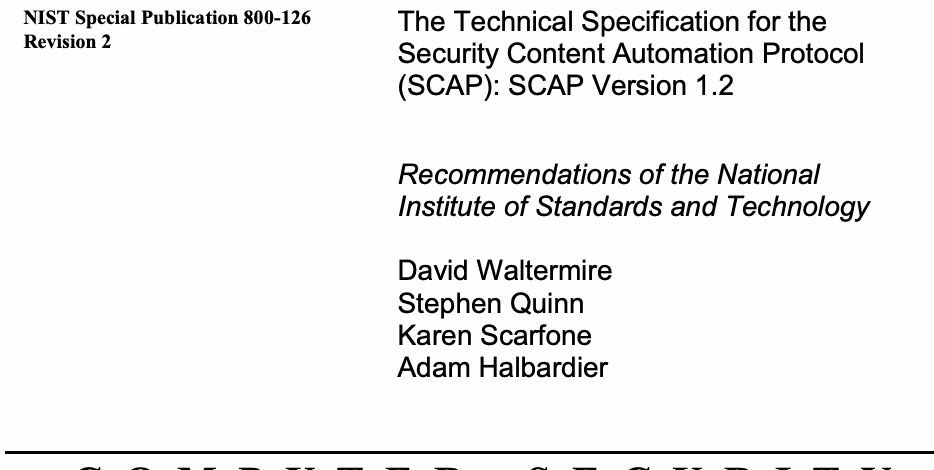
| NIST特別刊行物800-126 改訂第2版 | セキュリティ・コンテンツ自動化プロトコル（SCAP）の技術仕様：SCAPバージョン1.2 米国国立標準技術研究所の勧告 David Waltermire Stephen Quinn Karen Scarfone Adam Halbardier |
C O M P U T E R S E C U R I T Y
コ ン ピ ュ ー タ セ キ ュ リ テ ィ
未レビュー訳Computer Security Division Information Technology Laboratory National Institute of Standards and Technology Gaithersburg, MD 20899-8930
コンピュータセキュリティ部門 情報技術研究所 米国国立標準技術研究所 Gaithersburg, MD 20899-8930
未レビュー訳September 2011
2011年9月
未レビュー訳U.S. Department of Commerce
米国商務省
未レビュー訳Rebecca M. Blank, Acting Secretary
レベッカ・M・ブランク、長官代行
未レビュー訳National Institute of Standards and Technology
米国国立標準技術研究所
未レビュー訳Patrick D. Gallagher, Under Secretary for Standards and Technology and Director
パトリック・D・ギャラガー、標準技術担当次官兼所長
未レビュー訳Reports on Computer Systems Technology
コンピュータシステム技術に関する報告書
The Information Technology Laboratory (ITL) at the National Institute of Standards and Technology (NIST) promotes the U.S. economy and public welfare by providing technical leadership for the nation’s measurement and standards infrastructure. ITL develops tests, test methods, reference data, proof of concept implementations, and technical analysis to advance the development and productive use of information technology. ITL’s responsibilities include the development of technical, physical, administrative, and management standards and guidelines for the cost-effective security and privacy of sensitive unclassified information in Federal computer systems. This Special Publication 800-series reports on ITL’s research, guidance, and outreach efforts in computer security and its collaborative activities with industry, government, and academic organizations.
米国国立標準技術研究所（NIST）の情報技術研究所（ITL）は、国家の計測・標準インフラに技術的リーダーシップを提供することで、米国経済と公共の福祉を促進している。ITLは、情報技術の発展と生産的な利用を推進するため、試験、試験方法、参照データ、概念実証実装、および技術分析を開発している。ITLの責務には、連邦コンピュータシステムにおける機微な非機密情報のセキュリティとプライバシーを費用対効果の高い方法で確保するための、技術的、物理的、事務的、および管理的な標準とガイドラインの策定が含まれる。この特別刊行物800シリーズは、コンピュータセキュリティに関するITLの研究、指針、普及活動、および産業界、政府、学術機関との協力活動について報告するものである。
未レビュー訳National Institute of Standards and Technology Special Publication 800-126, Revision 2
米国国立標準技術研究所 特別刊行物800-126 改訂第2版
未レビュー訳58 pages (Sep. 2011)
全58ページ（2011年9月）
未レビュー訳原本PDFの抜粋画像
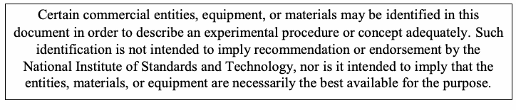
Acknowledgments
謝辞
The authors, David Waltermire and Stephen Quinn of the National Institute of Standards and Technology (NIST) Karen Scarfone of Scarfone Cybersecurity, and Adam Halbardier of Booz Allen Hamilton wish to thank their colleagues who reviewed drafts of this document and contributed to its technical content.
著者である米国国立標準技術研究所（NIST）のDavid WaltermireおよびStephen Quinn、Scarfone CybersecurityのKaren Scarfone、ならびにBooz Allen HamiltonのAdam Halbardierは、本書の草稿をレビューし、技術的内容に貢献した同僚に感謝する。
The authors would like to acknowledge the following contributors for their keen and insightful assistance with developing the current and previous versions of this specification: John Banghart, Harold Booth, Paul Cichonski, and Blair Heiserman of NIST; Christopher Johnson of HP Enterprise Services; Paul Bartock of the National Security Agency (NSA); Jeff Ito, Matt Kerr, Shane Shaffer, and Greg Witte of G2, Inc.; Andy Bove of SecureAcuity; Jim Ronayne of Varen Technologies; Kent Landfield of McAfee, Inc.; Christopher McCormick, Rhonda Farrell, Angela Orebaugh, and Victoria Thompson of Booz Allen Hamilton; Alan Peltzman of the Defense Information Systems Agency (DISA); and Jon Baker, Drew Buttner, Maria Casipe, and Charles Schmidt of the MITRE Corporation.
著者らは、本仕様の現行版および以前の版の策定に際し、鋭く洞察に満ちた支援を提供した次の貢献者に謝意を表する：NISTのJohn Banghart、Harold Booth、Paul Cichonski、Blair Heiserman；HP Enterprise ServicesのChristopher Johnson；米国国家安全保障局（NSA）のPaul Bartock；G2, Inc.のJeff Ito、Matt Kerr、Shane Shaffer、Greg Witte；SecureAcuityのAndy Bove；Varen TechnologiesのJim Ronayne；McAfee, Inc.のKent Landfield；Booz Allen HamiltonのChristopher McCormick、Rhonda Farrell、Angela Orebaugh、Victoria Thompson；国防情報システム局（DISA）のAlan Peltzman；およびMITRE CorporationのJon Baker、Drew Buttner、Maria Casipe、Charles Schmidt。
Trademark Information
商標情報
未レビュー訳OVAL and CVE are registered trademarks, and CCE, CPE, and OCIL are trademarks, of The MITRE Corporation.
OVALおよびCVEはThe MITRE Corporationの登録商標であり、CCE、CPE、およびOCILは同社の商標である。
Windows XP and Windows Server 2003 are registered trademarks of Microsoft Corporation.
Windows XPおよびWindows Server 2003は、Microsoft Corporationの登録商標である。
All other registered trademarks or trademarks belong to their respective organizations.
その他すべての登録商標または商標は、それぞれの組織に帰属する。
未レビュー訳Table of Contents
目次
Executive Summary — 1
要約 — 1
未レビュー訳1. Introduction — 3
1. はじめに — 3
未レビュー訳1.1 Authority — 3
1.1 権限 — 3
未レビュー訳1.2 Purpose and Scope — 3
1.2 目的および適用範囲 — 3
1.3 Audience — 3
1.3 対象読者 — 3
1.4 Document Structure — 4
1.4 文書の構成 — 4
未レビュー訳1.5 Document Conventions — 4
1.5 文書の規約 — 4
未レビュー訳2. SCAP 1.2 Conformance — 7
2. SCAP 1.2適合性 — 7
2.1 Product Conformance — 8
2.1 製品の適合性 — 8
未レビュー訳2.2 Source Content Conformance — 8
2.2 ソースコンテンツの適合性 — 8
未レビュー訳3. SCAP Content Requirements and Recommendations — 10
3. SCAPコンテンツの要件および推奨事項 — 10
未レビュー訳3.1 SCAP Source Data Stream — 10
3.1 SCAPソースデータストリーム — 10
未レビュー訳3.1.1 Source Data Stream Data Model — 12
3.1.1 ソースデータストリームのデータモデル — 12
3.1.2 Source Data Stream Collection Validation — 17
3.1.2 ソースデータストリームコレクションの検証 — 17
3.1.3 Globally Unique Identifiers — 18
3.1.3 グローバル一意識別子 — 18
未レビュー訳3.2 Extensible Configuration Checklist Description Format (XCCDF) — 18
3.2 拡張可能な構成チェックリスト記述形式（XCCDF） — 18
3.2.1 General — 18
3.2.1 一般 — 18
3.2.2 The <xccdf:Benchmark> Element — 19
3.2.2 <xccdf:Benchmark>要素 — 19
3.2.3 The <xccdf:Profile> Element — 20
3.2.3 <xccdf:Profile>要素 — 20
未レビュー訳3.2.4 The <xccdf:Rule> Element — 20
3.2.4 <xccdf:Rule>要素 — 20
未レビュー訳3.2.5 The <xccdf:Value> Element — 23
3.2.5 <xccdf:Value>要素 — 23
未レビュー訳3.2.6 The <xccdf:Group> Element — 23
3.2.6 <xccdf:Group>要素 — 23
未レビュー訳3.3 Open Vulnerability and Assessment Language (OVAL) — 23
3.3 オープン脆弱性評価言語（OVAL） — 23
3.4 Open Checklist Interactive Language (OCIL) — 26
3.4 オープンチェックリスト対話型言語（OCIL） — 26
未レビュー訳3.5 Common Platform Enumeration (CPE) — 26
3.5 共通プラットフォーム列挙（CPE） — 26
未レビュー訳3.6 Common Configuration Enumeration (CCE) — 27
3.6 共通構成列挙（CCE） — 27
3.7 Common Vulnerabilities and Exposures (CVE) — 28
3.7 共通脆弱性識別子（CVE） — 28
3.8 Common Vulnerability Scoring System (CVSS) — 28
3.8 共通脆弱性評価システム（CVSS） — 28
未レビュー訳3.9 Common Configuration Scoring System (CCSS) — 28
3.9 共通構成評価システム（CCSS） — 28
未レビュー訳3.10 XML Digital Signature — 28
3.10 XMLデジタル署名 — 28
未レビュー訳4. SCAP Content Processing Requirements and Recommendations — 30
4. SCAPコンテンツ処理の要件および推奨事項 — 30
4.1 Legacy Support — 30
4.1 レガシーサポート — 30
未レビュー訳4.2 Source Data Streams — 30
4.2 ソースデータストリーム — 30
4.3 XCCDF Processing — 31
4.3 XCCDF処理 — 31
4.3.1 CPE Applicability Processing — 31
4.3.1 CPE適用可能性処理 — 31
未レビュー訳4.3.2 Check System Usage — 31
4.3.2 チェックシステムの使用 — 31
未レビュー訳4.4 SCAP Result Data Streams — 32
4.4 SCAP結果データストリーム — 32
4.4.1 The Component Reports — 33
4.4.1 コンポーネントレポート — 33
未レビュー訳4.4.2 The Target Identification — 33
4.4.2 ターゲットの識別 — 33
未レビュー訳4.4.3 The Source Data Stream — 33
4.4.3 ソースデータストリーム — 33
未レビュー訳4.4.4 The Relationships — 33
4.4.4 関係 — 33
4.5 XCCDF Results — 34
4.5 XCCDF結果 — 34
未レビュー訳4.5.1 Assigning Identifiers to Rule Results — 36
4.5.1 ルール結果への識別子の割り当て — 36
未レビュー訳4.5.2 Mapping OVAL Results to XCCDF Results — 37
4.5.2 OVAL結果からXCCDF結果へのマッピング — 37
未レビュー訳4.6 OVAL Results — 38
4.6 OVAL結果 — 38
未レビュー訳4.7 OCIL Results — 39
4.7 OCIL結果 — 39
未レビュー訳4.8 Result Data Stream Signing — 39
4.8 結果データストリームへの署名 — 39
未レビュー訳5. Source Data Stream Content Requirements for Use Cases — 42
5. ユースケースに使用するソースデータストリームのコンテンツ要件 — 42
未レビュー訳5.1 Compliance Checking — 42
5.1 適合性チェック — 42
未レビュー訳5.2 Vulnerability Scanning — 42
5.2 脆弱性スキャン — 42
未レビュー訳5.3 Inventory Scanning — 43
5.3 インベントリスキャン — 43
Appendix A— Security Considerations....................................................................................A-1
付録A— セキュリティ上の考慮事項....................................................................................A-1
未レビュー訳Appendix B— Acronyms and Abbreviations............................................................................B-1
付録B— 頭字語および略語............................................................................B-1
未レビュー訳Appendix C— Glossary...........................................................................................................C-1
付録C— 用語集...........................................................................................................C-1
未レビュー訳Appendix D— Normative References......................................................................................D-1
付録D— 規範的参照文献......................................................................................D-1
未レビュー訳Appendix E— Change Log......................................................................................................E-1
付録E— 変更履歴......................................................................................................E-1
未レビュー訳List of Tables and Figures
表および図の一覧
未レビュー訳Table 1. Conventional XML Mappings — 5
表1. 従来型XMLマッピング — 5
未レビュー訳Figure 1 - SCAP Data Stream Collection — 10
図1 - SCAPデータストリームコレクション — 10
未レビュー訳Figure 2 - SCAP Data Stream — 11
図2 - SCAPデータストリーム — 11
未レビュー訳Table 2 - ds:data-stream-collection — 13
表2 - ds:data-stream-collection — 13
未レビュー訳Table 3 - ds:data-stream — 13
表3 - ds:data-stream — 13
未レビュー訳Table 4 - ds:dictionaries — 14
表4 - ds:dictionaries — 14
未レビュー訳Table 5 - ds:checklists — 14
表5 - ds:checklists — 14
未レビュー訳Table 6 - ds:checks — 15
表6 - ds:checks — 15
未レビュー訳Table 7 - ds:extended-components — 15
表7 - ds:extended-components — 15
未レビュー訳Table 8 - ds:component-ref — 15
表8 - ds:component-ref — 15
未レビュー訳Table 9 – cat:catalog — 16
表9 – cat:catalog — 16
未レビュー訳Table 10 – ds:component — 16
表10 – ds:component — 16
未レビュー訳Table 11 – ds:extended-component — 17
表11 – ds:extended-component — 17
Table 12 - SCAP Source Data Stream Component Document Elements — 17
表12 - SCAPソースデータストリームのコンポーネント文書要素 — 17
未レビュー訳Table 13 – Element Identifier Format Convention — 18
表13 – 要素識別子の形式規約 — 18
未レビュー訳Table 14 - Use of Dublin Core Terms in <xccdf:metadata> — 20
表14 - <xccdf:metadata>でのDublin Core用語の使用 — 20
未レビュー訳Table 15 – <xccdf:Rule> and <xccdf:ident> Element Values — 20
表15 – <xccdf:Rule>および<xccdf:ident>要素の値 — 20
未レビュー訳Table 16 - XCCDF-OVAL Data Export Matching Constraints — 23
表16 - XCCDF-OVALデータエクスポートの照合制約 — 23
未レビュー訳Table 17 - SCAP Result Data Stream Component Document Elements — 33
表17 - SCAP結果データストリームのコンポーネント文書要素 — 33
未レビュー訳Table 18 – Asset Identification Fields to Populate — 33
表18 – 入力する資産識別フィールド — 33
Table 19 – ARF Relationships — 34
表19 – ARFの関係 — 34
未レビュー訳Figure 3 – Sample ARF Report Structure..................................................................................34 Table 20 - XCCDF Fact Descriptions ........................................................................................36 Table 21 - Deriving XCCDF Check Results from OVAL Definition Results................................37 Table 22 - SCAP Schema and Schematron File Locations .....................................................D-2
図3 – ARFレポート構造の例..................................................................................34 表20 - XCCDFファクトの説明 ........................................................................................36 表21 - OVAL定義結果からのXCCDFチェック結果の導出................................37 表22 - SCAPスキーマおよびSchematronファイルの格納場所 .....................................................D-2
未レビュー訳Executive Summary
要約
未レビュー訳The Security Content Automation Protocol (SCAP) is a suite of specifications that standardize the format and nomenclature by which software flaw and security configuration information is communicated, both to machines and humans.1 SCAP is a multi-purpose framework of specifications that support automated configuration, vulnerability and patch checking, technical control compliance activities, and security measurement. Goals for the development of SCAP include standardizing system security management, promoting interoperability of security products, and fostering the use of standard expressions of security content. SCAP version 1.2 is comprised of eleven component specifications in five categories:
セキュリティ・コンテンツ自動化プロトコル（SCAP）は、ソフトウェアの欠陥およびセキュリティ構成に関する情報を、機械と人の双方に伝達する際の形式と命名法を標準化する仕様群である。1 SCAPは、自動化された構成、脆弱性およびパッチの検査、技術的統制への適合活動、ならびにセキュリティ測定を支援する多目的な仕様の枠組みである。SCAPの開発目標には、システムセキュリティ管理の標準化、セキュリティ製品の相互運用性の促進、および標準化されたセキュリティコンテンツ表現の利用促進が含まれる。SCAPバージョン1.2は、5つのカテゴリーに分類される11の構成要素仕様から成る：
未レビュー訳 Languages. The SCAP languages provide standard vocabularies and conventions for expressing security policy, technical check mechanisms, and assessment results. The SCAP language specifications are Extensible Configuration Checklist Description Format (XCCDF), Open Vulnerability and Assessment Language (OVAL®), and Open Checklist Interactive Language
言語。SCAP言語は、セキュリティポリシー、技術的な検査メカニズム、および評価結果を表現するための標準的な語彙と規約を提供する。SCAP言語仕様は、拡張可能な構成チェックリスト記述形式（XCCDF）、オープン脆弱性評価言語（OVAL®）、およびオープンチェックリスト対話型言語
未レビュー訳(OCIL™).
(OCIL™)。
未レビュー訳 Reporting formats. The SCAP reporting formats provide the necessary constructs to express collected information in standardized formats. The SCAP reporting format specifications are Asset Reporting Format (ARF) and Asset Identification. Although Asset Identification is not explicitly a reporting format, SCAP uses it as a key component in identifying the assets that reports relate to.
報告形式。SCAP報告形式は、収集した情報を標準化された形式で表現するために必要な構成要素を提供する。SCAP報告形式の仕様は、資産報告形式（ARF）および資産識別である。資産識別は明示的には報告形式ではないが、SCAPは報告対象の資産を識別するための主要な構成要素として使用する。
未レビュー訳 Enumerations. Each SCAP enumeration defines a standard nomenclature (naming format) and an official dictionary or list of items expressed using that nomenclature. The SCAP enumeration specifications are Common Platform Enumeration (CPE™), Common Configuration Enumeration (CCE™), and Common Vulnerabilities and Exposures (CVE®).
列挙。各SCAP列挙は、標準的な命名法（命名形式）と、その命名法で表現された項目の公式な辞書または一覧を定義する。SCAP列挙仕様は、共通プラットフォーム列挙（CPE™）、共通構成列挙（CCE™）、および共通脆弱性識別子（CVE®）である。
未レビュー訳 Measurement and scoring systems. In SCAP this refers to evaluating specific characteristics of a security weakness (for example, software vulnerabilities and security configuration issues) and, based on those characteristics, generating a score that reflects their relative severity. The SCAP measurement and scoring system specifications are Common Vulnerability Scoring System (CVSS) and Common Configuration Scoring System (CCSS).
測定およびスコアリングシステム。SCAPにおいてこれは、セキュリティ上の弱点（たとえばソフトウェア脆弱性やセキュリティ構成の問題）の特性を評価し、その特性に基づいて相対的な深刻度を示すスコアを生成することを指す。SCAPの測定およびスコアリングシステムの仕様は、共通脆弱性評価システム（CVSS）および共通構成評価システム（CCSS）である。
未レビュー訳 Integrity. An SCAP integrity specification helps to preserve the integrity of SCAP content and results. Trust Model for Security Automation Data (TMSAD) is the SCAP integrity specification. SCAP utilizes software flaw and security configuration standard reference data. This reference data is provided by the National Vulnerability Database (NVD),2 which is managed by NIST and sponsored by the Department of Homeland Security (DHS). This publication defines the technical composition of SCAP version 1.2 in terms of its component specifications, their interrelationships and interoperation, and the requirements for SCAP content. The technical specification for SCAP in this publication describes the requirements and conventions that are to be employed to ensure the consistent and accurate exchange of SCAP-conformant content and the ability to reliably use the content with SCAP-conformant products. The U.S. Federal Government, in cooperation with academia and private industry, is adopting SCAP and encourages its use in support of security automation activities and initiatives.3 SCAP has achieved widespread adoption by major software manufacturers and has become a significant component of large information security management and governance programs. The protocol is expected to evolve and expand in support of the growing needs to define and measure effective security controls, assess and monitor ongoing aspects of that information security, and successfully manage systems in accordance with risk management frameworks such as NIST Special Publication 800-534, Department of Defense (DoD) Instruction 8500.2, and the Payment Card Industry (PCI) framework. By detailing the specific and appropriate usage of the SCAP 1.2 components and their interoperability, NIST encourages the creation of reliable and pervasive SCAP content and the development of a wide array of products that leverage SCAP. Organizations that develop SCAP 1.2-based content or products should comply with the following recommendations: Follow the requirements listed in this document and in the associated component specifications. Organizations should ensure that their implementation and use of SCAP 1.2 is compliant with the requirements detailed in each component specification and this document. If requirements are in conflict between component specifications, this document will provide clarification. If a component specification is in conflict with this document, the requirements in this document take precedence. When creating SCAP content, adhere to the conventions specified in this document. Security products and checklist authors assemble content from SCAP data repositories to create SCAP-conformant security guidance. For example, a security configuration checklist can document desired security configuration settings, installed patches, and other system security elements using a standardized SCAP format. Such a checklist would use XCCDF to describe the checklist, CCE to identify security configuration settings to be addressed or assessed, and CPE to identify platforms for which the checklist is valid. The use of CCE and CPE entries within XCCDF checklists is an example of an SCAP convention—a requirement for valid SCAP usage. These conventions are considered part of the definition of SCAP 1.2. Organizations producing SCAP content should adhere to these conventions to ensure the highest degree of interoperability. NIST provides an SCAP Content Validation Tool that organizations can use to help validate the correctness of their SCAP content. The tool checks that SCAP source and result content is well-formed, all cross references are valid, and required values are appropriately set.5
完全性。SCAP完全性仕様は、SCAPコンテンツおよび結果の完全性を保つのに役立つ。Trust Model for Security Automation Data（TMSAD）がSCAPの完全性仕様である。SCAPは、ソフトウェアの欠陥およびセキュリティ構成に関する標準参照データを利用する。この参照データは、NISTが管理し、国土安全保障省（DHS）が後援するNational Vulnerability Database（NVD）,2によって提供される。本刊行物は、構成要素仕様、それらの相互関係と相互運用、およびSCAPコンテンツの要件の観点から、SCAPバージョン1.2の技術的構成を定義する。本刊行物に記載するSCAP技術仕様では、SCAP準拠コンテンツを一貫性と正確性をもって交換し、そのコンテンツをSCAP準拠製品で確実に使用するための要件と規約を説明する。米国連邦政府は、学術界および民間産業界と協力してSCAPを採用し、セキュリティ自動化活動および取り組みを支援するためにその利用を推奨している。3 SCAPは主要なソフトウェアメーカーに広く採用され、大規模な情報セキュリティ管理・統制プログラムの重要な構成要素となっている。このプロトコルは、効果的なセキュリティ統制を定義および測定し、情報セキュリティの継続的な側面を評価および監視し、NIST特別刊行物800-53⁴、国防総省（DoD）指示8500.2、およびペイメントカード業界（PCI）フレームワークなどのリスク管理フレームワークに従ってシステムを適切に管理するという高まるニーズを支援するため、進化・拡張する見込みである。SCAP 1.2の構成要素を適切かつ具体的に使用し、それらの相互運用性を詳述することにより、NISTは信頼性が高く広範に利用できるSCAPコンテンツの作成と、SCAPを活用する幅広い製品の開発を促進する。SCAP 1.2に基づくコンテンツまたは製品を開発する組織は、次の推奨事項に従うべきである（should）：本書および関連する構成要素仕様に記載された要件に従うこと。組織は、SCAP 1.2の実装および使用が、各構成要素仕様および本書で詳述された要件に適合していることを確認すべきである（should）。構成要素仕様間で要件が競合する場合、本書が明確化を提供する。構成要素仕様が本書と競合する場合、本書の要件が優先される。SCAPコンテンツを作成する際は、本書で規定する規約に従うこと。セキュリティ製品およびチェックリストの作成者は、SCAPデータリポジトリからコンテンツを集めてSCAP準拠のセキュリティ指針を作成する。たとえば、セキュリティ構成チェックリストは、標準化されたSCAP形式を用いて、望ましいセキュリティ構成設定、インストール済みパッチ、およびその他のシステムセキュリティ要素を記録できる（can）。このようなチェックリストでは、チェックリストの記述にXCCDFを使用し、対処または評価するセキュリティ構成設定の識別にCCEを使用し、チェックリストが有効なプラットフォームの識別にCPEを使用する。XCCDFチェックリスト内でCCEおよびCPEのエントリを使用することは、SCAPの規約、すなわち有効なSCAP使用の要件の一例である。これらの規約はSCAP 1.2の定義の一部とみなされる。SCAPコンテンツを作成する組織は、最高度の相互運用性を確保するため、これらの規約に従うべきである（should）。NISTはSCAPコンテンツ検証ツールを提供しており、組織はこれを使用してSCAPコンテンツの正しさを検証できる（can）。このツールは、SCAPのソースコンテンツおよび結果コンテンツが整形式であること、すべての相互参照が有効であること、必要な値が適切に設定されていることを確認する。⁵
未レビュー訳1. Introduction
1. はじめに
未レビュー訳1.1 Authority
1.1 権限
The National Institute of Standards and Technology (NIST) developed this document in furtherance of its statutory responsibilities under the Federal Information Security Management Act (FISMA) of 2002, Public Law 107-347. NIST is responsible for developing standards and guidelines, including minimum requirements, for providing adequate information security for all agency operations and assets; but such standards and guidelines shall not apply to national security systems. This guideline is consistent with the requirements of the Office of Management and Budget (OMB) Circular A-130, Section 8b(3), “Securing Agency Information Systems,” as analyzed in A-130, Appendix IV: Analysis of Key Sections. Supplemental information is provided in A-130, Appendix III. This guideline has been prepared for use by Federal agencies. It may be used by nongovernmental organizations on a voluntary basis and is not subject to copyright, though attribution is desired. Nothing in this document should be taken to contradict standards and guidelines made mandatory and binding on Federal agencies by the Secretary of Commerce under statutory authority, nor should these guidelines be interpreted as altering or superseding the existing authorities of the Secretary of Commerce, Director of the OMB, or any other Federal official.
NISTは、2002年連邦情報セキュリティ管理法（FISMA）、公法107-347に基づく法定責務をさらに推進するため、本書を作成した。NISTは、すべての機関の業務および資産に適切な情報セキュリティを提供するため、最低要件を含む標準およびガイドラインを策定する責任を負う。ただし、そのような標準およびガイドラインは国家安全保障システムには適用してはならない（shall not）。本ガイドラインは、行政管理予算局（OMB）通達A-130第8b(3)節「機関情報システムのセキュリティ確保」の要件に整合しており、その内容はA-130付録IV「主要セクションの分析」で検討されている。補足情報はA-130付録IIIに記載されている。本ガイドラインは連邦機関での使用を目的として作成された。政府機関以外の組織も任意で使用してよく（may）、著作権の対象ではないが、出典表示が望まれる。本書のいかなる記述も、法定権限に基づき商務長官が連邦機関に義務付け、拘束力を持たせた標準およびガイドラインに反するものと解釈すべきではなく（should）、また、本ガイドラインを、商務長官、OMB長官、その他の連邦当局者が有する既存の権限を変更または置き換えるものと解釈すべきではない（should）。
未レビュー訳1.2 Purpose and Scope
1.2 目的および適用範囲
This document provides the definitive technical specification for version 1.2 of the Security Content Automation Protocol (SCAP). SCAP (pronounced ess-cap) consists of a suite of specifications for standardizing the format and nomenclature by which software flaw and security configuration information is communicated, both to machines and humans. This document defines requirements for creating and processing SCAP source content. These requirements build on the requirements defined within the individual SCAP component specifications. Each new requirement pertains either to using multiple component specifications together or to further constraining one of the individual component specifications. The requirements within the individual component specifications are not repeated in this document; see those specifications to view their requirements. The scope of this document is limited to SCAP version 1.2. Other versions of SCAP and its component specifications, including emerging specifications, are not addressed here. Future versions of SCAP will be defined in distinct revisions of this document, each clearly labeled with a document revision number and the appropriate SCAP version number. SCAP revisions are managed through a coordinated process defined within the SCAP Release Cycle.6 The release cycle workflow manages changes related to SCAP specifications and validation processes including the addition of new specifications or updates to existing specifications. This process encourages community involvement, promotes transparency and awareness regarding proposed changes, and affords ample lead time to prepare for pending changes.
本書は、セキュリティ・コンテンツ自動化プロトコル（SCAP）バージョン1.2の確定的な技術仕様を提示する。SCAP（「エスキャップ」と発音）は、ソフトウェアの欠陥およびセキュリティ構成に関する情報を、機械と人の双方に伝達する際の形式と命名法を標準化する仕様群で構成されている。本書は、SCAPソースコンテンツの作成および処理に関する要件を定義する。これらの要件は、個々のSCAP構成要素仕様で定義された要件を基礎とする。新しい要件は、複数の構成要素仕様を組み合わせて使用すること、または個々の構成要素仕様の制約をさらに強化することのいずれかに関するものである。個々の構成要素仕様内の要件は本書では繰り返さない。要件については各仕様を参照すること。本書の適用範囲はSCAPバージョン1.2に限定される。SCAPの他のバージョンおよびその構成要素仕様（策定中の仕様を含む）は、本書では扱わない。SCAPの将来のバージョンは、本書の別個の改訂版で定義し、各改訂版には文書改訂番号と該当するSCAPバージョン番号を明記する。SCAPの改訂は、SCAP Release Cycleで定義された調整プロセスを通じて管理される。6 リリースサイクルのワークフローは、新しい仕様の追加や既存仕様の更新など、SCAP仕様および検証プロセスに関する変更を管理する。このプロセスは、コミュニティの参加を促し、提案された変更について透明性と認識を高め、今後の変更に備えるための十分な準備期間を確保する。
未レビュー訳1.3 Audience
1.3 対象読者
This document is intended for three primary audiences:
本書は、主に次の3つの対象読者を想定している：
Content authors and editors seeking to ensure that the SCAP source content they produce operates correctly, consistently, and reliably in SCAP products.
SCAP製品で正しく、一貫性があり、確実に動作するSCAPソースコンテンツの作成を目指すコンテンツ作成者および編集者。
未レビュー訳 Software developers and system integrators seeking to create, use, or exchange SCAP content in their products or service offerings.
自社製品またはサービスでSCAPコンテンツを作成、使用、または交換するソフトウェア開発者およびシステムインテグレーター。
未レビュー訳 Product developers preparing for SCAP validation at an accredited independent testing laboratory. This document assumes that readers already have general knowledge of SCAP and reasonable familiarity with the SCAP component specifications that their content, products, or services use. Individuals without this level of knowledge who would like to learn more about SCAP should consult NIST Special Publication (SP) 800-117, Guide to Adopting and Using the Security Content Automation Protocol.7
認定された独立試験機関でSCAP検証を受ける準備をしている製品開発者。本書では、読者がSCAPに関する一般知識と、自らのコンテンツ、製品、またはサービスで使用するSCAP構成要素仕様について相応の知識を有していることを前提とする。この水準の知識を持たず、SCAPについてさらに学びたい人は、NIST特別刊行物（SP）800-117「セキュリティ・コンテンツ自動化プロトコルの採用と利用に関するガイド」を参照すべきである（should）。7
未レビュー訳1.4 Document Structure
1.4 文書の構成
The remainder of this document is organized into the following major sections and appendices:
本書の残りの部分は、次の主要な節および付録で構成される：
Section 2 provides the high-level requirements for claiming conformance with the SCAP 1.2 specification.
第2節では、SCAP 1.2仕様への適合を主張するための上位要件を示す。
未レビュー訳 Section 3 details the requirements and recommendations for SCAP content syntax, structure, and development.
第3節では、SCAPコンテンツの構文、構造、および開発に関する要件と推奨事項を詳述する。
未レビュー訳 Section 4 defines SCAP content processing requirements and recommendations.
第4節では、SCAPコンテンツ処理の要件および推奨事項を定義する。
未レビュー訳 Section 5 provides additional content requirements and recommendations for particular use cases.
第5節では、特定のユースケースに関する追加のコンテンツ要件および推奨事項を示す。
未レビュー訳 Appendix A gives an overview of major security considerations for SCAP implementation.
付録Aでは、SCAP実装に関する主なセキュリティ上の考慮事項を概説する。
未レビュー訳 Appendix B contains an acronym and abbreviation list.
付録Bには、頭字語および略語の一覧を記載する。
未レビュー訳 Appendix C contains a glossary of selected terms used in the document.
付録Cには、本書で使用する用語のうち選定したものの用語集を記載する。
未レビュー訳 Appendix D lists references and other resources related to SCAP 1.2.
付録Dには、SCAP 1.2に関連する参考文献およびその他のリソースを列挙する。
未レビュー訳 Appendix E provides a change log that documents significant changes to major drafts of this specification.
付録Eには、本仕様の主要な草案に対する重要な変更を記録した変更履歴を記載する。
未レビュー訳1.5 Document Conventions
1.5 文書の規約
The key words “MUST”, “MUST NOT”, “REQUIRED”, “SHALL”, “SHALL NOT”, “SHOULD”, “SHOULD NOT”, “RECOMMENDED”, “MAY”, and “OPTIONAL” in this document are to be interpreted as described in Request for Comment (RFC) 2119 [RFC2119]. When these words appear in regular case, such as “should” or “may”, they are not intended to be interpreted as RFC 2119 key words. When a single term within a sentence is italicized, this indicates that the term is being defined. These terms and their definitions also appear in Appendix C. Some of the requirements and conventions used in this document reference Extensible Markup Language (XML) content [XMLS]. These references come in two forms, inline and indented. An example of an inline reference is: a <cpe2_dict:cpe-item> may contain <cpe2_dict:check> elements that reference OVAL Definitions. In this example the notation <cpe2_dict:cpe-item> can be replaced by the more verbose equivalent “the XML element whose qualified name is cpe2_dict:cpe-item”. An example of an indented reference is: References to OVAL Definitions are expressed using the following format:
本書におけるキーワード「MUST」、「MUST NOT」、「REQUIRED」、「SHALL」、「SHALL NOT」、「SHOULD」、「SHOULD NOT」、「RECOMMENDED」、「MAY」、および「OPTIONAL」は、Request for Comments（RFC）2119 [RFC2119]に記載された意味で解釈する。これらの語が通常の小文字表記（たとえば「should」または「may」）で現れる場合、RFC 2119のキーワードとして解釈する意図はない。文中の単一の用語がイタリック体で示されている場合、その用語が定義されていることを表す。これらの用語と定義は付録Cにも記載されている。本書で使用する要件および規約の一部は、拡張可能マークアップ言語（XML）コンテンツ[XMLS]を参照する。参照形式には、インライン形式と字下げ形式の2種類がある。インライン参照の例：a <cpe2_dict:cpe-item> may contain <cpe2_dict:check> elements that reference OVAL Definitions. この例では、表記<cpe2_dict:cpe-item>を、より詳しい同等表現「修飾名がcpe2_dict:cpe-itemであるXML要素」に置き換えることがcan（できる）。字下げ参照の例：OVAL定義への参照は、次の形式で表す：
未レビュー訳<cpe2_dict:check system= "http://oval.mitre.org/XMLSchema/oval-definitions-5" href="Oval_URL">[Oval_inventory_definition_id]
<cpe2_dict:check system= "http://oval.mitre.org/XMLSchema/oval-definitions-5" href="Oval_URL">[Oval_inventory_definition_id]
未レビュー訳</cpe2_dict:check>.
</cpe2_dict:check>.
未レビュー訳The general convention used when describing XML attributes within this document is to reference the attribute as well as its associated element including the namespace alias, employing the general form "@attributeName for the <prefix:localName>". Indented references are intended to represent the form of actual XML content. Indented references represent literal content by the use of a fixed-length font, and parametric (freely replaceable) content by the use of an italic font. Square brackets ‘[]’ are used to designate optional content. Thus "[Oval_inventory_definition_id]" designates optional parametric content. Both inline and indented forms use qualified names to refer to specific XML elements. A qualified name associates a named element with a namespace. The namespace identifies the XML model, and the XML schema is a definition and implementation of that model. A qualified name declares this schema to element association using the format ‘prefix:element-name’. The association of prefix to namespace is defined in the metadata of an XML document and varies from document to document. In this specification, the conventional mappings listed in Table 1 are used. Table 1. Conventional XML Mappings
本書では、XML属性を記述する際の一般的な規約として、属性を、その関連する要素および名前空間別名とともに、一般形式 "@attributeName for the <prefix:localName>"で示す。字下げ参照は、実際のXMLコンテンツの形式を表すことを意図している。字下げ参照では、固定幅フォントを用いてリテラルコンテンツを表し、イタリック体を用いてパラメーター（自由に置換可能な）コンテンツを表す。角括弧「[]」は任意のコンテンツを示す。したがって、"[Oval_inventory_definition_id]"は任意のパラメーターコンテンツを示す。インライン形式と字下げ形式の両方で、特定のXML要素を指すために修飾名を使用する。修飾名は、名前付き要素を名前空間に関連付ける。名前空間はXMLモデルを識別し、XMLスキーマはそのモデルの定義および実装である。修飾名は‘prefix:element-name’という形式で、このスキーマと要素の関連付けを宣言する。接頭辞と名前空間の対応付けはXML文書のメタデータで定義され、文書ごとに異なる。本仕様では、表1に示す従来型マッピングを使用する。表1. 従来型XMLマッピング
未レビュー訳| Prefix | Namespace | Schema |
| ai | http://scap.nist.gov/schema/asset-identification/1.1 | Asset Identification |
| arf | http://scap.nist.gov/schema/asset-reporting-format/1.1 | ARF |
| arf-rel | http://scap.nist.gov/vocabulary/arf/relationships/1.0# | ARF relationships |
| cat | urn:oasis:names:tc:entity:xmlns:xml:catalog | XML Catalog |
| con | http://scap.nist.gov/schema/scap/constructs/1.2 | SCAP Constructs |
| cpe2 | http://cpe.mitre.org/language/2.0 | Embedded CPE references |
| cpe2-dict | http://cpe.mitre.org/dictionary/2.0 | CPE dictionaries |
| cve | http://scap.nist.gov/schema/vulnerability/0.4 | NVD/CVE data feed elements and attributes |
| cvss | http://scap.nist.gov/schema/cvss-v2/0.2 | NVD/CVSS data feed elements and attributes |
| dc | http://purl.org/dc/elements/1.1/ | Simple Dublin Core elements |
| ds | http://scap.nist.gov/schema/scap/source/1.2 | SCAP source data stream collection |
| dt | http://scap.nist.gov/schema/xml-dsig/1.0 | Security automation digital signature extensions |
| nvd | http://scap.nist.gov/schema/feed/vulnerability/2.0 | Base schema for NVD data feeds |
| ocil | http://scap.nist.gov/schema/ocil/2.0 | OCIL elements and attributes |
| oval | http://oval.mitre.org/XMLSchema/oval-common-5 | Common OVAL elements and attributes |
| oval-def | http://oval.mitre.org/XMLSchema/oval-definitions-5 | OVAL Definitions |
| oval-res | http://oval.mitre.org/XMLSchema/oval-results-5 | OVAL results |
| oval-sc | http://oval.mitre.org/XMLSchema/oval-system- characteristics-5 | OVAL system characteristics |
| oval-var | http://oval.mitre.org/XMLSchema/oval-variables-5 | The elements, types, and attributes that compose the core schema for encoding OVAL Variables. This schema is provided to give structure to any external variables and their values that an OVAL Definition is expecting. |
| scap-rel | http://scap.nist.gov/vocabulary/scap/relationships/1.0# | SCAP relationships |
| sch | http://purl.oclc.org/dsdl/schematron | Schematron validation scripts |
| xccdf | http://checklists.nist.gov/xccdf/1.2 | XCCDF policy documents |
| xlink | http://www.w3.org/1999/xlink | XML Linking Language |
原本PDFの抜粋画像
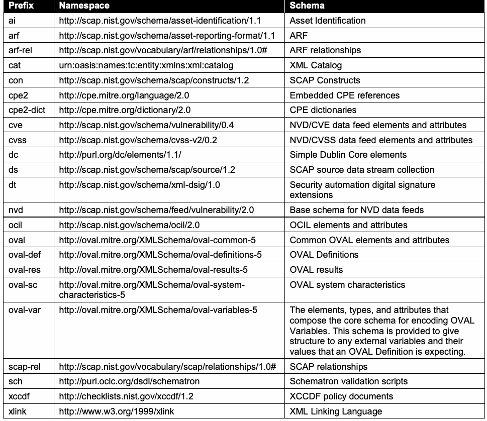
| 接頭辞 | 名前空間 | スキーマ |
| ai | http://scap.nist.gov/schema/asset-identification/1.1 | 資産識別 |
| arf | http://scap.nist.gov/schema/asset-reporting-format/1.1 | ARF |
| arf-rel | http://scap.nist.gov/vocabulary/arf/relationships/1.0# | ARFの関係 |
| cat | urn:oasis:names:tc:entity:xmlns:xml:catalog | XMLカタログ |
| con | http://scap.nist.gov/schema/scap/constructs/1.2 | SCAP構成要素 |
| cpe2 | http://cpe.mitre.org/language/2.0 | 埋め込みCPE参照 |
| cpe2-dict | http://cpe.mitre.org/dictionary/2.0 | CPE辞書 |
| cve | http://scap.nist.gov/schema/vulnerability/0.4 | NVD/CVEデータフィードの要素および属性 |
| cvss | http://scap.nist.gov/schema/cvss-v2/0.2 | NVD/CVSSデータフィードの要素および属性 |
| dc | http://purl.org/dc/elements/1.1/ | Simple Dublin Core要素 |
| ds | http://scap.nist.gov/schema/scap/source/1.2 | SCAPソースデータストリームコレクション |
| dt | http://scap.nist.gov/schema/xml-dsig/1.0 | セキュリティ自動化デジタル署名拡張 |
| nvd | http://scap.nist.gov/schema/feed/vulnerability/2.0 | NVDデータフィードの基本スキーマ |
| ocil | http://scap.nist.gov/schema/ocil/2.0 | OCIL要素および属性 |
| oval | http://oval.mitre.org/XMLSchema/oval-common-5 | 共通OVAL要素および属性 |
| oval-def | http://oval.mitre.org/XMLSchema/oval-definitions-5 | OVAL定義 |
| oval-res | http://oval.mitre.org/XMLSchema/oval-results-5 | OVAL結果 |
| oval-sc | http://oval.mitre.org/XMLSchema/oval-system- characteristics-5 | OVALシステム特性 |
| oval-var | http://oval.mitre.org/XMLSchema/oval-variables-5 | OVAL変数を符号化するコアスキーマを構成する要素、型、および属性。このスキーマは、OVAL定義が想定する外部変数およびその値に構造を与えるために提供されている。 |
| scap-rel | http://scap.nist.gov/vocabulary/scap/relationships/1.0# | SCAPの関係 |
| sch | http://purl.oclc.org/dsdl/schematron | Schematron検証スクリプト |
| xccdf | http://checklists.nist.gov/xccdf/1.2 | XCCDFポリシー文書 |
| xlink | http://www.w3.org/1999/xlink | XMLリンク言語 |
| Prefix | Namespace | Schema |
| xml | http://www.w3.org/XML/1998/namespace | Common XML attributes |
| xxxx-def | http://oval.mitre.org/XMLSchema/oval-definitions- 5#xxxx | OVAL elements and attributes specific to an OS, Hardware, or Application type xxxx8 |
| xxxx-sc | http://oval.mitre.org/XMLSchema/oval-system- characteristics-5#xxxx | OVAL system characteristic elements and attributes specific to an OS, Hardware, or Application type xxxx |
原本PDFの抜粋画像
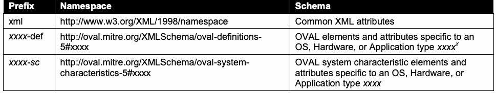
| 接頭辞 | 名前空間 | スキーマ |
| xml | http://www.w3.org/XML/1998/namespace | 共通XML属性 |
| xxxx-def | http://oval.mitre.org/XMLSchema/oval-definitions- 5#xxxx | OS、ハードウェア、またはアプリケーション型xxxx8に固有のOVAL要素および属性 |
| xxxx-sc | http://oval.mitre.org/XMLSchema/oval-system- characteristics-5#xxxx | OS、ハードウェア、またはアプリケーション型xxxxに固有のOVALシステム特性要素および属性 |
2. SCAP 1.2 Conformance
2. SCAP 1.2適合性
未レビュー訳The component specifications included in SCAP 1.2 are as follows:
SCAP 1.2に含まれる構成要素仕様は次のとおりである：
Languages o Extensible Configuration Checklist Description Format (XCCDF) 1.2, a language for authoring security checklists/benchmarks and for reporting results of evaluating them [XCCDF] o Open Vulnerability and Assessment Language (OVAL) 5.10, a language for representing system configuration information, assessing machine state, and reporting assessment results [OVAL] o Open Checklist Interactive Language (OCIL) 2.0, a language for representing checks that collect information from people or from existing data stores made by other data collection efforts [OCIL]
言語 o 拡張可能な構成チェックリスト記述形式（XCCDF）1.2：セキュリティチェックリスト／ベンチマークを作成し、それらの評価結果を報告するための言語 [XCCDF] o オープン脆弱性評価言語（OVAL）5.10：システム構成情報の表現、マシン状態の評価、および評価結果の報告に用いる言語 [OVAL] o オープンチェックリスト対話型言語（OCIL）2.0：人または他のデータ収集活動が作成した既存データストアから情報を収集するチェックを表現する言語 [OCIL]
未レビュー訳• Reporting formats
o Asset Reporting Format (ARF) 1.1, a format for expressing the transport format of information about assets and the relationships between assets and reports [ARF]
o Asset Identification 1.1, a format for uniquely identifying assets based on known identifiers and/or known information about the assets [AI]
• 報告形式
o 資産報告形式（ARF）1.1：資産に関する情報の転送形式、および資産とレポートの間の関係を表現するための形式 [ARF]
o 資産識別（Asset Identification）1.1：既知の識別子および／または資産に関する既知の情報に基づいて資産を一意に識別するための形式 [AI]
• Enumerations
o Common Platform Enumeration (CPE) 2.3, a nomenclature and dictionary of hardware, operating systems, and applications [CPE]
o Common Configuration Enumeration (CCE) 5, a nomenclature and dictionary of software security configurations [CCE]
o Common Vulnerabilities and Exposures (CVE), a nomenclature and dictionary of security-related software flaws9 [CVE]
• 列挙
o 共通プラットフォーム列挙（CPE）2.3：ハードウェア、オペレーティングシステム、およびアプリケーションの命名法および辞書 [CPE]
o 共通構成列挙（CCE）5：ソフトウェアのセキュリティ構成の命名法および辞書 [CCE]
o 共通脆弱性識別子（CVE）：セキュリティ関連のソフトウェア欠陥の命名法および辞書9 [CVE]
• Measurement and scoring systems
o Common Vulnerability Scoring System (CVSS) 2.0, a system for measuring the relative severity of software flaw vulnerabilities [CVSS]
o Common Configuration Scoring System (CCSS) 1.0, a system for measuring the relative severity of system security configuration issues [CCSS]
• 測定およびスコアリングシステム
o 共通脆弱性評価システム（CVSS）2.0：ソフトウェア欠陥の脆弱性の相対的な深刻度を測定するシステム [CVSS]
o 共通構成評価システム（CCSS）1.0：システムのセキュリティ構成上の問題の相対的な深刻度を測定するシステム [CCSS]
Integrity o Trust Model for Security Automation Data (TMSAD) 1.0, a specification for using digital signatures in a common trust model applied to other security automation specifications
完全性 o セキュリティ自動化データの信頼モデル（TMSAD）1.0：他のセキュリティ自動化仕様に適用される共通信頼モデルでデジタル署名を使用するための仕様
未レビュー訳[TMSAD].
[TMSAD]。
未レビュー訳All references to these specifications within this document are to the version numbers listed above unless otherwise explicitly specified. Combinations of these specifications can be used together for particular functions, such as security configuration checking. These functions, known as SCAP use cases, are ways in which a product can use SCAP. The collective XML content used for a use case is called an SCAP data stream, which is a specific instantiation of SCAP content. There are two types of SCAP data streams: an SCAP source data stream holds the input content, and an SCAP result data stream holds the output content. The major elements of a data stream, such as an XCCDF benchmark or a set of OVAL Definitions, are referred to as stream components.
本書内でこれらの仕様を参照する場合、特に別途明記されない限り、上記のバージョン番号を指す。これらの仕様は、セキュリティ構成チェックなどの特定の機能に組み合わせて使用できる（can）。こうした機能はSCAPユースケースと呼ばれ、製品はこれらを利用してSCAPを使用することができる（can）。ユースケースに使用されるXMLコンテンツ全体をSCAPデータストリームと呼び、これはSCAPコンテンツの特定のインスタンスである。SCAPデータストリームには、入力コンテンツを格納するSCAPソースデータストリームと、出力コンテンツを格納するSCAP結果データストリームの2種類がある。XCCDFベンチマークやOVAL定義のセットなど、データストリームの主要な要素はストリームコンポーネントと呼ばれる。
未レビュー訳Products and source content may want to claim conformance to one or more of the SCAP use cases, which are defined in Section 5 of this document, for a variety of reasons. For example, a product may want to assert that it uses SCAP content properly and can interoperate with other products using valid SCAP content. Another example is a policy mandating that an organization use SCAP source content for performing vulnerability assessments and other security operations. This section provides the high-level requirements that a product or source content must meet for conformance with the SCAP 1.2 specification. Such products and source content are referred to as SCAP conformant. Most of the requirements listed in this section reference other sections in the document that fully define the requirements. If requirements are in conflict between component specifications, this document will provide clarification. If a component specification is in conflict with this document, the requirements in this document SHALL take precedence. If requirements are in conflict between this document and the errata for this document, the errata SHALL take precedence.
製品やソースコンテンツが、本書の第5章で定義するSCAPユースケースの一つ以上への適合を表明しようとする理由はさまざまである。例えば、製品はSCAPコンテンツを適切に使用し、有効なSCAPコンテンツを使用する他製品と相互運用できることを示そうとする場合がある。また、脆弱性評価その他のセキュリティ運用にSCAPソースコンテンツを使用するよう組織に義務付ける方針も例として挙げられる。本節では、製品またはソースコンテンツがSCAP 1.2仕様への適合にあたり満たすべき上位レベルの要件を示す。このような製品およびソースコンテンツをSCAP適合と呼ぶ。本節に列挙する要件の多くは、要件を詳述する本書の他の節を参照している。コンポーネント仕様間で要件が矛盾する場合、本書が明確化を行う。コンポーネント仕様と本書が矛盾する場合、本書の要件が優先される SHALL。本書と本書の正誤表の要件が矛盾する場合、正誤表が優先される SHALL。
未レビュー訳2.1 Product Conformance
2.1 製品の適合性
There are two types of SCAP-conformant products: content producers and content consumers. Content producers are products that generate SCAP source data stream content, while content consumers are products that accept existing SCAP source data stream content, process it, and produce SCAP result data streams. Products claiming conformance with the SCAP 1.2 specification SHALL comply with the following requirements:
SCAP適合製品には、コンテンツ生成者とコンテンツ利用者の2種類がある。コンテンツ生成者はSCAPソースデータストリームのコンテンツを生成する製品であり、コンテンツ利用者は既存のSCAPソースデータストリームのコンテンツを受け取り、処理し、SCAP結果データストリームを生成する製品である。SCAP 1.2仕様への適合を主張する製品は、次の要件を満たさなければならない SHALL：
1.Adhere to the requirements detailed in each applicable component specification (for each selected SCAP component specification, and for each SCAP component specification required to implement the selected SCAP use cases). The authoritative references for each specification are listed in Appendix C.
1.適用される各コンポーネント仕様（選択した各SCAPコンポーネント仕様、および選択したSCAPユースケースを実装するために必要な各SCAPコンポーネント仕様）に詳述された要件を遵守する。各仕様の正式な参照先は付録Cに記載する。
未レビュー訳2.Adhere to the requirements detailed in the errata for this document [ERRATA].
2.本書の正誤表[ERRATA]に詳述された要件を遵守する。
3.For content producers, generate well-formed SCAP source data streams. This includes following the source content conformance requirements specified in Section 2.2, and following the requirements in Section 5 for the use cases that the content producer supports.
3.コンテンツ生成者は、整形式のSCAPソースデータストリームを生成する。これには、第2.2節に定めるソースコンテンツ適合要件、およびコンテンツ生成者がサポートするユースケースについて第5章に定める要件への準拠が含まれる。
4.For content consumers, consume and process well-formed SCAP source data streams, and generate well-formed SCAP result data streams. This includes following all of the processing requirements defined in Section 4 for each selected SCAP component specification and each SCAP component specification required to implement the selected SCAP use cases.
4.コンテンツ利用者は、整形式のSCAPソースデータストリームを受け取って処理し、整形式のSCAP結果データストリームを生成する。これには、選択した各SCAPコンポーネント仕様、および選択したSCAPユースケースの実装に必要な各SCAPコンポーネント仕様について、第4章で定めるすべての処理要件への準拠が含まれる。
未レビュー訳5.Make an explicit claim of conformance to this specification in any documentation provided to end users.
5.エンドユーザーに提供するすべての文書で、本仕様への適合を明示的に表明する。
2.2 Source Content Conformance
2.2 ソースコンテンツの適合性
Source content (i.e., source data streams) claiming conformance with the SCAP 1.2 specification SHALL comply with the following requirements:
SCAP 1.2仕様への適合を表明するソースコンテンツ（すなわちソースデータストリーム）は、次の要件を満たさなければならない SHALL：
未レビュー訳1.Adhere to the requirements detailed in each applicable component specification (for each selected SCAP component specification, and each SCAP component specification required to implement the selected SCAP use cases). The authoritative references for each specification are listed in Appendix C.
1.適用される各コンポーネント仕様（選択した各SCAPコンポーネント仕様、および選択したSCAPユースケースを実装するために必要な各SCAPコンポーネント仕様）に詳述された要件を遵守する。各仕様の正式な参照先は付録Cに記載する。
2.Adhere to the requirements detailed in the errata for this document [ERRATA].
2.本書の正誤表[ERRATA]に詳述された要件を遵守する。
3.3. Follow all of the syntax, structural, and other source content design requirements defined in Section 3 for each selected SCAP component specification and for each SCAP component specification required to implement the selected SCAP use cases. Also, follow all of the requirements specified for the content’s use cases as defined in Section 5.
3.3. 選択した各SCAPコンポーネント仕様、および選択したSCAPユースケースを実装するために必要な各SCAPコンポーネント仕様について、第3章で定める構文、構造、その他のソースコンテンツ設計要件をすべて遵守する。また、第5章に定める、そのコンテンツのユースケースについて規定された要件をすべて遵守する。
未レビュー訳3. SCAP Content Requirements and Recommendations
3. SCAPコンテンツの要件および推奨事項
未レビュー訳This section defines the SCAP 1.2 content syntax, structure, and development requirements and recommendations for SCAP-conformant content and products. Organizations are encouraged to adopt the optional recommendations to promote stronger interoperability and greater content consistency. The first part of the section discusses SCAP source data streams. The middle of the section groups requirements and recommendations by specification: XCCDF, OVAL, OCIL, CPE, CCE, CVE, CVSS, and CCSS, in that order. Finally, the last part of the section discusses applying XML digital signatures to source data streams.
本節では、SCAP適合コンテンツおよび製品に対するSCAP 1.2コンテンツの構文、構造、開発に関する要件と推奨事項を定義する。相互運用性を高め、コンテンツの一貫性を向上させるため、組織には任意の推奨事項を採用することを推奨する。本節の前半ではSCAPソースデータストリームを扱う。中盤では仕様ごとに要件および推奨事項をまとめ、XCCDF、OVAL、OCIL、CPE、CCE、CVE、CVSS、CCSSの順に説明する。最後に、ソースデータストリームへのXMLデジタル署名の適用を扱う。
3.1 SCAP Source Data Stream
3.1 SCAPソースデータストリーム
This section discusses SCAP source data streams only; SCAP result data streams are discussed in Section 4.4 as part of the requirements for SCAP processing. An SCAP source data stream collection is composed of SCAP data streams and SCAP source components. See http://scap.nist.gov/revision/1.2/#example for a sample of an SCAP source data stream collection and its sections. The components section contains an unbounded number of SCAP source components, each consisting of data expressed using one or more of the SCAP specifications. The data streams section contains one or more source data streams, each of which references the source components in the components section that compose the data stream. This model allows source components to be reused across multiple data streams. Many data streams are allowed in a data stream collection to allow grouping of related or similar source data streams. For example, NIST currently distributes the United States Government Configuration Baseline (USGCB)10 as a series of SCAP bundles. Source data streams that are similar or related (e.g., Microsoft Windows 7 content and Microsoft Windows 7 Firewall content) may be bundled into the same source data stream collection. Figure 1 shows the relationship between data stream collections, data streams, and components.
本節ではSCAPソースデータストリームのみを扱う。SCAP結果データストリームは、SCAP処理要件の一部として第4.4節で説明する。SCAPソースデータストリームコレクションは、SCAPデータストリームとSCAPソースコンポーネントで構成される。SCAPソースデータストリームコレクションとその各節の例については、http://scap.nist.gov/revision/1.2/#example を参照。コンポーネント節には、1つ以上のSCAP仕様に基づくデータで構成されるSCAPソースコンポーネントが、上限なく含まれる。データストリーム節には1つ以上のソースデータストリームが含まれ、それぞれが、当該データストリームを構成するコンポーネント節内のソースコンポーネントを参照する。このモデルにより、複数のデータストリーム間でソースコンポーネントを再利用できる。関連または類似するソースデータストリームをまとめるため、データストリームコレクションには複数のデータストリームを含められる。例えば、NISTは現在、米国政府構成ベースライン（USGCB）10を一連のSCAPバンドルとして配布している。類似または関連するソースデータストリーム（例：Microsoft Windows 7コンテンツとMicrosoft Windows 7ファイアウォールコンテンツ）を、同じソースデータストリームコレクションにまとめてもよい。図1に、データストリームコレクション、データストリーム、コンポーネントの関係を示す。
未レビュー訳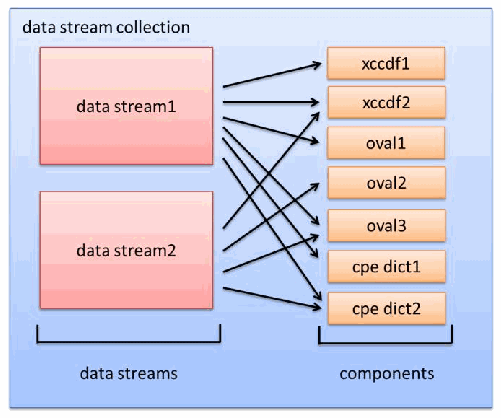
SCAPデータストリーム・コレクションの構成図。2つのデータストリームから、XCCDF、OVAL、CPE辞書の複数コンポーネントへ向かう参照関係を矢印で示す。
Figure 1 - SCAP Data Stream Collection
図1：SCAPデータストリームコレクション
未レビュー訳In Figure 1, data stream1 points to xccdf1, xccdf2, oval1, oval3, cpe dict1, and cpe dict2. data stream2 points to xccdf2, oval2, oval3, and cpe dict2. Each data stream is a collection of links to the components that they reference; each logical link encapsulates the information required to allow the content consumer to connect the components together within the data stream. Content authors MAY place components in any order. For example, some authors might choose to place dictionary components first to help optimize data stream parsing. Links serve two purposes: to indicate which component is being referred to, and to provide a map to associate references within a component to other links within the data stream. The latter allows a data stream to define context for each component’s references within the bounds of the data stream’s own set of links. Figure 2 provides a conceptual example that illustrates how a data stream is constructed.
図1では、data stream1はxccdf1、xccdf2、oval1、oval3、cpe dict1、cpe dict2を指し、data stream2はxccdf2、oval2、oval3、cpe dict2を指す。各データストリームは参照するコンポーネントへのリンクの集合であり、各論理リンクには、コンテンツ利用者がデータストリーム内のコンポーネント同士を接続するための情報が含まれる。コンテンツ作成者はコンポーネントを任意の順序で配置してもよい MAY。例えば、一部の作成者はデータストリームの解析を最適化するため、辞書コンポーネントを先頭に置くことがある。リンクには2つの役割がある。参照先のコンポーネントを示すこと、およびコンポーネント内の参照をデータストリーム内の他のリンクに対応付けるマップを提供することである。後者により、データストリームは、自身が持つリンクの範囲内で各コンポーネントの参照先に文脈を与えられる。図2に、データストリームの構築を概念的に示す。
未レビュー訳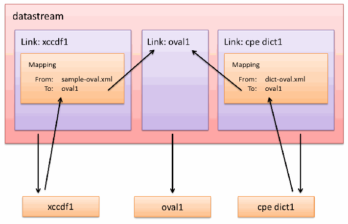
SCAPデータストリームの参照関係を示す図。データストリーム内のXCCDF、OVAL、CPE辞書リンクと、ファイル名からコンポーネントへのマッピングを示す。
Figure 2 - SCAP Data Stream
図2：SCAPデータストリーム
未レビュー訳In Figure 2, the data stream links to three components. The OVAL component does not reference out to external content, so there are no mappings captured for it. The XCCDF and CPE Dictionary components reference other components (e.g., oval1). When referencing components within the example data stream, a mapping indicates that when xccdf1 references “sample-oval.xml”, the content is found through the link to the component identified as “oval1”. Similarly, when the cpe dict1 component references “dict-oval.xml” the component reference is resolved through the link to the component identified as “oval1”. This approach associates SCAP components within a data stream at the SCAP logical level, allowing components to be reused across data streams within the same data stream collection. This reuse can be accomplished irrespective of how references are made within a given component. The following is a stripped down example of the source data stream. The details are covered later in this specification.
図2では、データストリームは3つのコンポーネントにリンクしている。OVALコンポーネントは外部コンテンツを参照しないため、対応付けは記録されない。XCCDFコンポーネントとCPE辞書コンポーネントは、他のコンポーネント（例：oval1）を参照する。例示するデータストリーム内でコンポーネントを参照する際、対応付けにより、xccdf1が「sample-oval.xml」を参照した場合、そのコンテンツが「oval1」と識別されたコンポーネントへのリンクを通じて見つかることを示す。同様に、cpe dict1コンポーネントが「dict-oval.xml」を参照すると、そのコンポーネント参照は「oval1」と識別されたコンポーネントへのリンクを通じて解決される。この方法は、SCAPの論理レベルでデータストリーム内のSCAPコンポーネントを関連付け、同一コレクション内の複数のデータストリームでコンポーネントを再利用できるようにする。この再利用は、個々のコンポーネント内でどのように参照が行われるかにかかわらず実現できる。以下に、ソースデータストリームの簡略例を示す。詳細は本仕様の後続箇所で扱う。
未レビュー訳原本PDFの抜粋画像
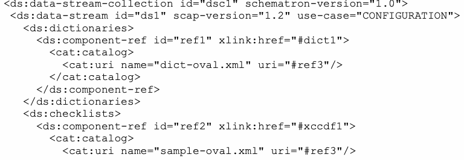
原本PDFの抜粋画像
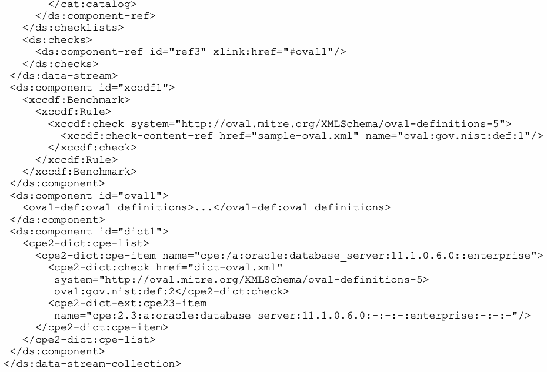
The design of the SCAP source data stream is important for the following reasons:
SCAPソースデータストリームの設計が重要である理由は次のとおりである：
未レビュー訳1.Individual components may be developed outside of an SCAP data stream where the binding to other components is not necessarily known at the time the component is created.
1.個々のコンポーネントは、作成時点では他のコンポーネントとの結び付きが判明していない場合があり、SCAPデータストリームの外部で開発できる。
未レビュー訳2.The SCAP source data stream creates a binding between different components that were not necessarily designed to reference each other. For example, XCCDF was not designed to reference a particular checking system; it can reference OVAL, OCIL, and other checking systems.
2.SCAPソースデータストリームは、相互参照するよう設計されているとは限らない異なるコンポーネント間に結び付きを作る。例えば、XCCDFは特定の検査システムを参照するようには設計されていないが、OVAL、OCILなどの検査システムを参照できる。
未レビュー訳3.The logical link mapping in the data stream places a layer of capability within the data stream to control the dereferencing of URIs within components, creating a complete solution related to bundling components.
3.データストリーム内の論理リンクマッピングは、コンポーネント内のURI参照を解決するための機能層をデータストリームに設け、コンポーネントのバンドルに関する包括的な解決策を実現する。
未レビュー訳4.The SCAP source data stream format will be useful in future communication models such as web services, transport protocols, tasking mechanisms, etc.
4.SCAPソースデータストリーム形式は、ウェブサービス、転送プロトコル、タスク管理機構など、将来の通信モデルで有用となる。
未レビュー訳5.The SCAP source data stream format supports more comprehensive validation of component content, including interrelationships between components.
5.SCAPソースデータストリーム形式は、コンポーネント間の相互関係を含め、コンポーネントコンテンツのより包括的な検証を支援する。
未レビュー訳3.1.1 Source Data Stream Data Model
3.1.1 ソースデータストリームのデータモデル
未レビュー訳The tables in this section formalize the SCAP source data stream data model. The tables contain requirements and MUST be interpreted as follows:
本節の表は、SCAPソースデータストリームのデータモデルを形式化する。各表には要件が含まれ、次のように解釈しなければならない MUST：
未レビュー訳 The “Element Name” field indicates the name for the XML element being described. Each element name has a namespace prefix indicating the namespace to which the element belongs. See Table 1 for a mapping of namespace prefixes to namespaces.
「要素名」フィールドは、説明対象のXML要素名を示す。各要素名には、その要素が属する名前空間を示す名前空間接頭辞が付く。名前空間接頭辞と名前空間の対応については表1を参照。
未レビュー訳 The “Element Definition” field indicates the prose description of the element. The definition field MAY contain key words as indicated in [RFC2119].
「要素の定義」フィールドは、要素の説明文を示す。定義フィールドには、[RFC2119]で示されるキーワードが含まれる MAY。
未レビュー訳• The “Properties” field is broken into four subfields:
o The “Name” column indicates the name of a property that MAY, SHOULD, or MUST be included in the described element, in accordance with the cardinality indicated in the “Count” column and any [RFC2119] requirement words in the “Property Definition” column.
o The “Type” column indicates the REQUIRED data type for the value of the property. There are two categories of types: literal and element. A literal type indicates the type of literal as defined in [XMLS]. An element type references the name of another element that ultimately defines that property.
o The “Count” column indicates the cardinality of the property within the element. The property MUST be included in the element in accordance with the cardinality. If a range is given, and “n” is the upper bound of the range, then the upper limit SHALL be unbounded.
o The “Property Definition” column defines the property in the context of the element. The definition MAY contain key words as indicated in [RFC2119].
• 「プロパティ」フィールドは4つのサブフィールドに分かれる。
o 「名前」列は、「件数」列に示す多重度、および「プロパティ定義」列にある[RFC2119]の要件語に従って、記述対象の要素に含めてもよい（MAY）、含めるべきである（SHOULD）、または含めなければならない（MUST）プロパティの名前を示す。
o 「型」列は、プロパティの値に必須の（REQUIRED）データ型を示す。型にはリテラルと要素の2種類がある。リテラル型は、[XMLS]で定義されるリテラルの型を示す。要素型は、最終的にそのプロパティを定義する別の要素の名前を参照する。
o 「件数」列は、要素内におけるプロパティの多重度を示す。プロパティは、その多重度に従って要素に含めなければならない（MUST）。範囲が与えられ、その範囲の上限が「n」である場合、上限は無制限としなければならない（SHALL）。
o 「プロパティ定義」列は、要素の文脈におけるプロパティを定義する。この定義には、[RFC2119]に示されるキーワードを含めてもよい（MAY）。
Table 2 - ds:data-stream-collection
表2：ds:data-stream-collection
未レビュー訳| Element Name: ds:data-stream-collection | |
| Element Definition | The top-level element for a SCAP data stream collection. It contains the data streams and components that comprise this data stream collection, along with any data stream signatures. |
| Properties: | |
| Name / Type | Count / Property Definition |
| id / literal – ID | 1 / The identifier for the data stream collection. This identifier MUST be globally unique (see Section 3.1.3). |
| schematron- version / literal – token | 1 / The version of the SCAP Requirements Schematron rule set to which the data stream collection conforms. |
| data-stream / element – ds:data-stream | 1-n / An element that represents a single data stream (see Table 3). |
| component / element – ds:component | 1-n / An element that represents content expressed using an SCAP component specification (see Table 10). |
| extended- component / element – ds:extended- component | 0-n / An element that holds non-SCAP components to enable extension (see Table 11). |
| Signature / element – dsig:Signature | 0-n / An XML digital signature element. Sections 3.10 and 4.8 define the requirements for this element. |
原本PDFの抜粋画像
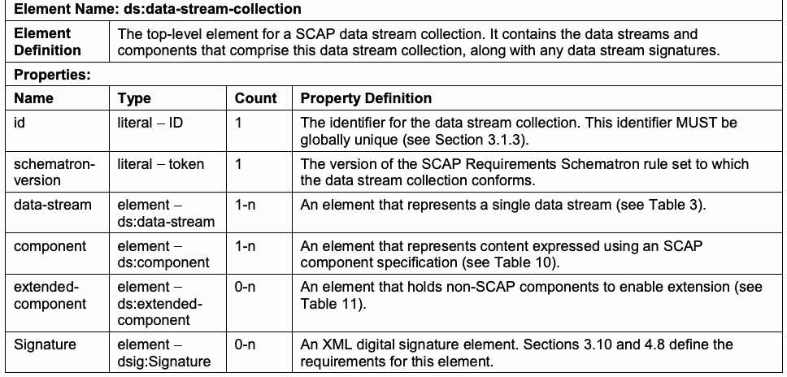
| 要素名：ds:data-stream-collection | |
| 要素の定義 | SCAPデータストリームコレクションの最上位要素。コレクションを構成するデータストリームとコンポーネント、およびデータストリーム署名を含む。 |
| プロパティ： | |
| 名前／型 | 件数／プロパティ定義 |
| id / literal – ID | 1 / データストリームコレクションの識別子。この識別子はグローバルに一意でなければならない MUST（第3.1.3節を参照）。 |
| schematron- version / literal – token | 1 / データストリームコレクションが準拠するSCAP要件Schematronルールセットのバージョン。 |
| data-stream / element – ds:data-stream | 1-n / 1つのデータストリームを表す要素（表3を参照）。 |
| component / element – ds:component | 1-n / SCAPコンポーネント仕様で表現されたコンテンツを保持する要素（表10を参照）。 |
| extended- component / element – ds:extended- component | 0-n / 拡張を可能にするため、SCAP以外のコンポーネントを保持する要素（表11を参照）。 |
| Signature / element – dsig:Signature | 0-n / XMLデジタル署名要素。第3.10節および第4.8節でこの要素の要件を定める。 |
Table 3 - ds:data-stream
表3 - ds:data-stream
未レビュー訳| Element Name: ds:data-stream | |
| Element Definition | A data stream. This element contains the links to all of the components that comprise this data stream. |
| Properties | |
| Name / Type | Count / Property Definition |
| id / literal – ID | 1 / The identifier for the data stream. This identifier MUST be globally unique (see Section 3.1.3). |
原本PDFの抜粋画像
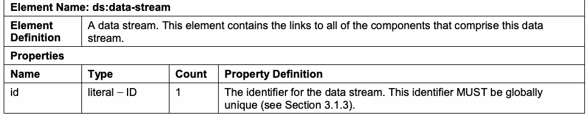
| 要素名：ds:data-stream | |
| 要素の定義 | データストリーム。この要素には、このデータストリームを構成するすべてのコンポーネントへのリンクが含まれる。 |
| プロパティ | |
| 名前／型 | 個数／プロパティの定義 |
| id / literal – ID | 1 / データストリームの識別子。この識別子はグローバルに一意でなければならない（MUST）（第3.1.3節を参照）。 |
| use-case | literal – token | 1 | The use case represented by the data stream. The value MUST be one of the following: CONFIGURATION, VULNERABILITY, INVENTORY, or OTHER. The value selected MUST indicate which type of content is being represented as defined in Section 5. The value “OTHER” is for content that does not correspond to a specific use case; this content MUST be valid according to the requirements defined in Sections 3 and 4. |
| scap-version | literal – token | 1 | The targeted SCAP version. The value MUST be 1.2, 1.1, or 1.0. The value MUST indicate which version of SCAP the content is conformant with. 1.2 MUST be specified to be conformant with this version of SCAP. |
| timestamp | literal – dateTime | 0-1 | The date and time when this data stream was created. |
| dictionaries | element – ds:dictionaries | 0-1 | Links to dictionary components (see Table 4). |
| checklists | element – ds:checklists | 0-1 | Links to checklist components (see Table 5). |
| checks | element – ds:checks | 1 | Links to check components (see Table 6). |
| extended- components | element – ds:extended- components | 0-1 | Links to non-standard components (see Table 7). See Section 4.2 for information on processing this element. |
原本PDFの抜粋画像
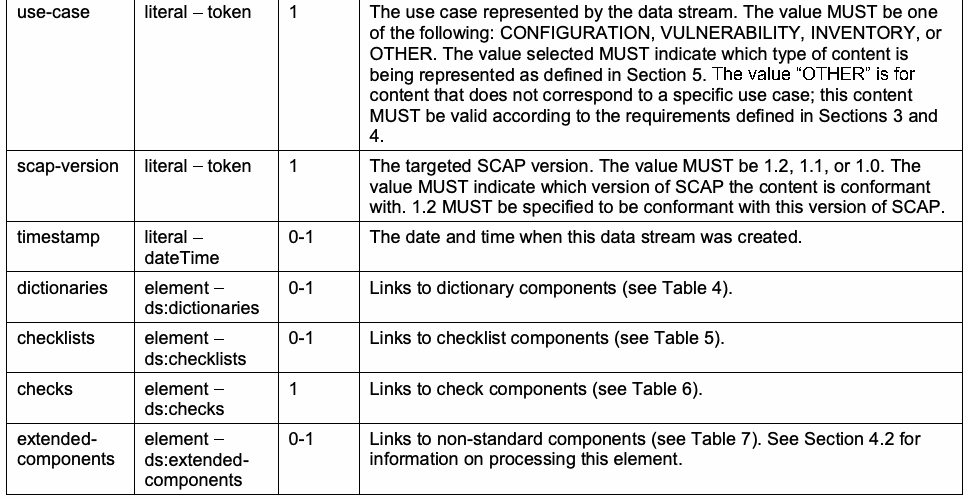
| use-case | literal – token | 1 | データストリームが表すユースケース。値はCONFIGURATION、VULNERABILITY、INVENTORY、OTHERのいずれかでなければならない（MUST）。選択値は第5節で定義される表現対象コンテンツの種類を示さなければならない（MUST）。「OTHER」は特定ユースケースに該当しないコンテンツを表す。このコンテンツは第3節および第4節の要件に従って有効でなければならない（MUST）。 |
| scap-version | literal – token | 1 | 対象とするSCAPバージョン。値は1.2、1.1、または1.0でなければならない（MUST）。この値はコンテンツが適合するSCAPのバージョンを示さなければならない（MUST）。本バージョンのSCAPに適合するには、1.2を指定しなければならない（MUST）。 |
| timestamp | literal – dateTime | 0-1 | このデータストリームが作成された日付と時刻。 |
| dictionaries | element – ds:dictionaries | 0-1 | 辞書コンポーネントへのリンク（表4を参照）。 |
| checklists | element – ds:checklists | 0-1 | チェックリストコンポーネントへのリンク（表5を参照）。 |
| checks | element – ds:checks | 1 | チェックコンポーネントへのリンク（表6を参照）。 |
| extended- components | element – ds:extended- components | 0-1 | 非標準コンポーネントへのリンク（表7を参照）。この要素の処理については第4.2節を参照。 |
Table 4 - ds:dictionaries
表4 - ds:dictionaries
未レビュー訳| Element Name: ds:dictionaries | |
| Element Definition | A container element that holds references to one or more dictionary components. |
| Properties | |
| Name / Type | Count / Property Definition |
| component-ref / element – component-ref | 1-n / MUST contain a reference to a dictionary component (a component containing CPE dictionary content). |
原本PDFの抜粋画像
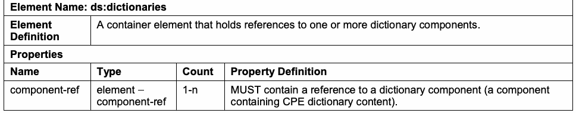
| 要素名：ds:dictionaries | |
| 要素の定義 | 一つ以上の辞書コンポーネントへの参照を保持するコンテナー要素。 |
| プロパティ | |
| 名前／型 | 個数／プロパティの定義 |
| component-ref / element – component-ref | 1-n / 辞書コンポーネント（CPE辞書コンテンツを含むコンポーネント）への参照を含まなければならない（MUST）。 |
Table 5 - ds:checklists
表5 - ds:checklists
未レビュー訳| Element Name: ds:checklists | |
| Element Definition | A container element that holds references to one or more checklists. |
| Properties | |
| Name / Type | Count / Property Definition |
| component-ref / element – component-ref | 1-n / MUST contain a reference to a checklist component (a component containing an <xccdf:Benchmark> or an <xccdf:Tailoring> element). |
原本PDFの抜粋画像
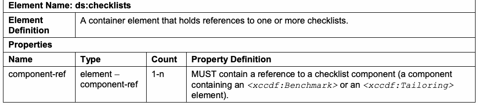
| 要素名：ds:checklists | |
| 要素の定義 | 一つ以上のチェックリストへの参照を保持するコンテナー要素。 |
| プロパティ | |
| 名前／型 | 個数／プロパティの定義 |
| component-ref / element – component-ref | 1-n / チェックリストコンポーネント（<xccdf:Benchmark>または<xccdf:Tailoring>要素を含むコンポーネント）への参照を含まなければならない（MUST）。 |
Table 6 - ds:checks
表6 - ds:checks
未レビュー訳| Element Name: ds:checks | |
| Element Definition | A container element that holds references to one or more check components. |
| Properties | |
| Name / Type | Count / Property Definition |
| component-ref / element – component-ref | 1-n / MUST contain a reference to a check component (a component containing check content). See Section 3.2.4.2 for information on SCAP check system support and requirements. |
原本PDFの抜粋画像
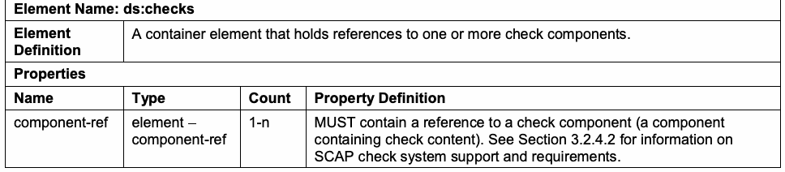
| 要素名：ds:checks | |
| 要素の定義 | 一つ以上のチェックコンポーネントへの参照を保持するコンテナー要素。 |
| プロパティ | |
| 名前／型 | 個数／プロパティの定義 |
| component-ref / element – component-ref | 1-n / チェックコンポーネント（チェックコンテンツを含むコンポーネント）への参照を含まなければならない（MUST）。SCAPチェックシステムのサポートおよび要件については第3.2.4.2節を参照。 |
Table 7 - ds:extended-components
表7 - ds:extended-components
未レビュー訳| Element Name: ds:extended-components | |
| Element Definition | A container element that holds references to one or more extended components for the SCAP data stream, including non-standard components. |
| Properties | |
| Name / Type | Count / Property Definition |
| component-ref / element – component-ref | 1-n / MUST contain a reference to a non-standard component (a <ds:extended-component> element ). See Table 11. |
原本PDFの抜粋画像
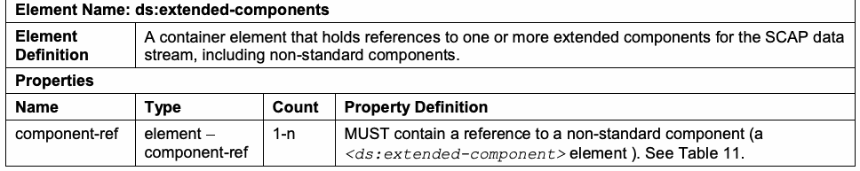
| 要素名：ds:extended-components | |
| 要素の定義 | 非標準コンポーネントを含む、SCAPデータストリームの一つ以上の拡張コンポーネントへの参照を保持するコンテナー要素。 |
| プロパティ | |
| 名前／型 | 個数／プロパティの定義 |
| component-ref / element – component-ref | 1-n / 非標準コンポーネント（<ds:extended-component>要素）への参照を含まなければならない（MUST）。表11を参照。 |
Table 8 - ds:component-ref
表8 - ds:component-ref
未レビュー訳| Element Name: ds:component-ref | |
| Element Definition | An element that encapsulates the information necessary to link to a component within the data stream collection, or to external content, which gives context to the reference. This is a simple XLink [XLINK]. |
| Properties | |
| Name / Type / Count | Property Definition |
| id / literal - ID / 1 | The identifier for the reference. This identifier MUST be globally unique (see Section 3.1.3). |
| type / literal – xlink:type / 0-1 | The type of XLink represented. The <ds:component-ref> is constrained to a simple XLink, so the value of this field MUST be ‘simple’ if specified. |
| href / literal – xlink:href / 1 | A URI to the target component (either local to the data stream collection or remote). When referencing a local component, the URI MUST be in the form ‘#’ + componentId (e.g. “#component1”). When referencing external content, the URI MUST dereference to an XML stream representing the content of the target component. |
| catalog / element – cat:catalog / 0-1 | An XML Catalog that defines the mapping between external URI links in the component being referenced by this <ds:component-ref>, and where those URIs should map to within the context of this data stream. See Table 9. |
原本PDFの抜粋画像
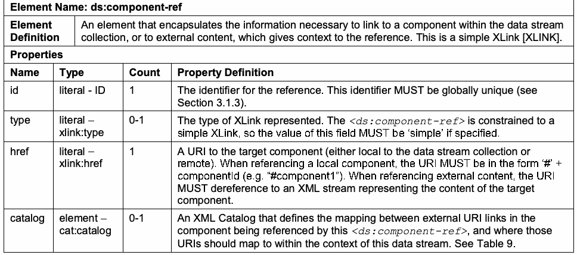
| 要素名：ds:component-ref | |
| 要素の定義 | データストリームコレクション内のコンポーネント、または参照に文脈を与える外部コンテンツへリンクするために必要な情報を格納する要素。これは単純なXLink [XLINK]である。 |
| プロパティ | |
| 名前／型／個数 | プロパティの定義 |
| id / literal - ID / 1 | 参照の識別子。この識別子はグローバルに一意でなければならない（MUST）（第3.1.3節を参照）。 |
| type / literal – xlink:type / 0-1 | 表されるXLinkの型。<ds:component-ref>は単純なXLinkに制限されるため、このフィールドを指定する場合、値は‘simple’でなければならない（MUST）。 |
| href / literal – xlink:href / 1 | 対象コンポーネント（データストリームコレクション内またはリモート）へのURI。ローカルコンポーネントを参照する場合、URIは‘#’ + componentIdの形式でなければならない（MUST）（例：“#component1”）。外部コンテンツを参照する場合、URIをたどると、対象コンポーネントのコンテンツを表すXMLストリームが得られなければならない（MUST）。 |
| catalog / element – cat:catalog / 0-1 | 参照対象の<ds:component-ref>が参照するコンポーネント内の外部URIリンクと、このデータストリームのコンテキスト内でそれらのURIを対応付ける先とのマッピングを定義するXMLカタログ。表9を参照。 |
Table 9 – cat:catalog
表9 – cat:catalog
未レビュー訳| Element Name: cat:catalog | |
| Element Definition | A catalog element defined by the OASIS XML Catalog specification [XMLCAT]. Within an SCAP source data stream this element SHALL contain one or more <cat:uri> and/or <cat:rewriteURI> elements, and it SHALL NOT contain any other elements or attributes. Refer to Section 7 of [XMLCAT] for information on determining which catalog entry to apply. |
| Properties | |
| Name / Type | Count / Property Definition |
| uri / element – cat:uri | 0-n (at least 1 of this or rewriteURI MUST be provided) / Maps a reference in the enclosing <ds:component-ref> element's component to some other <ds:component-ref> element that MUST be used to resolve the reference.11 A <cat:uri> element SHALL have a @name attribute and a @uri attribute. The @name attribute is the source of the mapping, and the @uri attribute is the destination of the mapping. The @name attribute MUST contain a URI that matches a “referenced URI” in the data stream component referenced by the <ds:component-ref> that holds this element. The “referenced URI” is a URI entry defined within the model used within the data stream component. The @uri attribute MUST be populated with the value “#” + @id of a <ds:component-ref>. When resolving the URI in the @name attribute, the <ds:component-ref> pointed to by the @uri attribute SHALL be used. |
| rewriteURI / element – cat:rewriteURI | 0-n (at least 1 of this or uri MUST be provided) / SHALL have a @uriStartString attribute and a @rewritePrefix attribute specified. The @uriStartString attribute SHALL be populated with the start of a URI of an external link specified within the component referenced by this element’s enclosing <ds:component- ref> element that is to be replaced. The @rewritePrefix attribute SHALL be populated with a string that will replace the matched @uriStartString value. The resulting URI MUST be used to resolve the link. See [XMLCAT] for more details. |
原本PDFの抜粋画像
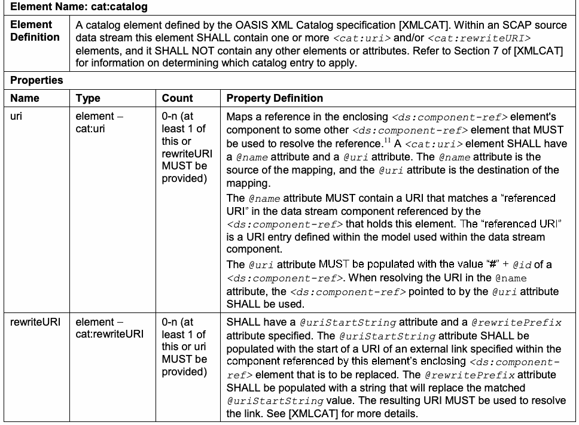
| 要素名：cat:catalog | |
| 要素の定義 | OASIS XML Catalog仕様[XMLCAT]で定義されるカタログ要素。SCAPソースデータストリーム内では、この要素は1つ以上の<cat:uri>および／または<cat:rewriteURI>要素を含まなければならず（SHALL）、その他の要素または属性を含んではならない（SHALL NOT）。適用するカタログエントリの決定方法については[XMLCAT]の第7節を参照。 |
| プロパティ | |
| 名前／型 | 個数／プロパティの定義 |
| uri / element – cat:uri | 0-n（uriまたはrewriteURIの少なくとも1つを指定しなければならない（MUST）） / 包含する<ds:component-ref>要素のコンポーネント内の参照を、その参照の解決に使用しなければならない（MUST）別の<ds:component-ref>要素へ対応付ける。11 <cat:uri>要素は@name属性と@uri属性を持たなければならない（SHALL）。@name属性はマッピング元、@uri属性はマッピング先である。@name属性には、この要素を保持する<ds:component-ref>が参照するデータストリームコンポーネント内の「参照URI」に一致するURIを含めなければならない（MUST）。「参照URI」とは、データストリームコンポーネント内で使用されるモデルで定義されたURIエントリである。@uri属性には、「#」+ <ds:component-ref>の@idの値を設定しなければならない（MUST）。@name属性のURIを解決する際は、@uri属性が指す<ds:component-ref>を使用しなければならない（SHALL）。 |
| rewriteURI / element – cat:rewriteURI | 0-n（rewriteURIまたはuriの少なくとも1つを指定しなければならない（MUST）） / @uriStartString属性と@rewritePrefix属性を指定しなければならない（SHALL）。@uriStartString属性には、この要素を含む<ds:component- ref>要素が参照するコンポーネント内で指定された外部リンクURIの先頭部分で、置換対象となる文字列を設定しなければならない（SHALL）。@rewritePrefix属性には、一致した@uriStartStringの値を置き換える文字列を設定しなければならない（SHALL）。結果のURIをリンク解決に使用しなければならない（MUST）。詳細は[XMLCAT]を参照。 |
Table 10 – ds:component
表10 – ds:component
未レビュー訳| Element Name: ds:component | |
| Element Definition | A container for a single component. The types of components are defined in Section 3.1.2. |
| Properties | |
| Name / Type | Count / Property Definition |
| id / literal – ID | 1 / The identifier for the component. This identifier MUST be globally unique (see Section 3.1.3). |
| timestamp / literal – dateTime | 1 / Indicates when the <ds:component> was created or last updated. |
| Benchmark / element – xccdf:Benchmark | 1, and only 1, of these elements / XCCDF benchmark |
| oval_definitions / element – oval-def:oval_definitions | OVAL Definitions |
| ocil / element – ocil:ocil | OCIL questionnaire |
| cpe-list / element – cpe2-dict:cpe-list | CPE dictionary |
| Tailoring / element – xccdf:Tailoring | XCCDF tailoring |
原本PDFの抜粋画像
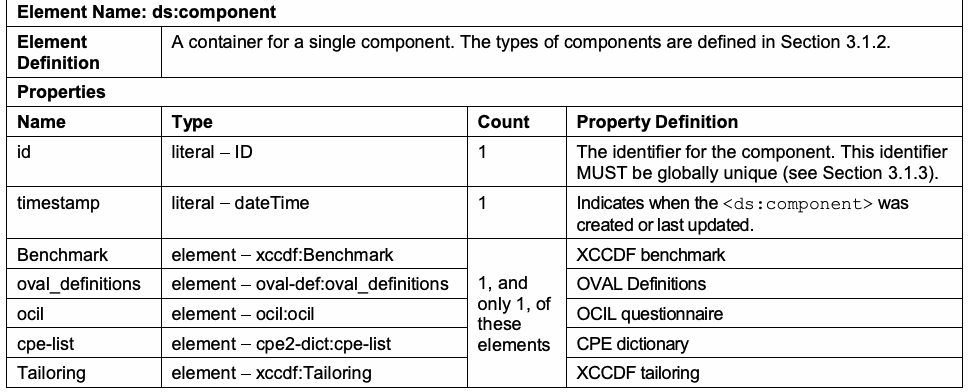
| 要素名：ds:component | |
| 要素の定義 | 単一のコンポーネントを格納するコンテナー。コンポーネントの種類は第3.1.2節で定義される。 |
| プロパティ | |
| 名前／型 | 個数／プロパティの定義 |
| id / literal – ID | 1 / コンポーネントの識別子。この識別子はグローバルに一意でなければならない（MUST）（第3.1.3節を参照）。 |
| timestamp / literal – dateTime | 1 / <ds:component>が作成または最終更新された日時を示す。 |
| Benchmark / element – xccdf:Benchmark | 1、かつ該当要素は1個のみ / XCCDFベンチマーク |
| oval_definitions / element – oval-def:oval_definitions | OVAL定義 |
| ocil / element – ocil:ocil | OCIL質問票 |
| cpe-list / element – cpe2-dict:cpe-list | CPE辞書 |
| Tailoring / element – xccdf:Tailoring | XCCDFテーラリング |
Table 11 – ds:extended-component
表11 – ds:extended-component
未レビュー訳| Element Name: ds:extended-component | |
| Element Definition | This element holds content that does not fit within the other defined component types described in Table 10. Authors SHOULD use this element as an extension point to capture content that is not captured in a regular component. The content of this element SHALL be an XML element in a namespace other than the SCAP source data stream namespace. Linking through a <ds:extended- component> element SHALL make the data stream non-conformant with SCAP. |
| Properties | |
| Name / Type | Count / Property Definition |
| id / literal – ID | 1 / The identifier for the component. This identifier MUST be globally unique (see Section 3.1.3). |
| timestamp / literal – dateTime | 1 / Indicates when the <ds:extended-component> was created or last updated. |
原本PDFの抜粋画像
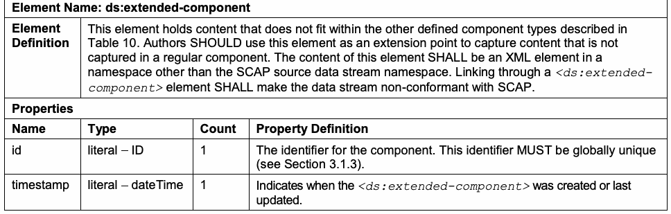
| 要素名：ds:extended-component | |
| 要素の定義 | 他に定義されたコンポーネント型（表10を参照）に収まらないコンテンツを保持する要素。作成者は、通常のコンポーネントに収まらないコンテンツを取り込む拡張ポイントとして、この要素を使用すべきである（SHOULD）。この要素のコンテンツは、SCAPソースデータストリームの名前空間以外の名前空間に属するXML要素でなければならない（SHALL）。<ds:extended-component>要素を介してリンクすると、そのデータストリームはSCAP不適合となる（SHALL）。 |
| プロパティ | |
| 名前／型 | 個数／プロパティの定義 |
| id / literal – ID | 1 / コンポーネントの識別子。この識別子はグローバルに一意でなければならない（MUST）（第3.1.3節を参照）。 |
| timestamp / literal – dateTime | 1 / <ds:extended-component>が作成または最終更新された日時を示す。 |
3.1.2 Source Data Stream Collection Validation
3.1.2 ソースデータストリームコレクションの検証
The SCAP source data stream collection SHALL validate against the XML schema representation for the source data stream, as well as all Schematron rules embedded within that schema. The SCAP components referenced by each <ds:component> and <ds:extended-component> element SHALL validate against the corresponding component schema and its embedded Schematron rules. All of the SCAP-related schemas are referenced at http://scap.nist.gov/revision/1.2/#schema. See Table 22 in Appendix C for a list of SCAP component schema and Schematron file locations. Each SCAP source data stream component SHALL use one of the elements specified in Table 12 as its document element. Each SCAP source data stream component SHOULD NOT use any constructs that are deprecated in its associated specification. While Section 4.1 requires that products support deprecated constructs, these constructs should be avoided to minimize the impact to content use when these constructs are removed from future revisions of the associated specifications. Any component in a data stream collection SHALL be referenced not more than once by any data stream in that collection. Table 12 - SCAP Source Data Stream Component Document Elements
SCAPソースデータストリームコレクションは、ソースデータストリームのXMLスキーマ表現と、そのスキーマに埋め込まれたすべてのSchematron規則に対して検証されなければならない（SHALL）。各<ds:component>および<ds:extended-component>が参照するSCAPコンポーネントは、対応するコンポーネントスキーマと埋め込みSchematron規則に対して検証されなければならない（SHALL）。SCAP関連スキーマは http://scap.nist.gov/revision/1.2/#schema に掲載されている。スキーマとSchematronファイルの場所一覧は付録Cの表22を参照。各SCAPソースデータストリームコンポーネントは、表12のいずれかの要素を文書要素として使用しなければならない（SHALL）。各コンポーネントは、関連仕様で非推奨の構文を使用すべきではない（SHOULD NOT）。第4.1節では製品に非推奨構文のサポートを要求しているが、将来の仕様改訂で削除された場合のコンテンツ利用への影響を最小限にするため、これらの構文は避けるべきである。データストリームコレクション内のコンポーネントは、同コレクションのいずれかのデータストリームから複数回参照されてはならない（SHALL）。表12 - SCAPソースデータストリームコンポーネントの文書要素
未レビュー訳| Component | Document Element |
| XCCDF Benchmark | <xccdf:Benchmark> |
| XCCDF Tailoring | <xccdf:Tailoring> |
| OVAL | <oval-def:oval_definitions> |
| OCIL | <ocil:ocil> |
| CPE Dictionary | <cpe2-dict:cpe-list> |
原本PDFの抜粋画像
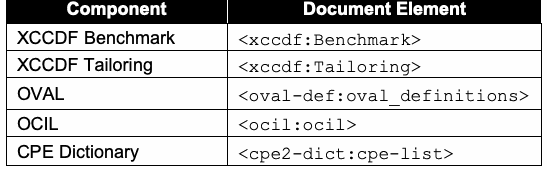
| コンポーネント | 文書要素 |
| XCCDFベンチマーク | <xccdf:Benchmark> |
| XCCDFテーラリング | <xccdf:Tailoring> |
| OVAL | <oval-def:oval_definitions> |
| OCIL | <ocil:ocil> |
| CPE辞書 | <cpe2-dict:cpe-list> |
NIST provides an SCAP Content Validation Tool, which is designed to help validate the correctness of SCAP data streams.12 The SCAP Content Validation Tool is a command-line tool that will check that SCAP source and result content is well-formed, cross references are valid, and required values are appropriately set. Errors and warnings are returned in both XML and Hypertext Markup Language (HTML) formats. Validation of each SCAP source data stream component SHALL be done in accordance with the portions of this document that define requirements for the associated component specification. If applicable, each component MUST validate against its associated Schematron stylesheet. For the SCAP source data stream collection, it MUST validate against the version of the SCAP Schematron rules as specified on the <ds:data-stream-collection> element’s @schematron-version attribute, and it SHOULD also validate against the latest Schematron rules. NIST provides and maintains a set of
NISTは、SCAPデータストリームの正しさを検証するSCAPコンテンツ検証ツールを提供している。12 このコマンドラインツールは、SCAPソースおよび結果コンテンツの整形式性、相互参照の有効性、必須値の適切な設定を確認する。エラーと警告はXML形式およびハイパーテキストマークアップ言語（HTML）形式で返される。各ソースコンポーネントの検証は、関連仕様の要件を定義する本書の該当箇所に従って行わなければならない（SHALL）。該当する場合、各コンポーネントは関連Schematronスタイルシートに対して検証されなければならない（MUST）。コレクションは、<ds:data-stream-collection>要素の@schematron-version属性に指定されたバージョンのSCAP Schematron規則に対して検証されなければならず（MUST）、最新の規則に対しても検証すべきである（SHOULD）。NISTは次の一式を提供・維持している。
未レビュー訳Schematron rules to check well-formed SCAP content. The Schematron files for the SCAP specification and its applicable component specifications are located at http://scap.nist.gov/revision/1.2/#schematron. Source content SHOULD pass all Schematron assertions in the Schematron rule files. When creating source content, failed assertions with a “warning” flag MAY be disregarded if the assertion discovers an issue in the content that is justifiable and expected based on the needs of the content author. When executing source content, all failed assertions with a “warning” flag MUST be disregarded. The Schematron rule sets are interpretations of the specifications, and the implementations of their rules are subject to change. Whenever a change is made to a Schematron file, the SCAP errata document will be updated and the new Schematron file will be posted. The latest Schematron file SHOULD be used in place of any earlier versions. If the latest file is unavailable, the version specified on the <ds:data-stream-collection> element’s @schematron-version attribute SHALL be used instead. Also, for the component specifications, the Schematron file on the SCAP website SHALL be used in place of any corresponding Schematron file available elsewhere. For example, a particular specification may have an official Schematron file available on a different website. In most cases, the copy on the SCAP website will be the same, but if issues in a Schematron file are discovered, the SCAP website may address these before the individual specification’s maintainers do.
SCAPコンテンツの整形式性を確認するSchematron規則。SCAP仕様と該当するコンポーネント仕様のファイルは http://scap.nist.gov/revision/1.2/#schematron にある。ソースコンテンツはすべてのSchematronアサーションに合格すべきである（SHOULD）。作成時には、コンテンツ作成者の必要性に照らして妥当で想定される問題を検出した場合、「warning」フラグ付き失敗は無視してもよい（MAY）。実行時は「warning」フラグ付きの失敗をすべて無視しなければならない（MUST）。Schematron規則セットは仕様の解釈であり、規則の実装は変更されることがある。ファイル変更時にはSCAP正誤表が更新され、新ファイルが公開される。以前の版ではなく最新のSchematronファイルを使用すべきである（SHOULD）。最新ファイルが利用できない場合、<ds:data-stream-collection>の@schematron-version属性で指定された版を使用しなければならない（SHALL）。コンポーネント仕様では、他所の対応ファイルではなくSCAPウェブサイト上のSchematronファイルを使用しなければならない（SHALL）。例として、公式ファイルが別サイトにある仕様もある。通常、SCAPサイトのコピーも同じだが、問題が見つかった場合、個々の仕様保守担当者が対応する前にSCAPサイト側で修正されることがある。
未レビュー訳3.1.3 Globally Unique Identifiers
3.1.3 グローバルに一意な識別子
未レビュー訳The elements listed in Table 13 have special conventions around the format of their identifiers (@id attribute). Authors MUST follow these conventions because they preserve the global uniqueness of the resulting identifiers. In Table 13, namespace contains a valid reverse-DNS style string (limited to letters, numbers, periods, and the hyphen character) that is associated with the content author. Examples include "com.acme.finance" and "gov.tla". These namespace strings MAY have any number of parts, and SCAP content consumers processing them SHALL treat them as case-insensitive (e.g., com.ABC is considered identical to com.abc). The name in the format conventions MUST be an NCName-compliant string
表13に示す要素の識別子（@id属性）には形式規約がある。生成識別子のグローバルな一意性を保つため、作成者は規約に従わなければならない（MUST）。表13において、namespaceはコンテンツ作成者に関連付けられた有効な逆引きDNS形式の文字列（英字、数字、ピリオド、ハイフンに限定）である。例は"com.acme.finance"および"gov.tla"。namespace文字列は任意の数の部分を持ってよく（MAY）、SCAPコンテンツ利用者は処理時に大文字小文字を区別せずに扱わなければならない（SHALL）（例：com.ABCとcom.abcは同一と見なす）。形式規約におけるnameはNCName準拠の文字列でなければならない（MUST）。
未レビュー訳[XMLS].
[XMLS]。
未レビュー訳Table 13 – Element Identifier Format Convention
表13 – 要素識別子の形式規約
未レビュー訳| Element | Identifier Format Convention |
| <ds:data-stream-collection> | scap_namespace_collection_name |
| <ds:data-stream> | scap_namespace_datastream_name |
| <ds:component-ref> | scap_namespace_cref_name |
| <ds:component> | scap_namespace_comp_name |
| <ds:extended-component> | scap_namespace_ecomp_name |
原本PDFの抜粋画像
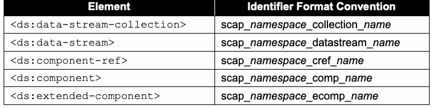
| 要素 | 識別子の形式規約 |
| <ds:data-stream-collection> | scap_namespace_collection_name |
| <ds:data-stream> | scap_namespace_datastream_name |
| <ds:component-ref> | scap_namespace_cref_name |
| <ds:component> | scap_namespace_comp_name |
| <ds:extended-component> | scap_namespace_ecomp_name |
3.2 Extensible Configuration Checklist Description Format (XCCDF)
3.2 拡張可能な構成チェックリスト記述形式（XCCDF）
This section lists requirements and recommendations for using the Extensible Configuration Checklist Description Format (XCCDF) to express an XCCDF benchmark or tailoring component of an SCAP source data stream (see Table 12). They are organized by the following categories: general, <xccdf:Benchmark>, <xccdf:Profile>, <xccdf:Rule>, <xccdf:Value>, and <xccdf:Group>.
この節では、SCAPソースデータストリームのXCCDFベンチマークまたはテーラリングコンポーネントを表現するためにXCCDFを使用する際の要件と推奨事項を示す（表12を参照）。全般、<xccdf:Benchmark>、<xccdf:Profile>、<xccdf:Rule>、<xccdf:Value>、<xccdf:Group>に分類する。
3.2.1 General
3.2.1 全般
The @xml:base attribute SHALL NOT be allowed in XCCDF content. This attribute is not compatible with the SCAP data stream model. Descriptive information within XCCDF MAY be used by SCAP products to assist in the selection of the appropriate SCAP data stream, ensure that the most recent or correct version of an XCCDF document is used, and provide additional information about the document. The following requirements and conventions apply to the <xccdf:Benchmark>, <xccdf:Profile>, <xccdf:Value>, <xccdf:Group>, and <xccdf:Rule> elements:
XCCDFコンテンツで@xml:base属性を許可してはならない（SHALL NOT）。この属性はSCAPデータストリームモデルと互換性がない。XCCDF内の記述情報は、適切なSCAPデータストリームの選択、XCCDF文書の最新または正しい版の使用確認、文書に関する追加情報の提供のため、SCAP製品で使用してもよい（MAY）。<xccdf:Benchmark>、<xccdf:Profile>、<xccdf:Value>、<xccdf:Group>、<xccdf:Rule>要素には次の要件と規約が適用される。
未レビュー訳1.One or more instances of the <xccdf:title> element SHALL be provided. Each instance MUST contain a text value that briefly indicates the purpose of the containing element.
1.<xccdf:title>要素を一つ以上指定しなければならない（SHALL）。各要素には、包含要素の目的を簡潔に示すテキスト値を含めなければならない（MUST）。
2.One or more instances of the <xccdf:description> element SHALL be provided. Each instance MUST contain a text value that describes the purpose of the containing element.
2.<xccdf:description>要素を一つ以上指定しなければならない（SHALL）。各要素には、包含要素の目的を説明するテキスト値を含めなければならない（MUST）。
XInclude elements SHALL NOT be included in XCCDF content [XINCLUDE]. All remaining OPTIONAL elements in the XCCDF schema MAY be included at the author’s discretion unless otherwise noted in this document.
XCCDFコンテンツにXInclude要素を含めてはならない（SHALL NOT）[XINCLUDE]。残りの OPTIONAL 要素は、本書で別途注記されていない限り、作成者の裁量で含めてもよい（MAY）。
未レビュー訳3.2.2 The <xccdf:Benchmark> Element
3.2.2 <xccdf:Benchmark>要素
The following requirements and recommendations apply to the <xccdf:Benchmark> element:
<xccdf:Benchmark>要素には次の要件および推奨事項が適用される。
1.The <xccdf:version> element and the @id attribute SHALL be used together to uniquely identify all revisions of a benchmark. a. Multiple revisions of a single benchmark SHOULD have the same @id attribute value and different <xccdf:version> element values, so that someone who reviews the revisions can readily identify them as multiple versions of a single benchmark. b. Multiple revisions of a single benchmark SHOULD have <xccdf:version> element values that indicate the revision sequence, so that the history of changes from the original benchmark can be determined. c. The @time attribute of the <xccdf:version> element SHOULD be used for a timestamp of when the benchmark was defined.
1.<xccdf:version>要素と@id属性は、ベンチマークのすべての改訂版を一意に識別するために併用しなければならない（SHALL）。a. 単一ベンチマークの複数の改訂版では、同じ@id属性値と異なる<xccdf:version>要素値を使用すべきである（SHOULD）。これにより、改訂版を確認する人が、単一ベンチマークの複数バージョンとして容易に識別できる。b. 単一ベンチマークの複数の改訂版では、元のベンチマークからの変更履歴を特定できるよう、改訂順序を示す<xccdf:version>要素値を使用すべきである（SHOULD）。c. ベンチマークが定義された日時のタイムスタンプには、<xccdf:version>要素の@time属性を使用すべきである（SHOULD）。
2.The @update attribute of the <xccdf:version> element SHOULD be used for a URI that specifies where updates to the benchmark can be obtained.
2.<xccdf:version>要素の@update属性は、ベンチマークの更新を入手できる場所を示すURIに使用すべきである（SHOULD）。
3.The <xccdf:Benchmark> element SHALL have an @xml:lang attribute.
3.<xccdf:Benchmark>要素は@xml:lang属性を持たなければならない（SHALL）。
4.The @style attribute SHOULD have the value “SCAP_1.2”.
4.@style属性の値は“SCAP_1.2”とすべきである（SHOULD）。
5.The <xccdf:status> element SHALL indicate the current status of the benchmark document. The associated text value SHALL be “draft” for documents released in public draft state and “accepted” for documents that have been officially released by an organization. The @date attribute SHALL be populated with the date of the status change. Additional <xccdf:status> elements MAY be included to indicate historic status transitions.
5.<xccdf:status>要素は、ベンチマーク文書の現在の状態を示さなければならない（SHALL）。関連するテキスト値は、公開ドラフト状態で公開された文書では“draft”、組織が正式に公開した文書では“accepted”でなければならない（SHALL）。@date属性には状態変更の日付を設定しなければならない（SHALL）。過去の状態遷移を示すために、追加の<xccdf:status>要素を含めてもよい（MAY）。
6.The <xccdf:metadata> element SHALL be provided and SHALL, at minimum, contain the Dublin Core [DCES] terms from Table 14. If provided, additional Dublin Core terms SHALL follow the required terms within the element sequence.
6.<xccdf:metadata>要素を指定しなければならず（SHALL）、最低限、表14のDublin Core [DCES]用語を含めなければならない（SHALL）。追加のDublin Core用語を指定する場合、要素の並びでは必須用語の後に続けなければならない（SHALL）。
未レビュー訳Table 14 - Use of Dublin Core Terms in <xccdf:metadata>
表14 - <xccdf:metadata>におけるDublin Core用語の使用
未レビュー訳| Dublin Core Term | Description of Use |
| <dc:creator> | The person, organization, and/or service that created the benchmark |
| <dc:publisher> | The person, organization, and/or service that published the benchmark |
| <dc:contributor> | The person, organization, and/or service that contributed to the creation of the benchmark |
| <dc:source> | An identifier that indicates the organizational context of the benchmark’s @id attribute. An organizationally specific URI SHOULD be used. |
原本PDFの抜粋画像
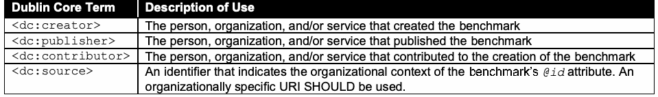
| Dublin Core用語 | 用途の説明 |
| <dc:creator> | ベンチマークを作成した個人、組織、および／またはサービス |
| <dc:publisher> | ベンチマークを公開した個人、組織、および／またはサービス |
| <dc:contributor> | ベンチマークの作成に貢献した個人、組織、および／またはサービス |
| <dc:source> | ベンチマークの@id属性に関する組織的文脈を示す識別子。組織固有のURIを使用すべきである（SHOULD）。 |
3.2.3 The <xccdf:Profile> Element
3.2.3 <xccdf:Profile>要素
As stated in the XCCDF specification, the use of an <xccdf:Profile> element is not required. SCAP content commonly includes <xccdf:Profile> elements, so people tend to assume that they are required, but they are optional. Use of the <xccdf:set-complex-value> element within the <xccdf:Profile> element SHALL NOT be allowed.
XCCDF仕様に記載されているとおり、<xccdf:Profile>要素の使用は必須ではない。SCAPコンテンツには<xccdf:Profile>要素が含まれることが多いため、必須だと思われがちだが、これは任意である。<xccdf:Profile>要素内で<xccdf:set-complex-value>要素を使用してはならない（SHALL NOT）。
未レビュー訳3.2.4 The <xccdf:Rule> Element
3.2.4 <xccdf:Rule>要素
The following requirements and recommendations apply to the <xccdf:Rule> element. The topics they address are <xccdf:ident> elements, <xccdf:check> elements, patches up-to-date rules, and CVSS and CCSS scores.
<xccdf:Rule>要素には、次の要件および推奨事項が適用される。扱う項目は、<xccdf:ident>要素、<xccdf:check>要素、パッチ最新化ルール、CVSSおよびCCSSスコアである。
3.2.4.1 The <xccdf:ident> Element
3.2.4.1 <xccdf:ident>要素
Each <xccdf:Rule> element SHALL include an <xccdf:ident> element containing a CVE, CCE, or CPE identifier reference if an appropriate identifier exists. The meaning of the identifier MUST be consistent with the recommendation implemented by the <xccdf:Rule> element. If the rule references an OVAL Definition, then <xccdf:ident> element content SHALL match the corresponding CVE, CCE, or CPE identifier found in the associated OVAL Definition(s) if an appropriate identifier exists and if that OVAL Definition is the only input to the rule’s final result. When referencing a CVE, CCE, or CPE identifier, an <xccdf:Rule> element MUST have a purpose consistent with one of the rows in Table 15. Based on the purpose of the <xccdf:Rule> element, the <xccdf:Rule> SHALL define its <xccdf:ident> element’s @system attribute using the corresponding value from Table 15. Also, if the <xccdf:Rule> element references an OVAL Definition, it SHALL reference an OVAL Definition of the specified class. Table 15 – <xccdf:Rule> and <xccdf:ident> Element Values
各<xccdf:Rule>要素は、適切な識別子が存在する場合、CVE、CCE、またはCPE識別子参照を含む<xccdf:ident>要素を含まなければならない（SHALL）。識別子の意味は、<xccdf:Rule>要素が実装する推奨事項と整合しなければならない（MUST）。ルールがOVAL定義を参照する場合、適切な識別子が存在し、かつ当該OVAL定義がルールの最終結果に対する唯一の入力であるなら、<xccdf:ident>要素の内容は、関連するOVAL定義内の対応するCVE、CCE、またはCPE識別子と一致しなければならない（SHALL）。CVE、CCE、またはCPE識別子を参照する場合、<xccdf:Rule>要素の目的は表15のいずれかの行と整合しなければならない（MUST）。<xccdf:Rule>要素の目的に基づいて、<xccdf:Rule>は表15の対応する値を用いて<xccdf:ident>要素の@system属性を定義しなければならない（SHALL）。また、<xccdf:Rule>要素がOVAL定義を参照する場合、指定されたクラスのOVAL定義を参照しなければならない（SHALL）。表15 – <xccdf:Rule>および<xccdf:ident>要素の値
未レビュー訳| Purpose of the <xccdf:Rule> | OVAL Definition | Identifier | Value for <xccdf:ident> |
| Class | Type | @system attribute | |
| Check compliance with a configuration setting | compliance | CCE | http://cce.mitre.org |
| Perform a software inventory check | inventory | CPE | http://cpe.mitre.org |
| Check for a software flaw vulnerability | vulnerability | CVE | http://cve.mitre.org |
原本PDFの抜粋画像
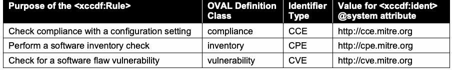
| <xccdf:Rule>の目的 | OVAL定義クラス | 識別子の種類 | <xccdf:ident>の@system属性値 |
| 構成設定への適合性を確認 | compliance | CCE | http://cce.mitre.org |
| ソフトウェアインベントリを確認 | inventory | CPE | http://cpe.mitre.org |
| ソフトウェアの欠陥に起因する脆弱性を確認 | vulnerability | CVE | http://cve.mitre.org |
Here is a partial example of a rule intended to check compliance with a configuration setting: <xccdf:Rule id="xccdf_gov.nist.fdcc.xp_value_AuditAccountLogonEvents"> … <xccdf:ident system="http://cce.mitre.org">CCE-3867-0</xccdf:ident> … </xccdf:Rule>
構成設定への適合性を確認することを意図したルールの部分例を示す：<xccdf:Rule id="xccdf_gov.nist.fdcc.xp_value_AuditAccountLogonEvents"> … <xccdf:ident system="http://cce.mitre.org">CCE-3867-0</xccdf:ident> … </xccdf:Rule>
未レビュー訳See Section 4.5.1 for information on the meaning of a “pass/fail” rule result relating to each of the identifier types in Table 15. All rules that contain CCE, CPE, or CVE entries in their <xccdf:ident> elements MUST obey these meanings. As a result, such <xccdf:ident> elements MUST only be included either if the recommendation is identical to these associated meanings or if they have a @con:negate attribute (as described in Section 4.5.1) set to comply with the intended meaning (by default, @con:negate is set to false). In SCAP, an <xccdf:ident> element is not simply a reference to related material – it is a declaration of exact alignment with the described meanings. An <xccdf:ident> element referencing a CVE, CCE, or CPE identifier SHALL be ordered before other <xccdf:ident> elements referencing non-SCAP identifiers. Identifiers from previous revisions of CCE or CPE MAY also be specified following the SCAP identifiers.
第4.5.1節を参照し、表15の各識別子の種類に対応する「pass/fail」ルール結果の意味を確認する。<xccdf:ident>要素にCCE、CPE、またはCVEエントリを含むルールはすべて、これらの意味に従わなければならない（MUST）。そのため、そのような<xccdf:ident>要素は、推奨事項が対応する意味と同一である場合、または意図する意味に適合するよう@con:negate属性（第4.5.1節で説明）を設定する場合に限り、含めなければならない（MUST）。デフォルトでは@con:negateはfalseに設定される。SCAPにおける<xccdf:ident>要素は関連資料への単なる参照ではなく、記述された意味との厳密な整合性を宣言するものである。CVE、CCE、またはCPE識別子を参照する<xccdf:ident>要素は、SCAP以外の識別子を参照する他の<xccdf:ident>要素より前に配置しなければならない（SHALL）。以前の版のCCEまたはCPE識別子も、SCAP識別子の後に指定してもよい（MAY）。
未レビュー訳3.2.4.2 The <xccdf:check> Element
3.2.4.2 <xccdf:check>要素
The following requirements and recommendations apply to the <xccdf:check> element:
<xccdf:check>要素には、次の要件および推奨事項が適用される：
1.The <xccdf:check-content> element SHALL NOT be used to embed check content directly into XCCDF content.
1.<xccdf:check-content>要素を使用して、チェックコンテンツをXCCDFコンテンツに直接埋め込んではならない（SHALL NOT）。
2.At least one <xccdf:check-content-ref> element MUST be provided for each <xccdf:check> element.
2.各<xccdf:check>要素には、少なくとも一つの<xccdf:check-content-ref>要素を指定しなければならない（MUST）。
未レビュー訳3.When evaluating an <xccdf:check-content-ref> element within an <xccdf:check> element, its @href attribute either MUST contain a “#” + @id of a <ds:component-ref> element or MUST be resolved in the context of the XML Catalog specified as part of the <ds:component-ref> element that is referencing this benchmark. In either case, the @href attribute MUST ultimately resolve to a <ds:component-ref> element in the data stream referencing the benchmark containing this <xccdf:check-content-ref> element. See Section 3.1.1 for additional information on <ds:component-ref> resolution.
3.<xccdf:check>要素内の<xccdf:check-content-ref>要素を評価する際、その@href属性には、“#” + <ds:component-ref>要素の@idを含めるか（MUST）、またはこのベンチマークを参照する<ds:component-ref>要素に関連付けられたXML Catalogのコンテキスト内で解決しなければならない（MUST）。いずれの場合も、@href属性は最終的に、この<xccdf:check-content-ref>要素を含むベンチマークを参照するデータストリーム内の<ds:component-ref>要素に解決されなければならない（MUST）。<ds:component-ref>の解決に関する追加情報は第3.1.1節を参照。
This version of SCAP supports the OVAL and OCIL check systems. Use of these check systems SHALL be restricted as follows:
このバージョンのSCAPはOVALおよびOCILチェックシステムをサポートする。これらのチェックシステムの使用は、次のとおり制限されなければならない（SHALL）：
未レビュー訳1.OVAL check system i. Use of the OVAL check system SHALL be indicated by setting the <xccdf:check> element’s @system attribute to “http://oval.mitre.org/XMLSchema/oval-definitions-5 ”. ii. The @href attribute in the <xccdf:check-content-ref> element MUST reference an OVAL source data stream component using the <ds:component-ref> approach defined above. iii. Use of the @name attribute in the <xccdf:check-content-ref> element is OPTIONAL. If present, it MUST reference an OVAL Definition in the designated OVAL source data stream component, otherwise see Section 4.5.2 for information on use of the @multi-check attribute.
1.OVALチェックシステム i. OVALチェックシステムの使用は、<xccdf:check>要素の@system属性を“http://oval.mitre.org/XMLSchema/oval-definitions-5 ”に設定して示さなければならない（SHALL）。 ii. <xccdf:check-content-ref>要素の@href属性は、上記で定義した<ds:component-ref>方式を用いてOVALソースデータストリームコンポーネントを参照しなければならない（MUST）。 iii. <xccdf:check-content-ref>要素の@name属性の使用は OPTIONAL である。指定する場合、指定されたOVALソースデータストリームコンポーネント内のOVAL定義を参照しなければならない（MUST）。そうでない場合は、@multi-check属性の使用について第4.5.2節を参照。
未レビュー訳2.OCIL check system i. OCIL questionnaires SHOULD NOT be used if OVAL can perform the same check correctly. ii. Use of the OCIL check system SHALL be indicated by setting the <xccdf:check> element’s @system attribute to “http://scap.nist.gov/schema/ocil/2”. iii. The @href attribute in the <xccdf:check-content-ref> element MUST reference an OCIL source data stream component using the <ds:component-ref> approach defined above.
2.OCILチェックシステム i. OVALで同じチェックを正しく実行できる場合、OCIL質問票を使用すべきではない（SHOULD NOT）。 ii. OCILチェックシステムの使用は、<xccdf:check>要素の@system属性を“http://scap.nist.gov/schema/ocil/2”に設定して示さなければならない（SHALL）。 iii. <xccdf:check-content-ref>要素の@href属性は、上記で定義した<ds:component-ref>方式を用いてOCILソースデータストリームコンポーネントを参照しなければならない（MUST）。
未レビュー訳iv. Use of the @name attribute in the <xccdf:check-content-ref> element is OPTIONAL. If present, it MUST reference an OCIL questionnaire in the designated OCIL source data stream component, otherwise see Section 4.5.2 for information on use of the @multi-check attribute. v. Follow the additional requirements in Appendix B of NIST Interagency Report (IR) 7692, Specifications for the Open Checklist Interactive Language (OCIL) Version 2.0 [OCIL]. If a check system that is not supported by SCAP is used in XCCDF content, this content SHALL NOT be
iv. <xccdf:check-content-ref>要素の@name属性の使用は OPTIONAL である。指定する場合、指定されたOCILソースデータストリームコンポーネント内のOCIL質問票を参照しなければならない（MUST）。そうでない場合は、@multi-check属性の使用について第4.5.2節を参照。v. NIST Interagency Report（IR）7692「Open Checklist Interactive Language（OCIL）バージョン2.0の仕様」[OCIL]の付録Bにある追加要件に従う。SCAPでサポートされていないチェックシステムをXCCDFコンテンツで使用する場合、そのコンテンツはSCAPに関して整形式であってはならない（SHALL NOT）
未レビュー訳considered well-formed with regards to SCAP.
SCAPに関して整形式であると見なされる。
未レビュー訳3.2.4.3 Use of a Patches Up-To-Date Rule
3.2.4.3 パッチ最新化ルールの使用
An OVAL source data stream component MAY be used to represent a series of checks to verify that patches have been installed. Historically, an XCCDF convention has been used to identify such a reference. An XCCDF benchmark MAY include a patches up-to-date rule that MUST reference an OVAL source data stream component. When implementing a patches up-to-date XCCDF rule, the following approach SHALL be used:
パッチがインストール済みであることを確認する一連のチェックを表すために、OVALソースデータストリームコンポーネントを使用してもよい（MAY）。このような参照の識別には、従来XCCDFの規約が使用されてきた。XCCDFベンチマークには、OVALソースデータストリームコンポーネントを参照しなければならない（MUST）パッチ最新化ルールを含めてもよい（MAY）。パッチ最新化XCCDFルールを実装する際は、次の方法を使用しなければならない（SHALL）：
1.The source data stream MUST include the OVAL source data stream component referenced by the patches up-to-date rule, which contains one or more OVAL patch class definitions.
1.ソースデータストリームには、パッチ最新化ルールが参照するOVALソースデータストリームコンポーネントを含めなければならない（MUST）。そのコンポーネントには、一つ以上のOVALパッチクラス定義が含まれる。
未レビュー訳2.The <xccdf:Rule> element that references an OVAL source data stream component SHALL have the @id attribute value of “xccdf_NAMESPACE_rule_security_patches_up_to_date”, where NAMESPACE is the reverse DNS format namespace associated with the content maintainer.
2.OVALソースデータストリームコンポーネントを参照する<xccdf:Rule>要素は、“xccdf_NAMESPACE_rule_security_patches_up_to_date”という@id属性値を持たなければならない（SHALL）。ここでNAMESPACEはコンテンツ保守担当者に関連付けられた逆引きDNS形式のnamespaceである。
未レビュー訳3.Each <xccdf:check-content-ref> element SHALL omit the @name attribute.
3.各<xccdf:check-content-ref>要素では@name属性を省略しなければならない（SHALL）。
4.The @multi-check attribute of the <xccdf:check> element SHOULD be set to “true”. This causes a separate <xccdf:rule-result> to be generated for each OVAL Definition. See Section 4.5.2 for more information.
4.<xccdf:check>要素の@multi-check属性は“true”に設定すべきである（SHOULD）。これにより、OVAL定義ごとに個別の<xccdf:rule-result>が生成される。詳細は第4.5.2節を参照。
Here is a patches up-to-date rule example:
パッチ最新化ルールの例：
<xccdf:Rule id="xccdf_gov.nist.fdcc.xp_rule_security_patches_up_to_date" selected="true"> <xccdf:title>Security Patches Up-To-Date</xccdf:title> <xccdf:description>Keep systems up to current patch levels </xccdf:description> <xccdf:check system="http://oval.mitre.org/XMLSchema/oval-definitions-5"
<xccdf:Rule id="xccdf_gov.nist.fdcc.xp_rule_security_patches_up_to_date" selected="true"> <xccdf:title>最新のセキュリティパッチ</xccdf:title> <xccdf:description>システムを最新のパッチレベルに維持する </xccdf:description> <xccdf:check system="http://oval.mitre.org/XMLSchema/oval-definitions-5"
未レビュー訳multi-check="true"> <xccdf:check-content-ref href="scap-win2000-patches.xml"/> </xccdf:check>
multi-check="true"> <xccdf:check-content-ref href="scap-win2000-patches.xml"/> </xccdf:check>
未レビュー訳</xccdf:Rule>
</xccdf:Rule>
未レビュー訳3.2.4.4 CVSS and CCSS Scores
3.2.4.4 CVSSおよびCCSSスコア
SCAP 1.0 required the inclusion of static CVSS scores in XCCDF vulnerability-related rules. However, CVSS base scores sometimes change over time, such as when more information is available about a particular vulnerability, and CVSS temporal and environmental scores are intended to change to reflect current threats, security controls, and other factors. During scoring, current CVSS scores acquired dynamically, such as from a data feed, SHOULD be used in place of the @weight attribute within XCCDF vulnerability-related rules. Section 3.8 contains additional requirements for CVSS usage. CCSS scores are more stable than CVSS scores, but they still may change over time. Accordingly, during scoring, current CCSS scores acquired dynamically, such as from a data feed, MAY be used in place of the @weight attribute within XCCDF configuration setting-related rules. Section 3.9 contains additional requirements for CCSS usage.
SCAP 1.0では、XCCDFの脆弱性関連ルールに静的CVSSスコアを含めることが必須だった。しかし、特定の脆弱性についてより多くの情報が得られた場合など、CVSS基本スコアは時間の経過とともに変わることがある。また、CVSS時間的スコアおよび環境スコアは、現在の脅威、セキュリティ制御、その他の要因を反映するよう変化することを意図している。スコアリング時には、データフィードなどから動的に取得した最新のCVSSスコアを、XCCDF脆弱性関連ルール内の@weight属性の代わりに使用すべきである（SHOULD）。CVSSの使用に関する追加要件は第3.8節に記載されている。CCSSスコアはCVSSスコアより安定しているが、それでも時間の経過とともに変わることがある。したがってスコアリング時には、データフィードなどから動的に取得した最新のCCSSスコアを、XCCDF構成設定関連ルール内の@weight属性の代わりに使用してもよい（MAY）。CCSSの使用に関する追加要件は第3.9節に記載されている。
未レビュー訳3.2.5 The <xccdf:Value> Element
3.2.5 <xccdf:Value>要素
未レビュー訳Use of the <xccdf:source>, <xccdf:complex-value>, and <xccdf:complex-default> elements within the <xccdf:Value> element SHALL NOT be allowed. Within the <xccdf:choices> element of the <xccdf:Value> element, use of the <xccdf:complex-choice> element SHALL NOT be allowed.
<xccdf:Value>要素内で<xccdf:source>、<xccdf:complex-value>、<xccdf:complex-default>要素を使用してはならない（SHALL NOT）。<xccdf:Value>要素の<xccdf:choices>要素内で<xccdf:complex-choice>要素を使用してはならない（SHALL NOT）。
未レビュー訳One or more <xccdf:check-export> elements MAY be used to define the binding of <xccdf:Value> elements to OVAL variables. The format of the <xccdf:check-export> element is: <xccdf:check-export value-id="XCCDF_Value_id"
<xccdf:Value>要素とOVAL変数のバインディングを定義するために、一つ以上の<xccdf:check-export>要素を使用してもよい（MAY）。<xccdf:check-export>要素の形式は次のとおり：<xccdf:check-export value-id="XCCDF_Value_id"
未レビュー訳export-name="OVAL_External_Variable_id"/>
export-name="OVAL_External_Variable_id"/>
未レビュー訳The following <xccdf:check> element example demonstrates the use of this convention: <xccdf:check system="http://oval.mitre.org/XMLSchema/oval-definitions-5"> <xccdf:check-export value-id="xccdf_gov.nist.fdcc.xp_value_NoSlowLink"
この規約の使用例として、次の<xccdf:check>要素を示す：<xccdf:check system="http://oval.mitre.org/XMLSchema/oval-definitions-5"> <xccdf:check-export value-id="xccdf_gov.nist.fdcc.xp_value_NoSlowLink"
未レビュー訳export-name="oval:gov.nist.fdcc.xp:var:66711"/> <xccdf:check-export value-id="xccdf_gov.nist.fdcc.xp_value_NoBackgroundPolicy" export-name="oval:gov.nist.fdcc.xp:var:66712"/> <xccdf:check-export value-id="xccdf_gov.nist.fdcc.xp_value_NoGPOListChanges" export-name="oval:gov.nist.fdcc.xp:var:66713"/> <xccdf:check-content-ref href="fdcc-winxp-oval.xml" name="oval:gov.nist.fdcc.xp:def:6671"/> </xccdf:check>
export-name="oval:gov.nist.fdcc.xp:var:66711"/> <xccdf:check-export value-id="xccdf_gov.nist.fdcc.xp_value_NoBackgroundPolicy" export-name="oval:gov.nist.fdcc.xp:var:66712"/> <xccdf:check-export value-id="xccdf_gov.nist.fdcc.xp_value_NoGPOListChanges" export-name="oval:gov.nist.fdcc.xp:var:66713"/> <xccdf:check-content-ref href="fdcc-winxp-oval.xml" name="oval:gov.nist.fdcc.xp:def:6671"/> </xccdf:check>
未レビュー訳The type and value binding of the specified <xccdf:Value> is constrained to match that lexical representation of the indicated OVAL Variable data type. Table 16 summarizes the constraints regarding data type usage. Additional information regarding OVAL and XCCDF data types can be found in the OVAL Common Schema documentation13 and the XCCDF specification [XCCDF]. Table 16 - XCCDF-OVAL Data Export Matching Constraints
指定された<xccdf:Value>の型と値のバインディングは、指定されたOVAL変数のデータ型の字句表現と一致するよう制約される。表16に、データ型の使用に関する制約をまとめる。OVALとXCCDFのデータ型に関する追加情報は、OVAL Common Schema文書13およびXCCDF仕様書[XCCDF]に記載されている。表16 - XCCDFとOVALのデータエクスポートの対応制約
未レビュー訳| OVAL Variable Data Type | Matching XCCDF Data Type |
| int | number |
| float | number |
| boolean | boolean |
| string, evr_string, version, ios_version, fileset_revision, binary | string |
原本PDFの抜粋画像
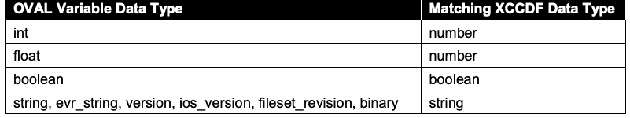
| OVAL変数のデータ型 | 対応するXCCDFデータ型 |
| int | number |
| float | number |
| boolean | boolean |
| string, evr_string, version, ios_version, fileset_revision, binary | string |
3.2.6 The <xccdf:Group> Element
3.2.6 <xccdf:Group>要素
未レビュー訳XCCDF group extension SHALL NOT be allowed.
XCCDFグループ拡張を許可してはならない（SHALL NOT）。
未レビュー訳3.3 Open Vulnerability and Assessment Language (OVAL)
3.3 Open Vulnerability and Assessment Language（OVAL）
未レビュー訳This section lists requirements and recommendations for using the Open Vulnerability and Assessment Language (OVAL) to express an OVAL component of an SCAP source data stream (see Table 12).
この節では、SCAPソースデータストリームのOVALコンポーネントを表現するためにOpen Vulnerability and Assessment Language（OVAL）を使用する際の要件および推奨事項を列挙する（表12を参照）。
未レビュー訳While the default version14 of OVAL used in SCAP 1.2 SHALL be OVAL version 5.10, SCAP content SHOULD utilize the earliest SCAP-supported version of OVAL that includes all required tests and is necessary to properly address the SCAP content’s purpose or use case. This approach, often referred to as the “least version principle”, allows SCAP content to remain viable over a longer period of time by enabling the broadest support within products, while reducing the content maintenance burden that would be required to maintain revisions of content for multiple specification versions. The minimum supported OVAL version for SCAP 1.2 SHALL be OVAL version 5.3. Because SCAP 1.2 supports the use of multiple OVAL source data stream components, an SCAP content creator could choose to divide the OVAL Definitions into multiple components based on the “least version” of each definition. For example, if some OVAL Definitions only required OVAL 5.3 while others required OVAL 5.10, then the content creator could create one OVAL source data stream component for the OVAL 5.3 definitions and another for the OVAL 5.10 definitions. SCAP 1.2 also supports multiple types of OVAL Definitions within a single OVAL source data stream component; for example, a benchmark could reference OVAL compliance and vulnerability definitions contained in a single data stream component. The version of any particular OVAL document instance SHALL be specified using the <oval:schema_version> content element of the <oval:generator> element, as in this example: <oval:generator> <oval:product_name>The OVAL Repository</oval:product_name> <oval:schema_version>5.10</oval:schema_version> </oval:generator>
OVALのデフォルトバージョン14は、SCAP 1.2で使用する場合OVALバージョン5.10でなければならない（SHALL）。一方、SCAPコンテンツでは、必要なすべてのテストを含み、コンテンツの目的またはユースケースを適切に扱うために必要となる、SCAPがサポートする最も古いOVALバージョンを使用すべきである（SHOULD）。「最小バージョン原則」と呼ばれることの多いこの方法により、製品で最も幅広くサポートでき、複数の仕様バージョンに対応するコンテンツ改訂版を維持する負担を減らしながら、SCAPコンテンツをより長期間有効に保てる。SCAP 1.2でサポートされるOVALの最小バージョンはOVAL 5.3でなければならない（SHALL）。SCAP 1.2は複数のOVALソースデータストリームコンポーネントの使用をサポートするため、SCAPコンテンツ作成者は、各定義の「最小バージョン」に基づいてOVAL定義を複数のコンポーネントに分けてもよい。たとえば、一部のOVAL定義がOVAL 5.3のみを必要とし、他がOVAL 5.10を必要とする場合、作成者はOVAL 5.3定義用とOVAL 5.10定義用に別々のOVALソースデータストリームコンポーネントを作成できる。SCAP 1.2では、単一のOVALソースデータストリームコンポーネント内に複数種類のOVAL定義を含めることもできる。たとえば、ベンチマークが、単一コンポーネント内に含まれるOVALコンプライアンス定義と脆弱性定義を参照してもよい。個々のOVAL文書インスタンスのバージョンは、次の例のように<oval:generator>要素の<oval:schema_version>コンテンツ要素を用いて指定しなければならない（SHALL）：<oval:generator> <oval:product_name>The OVAL Repository</oval:product_name> <oval:schema_version>5.10</oval:schema_version> </oval:generator>
未レビュー訳If an <oval-var:oval_variables> element is used to carry variable values between an XCCDF processor and an OVAL processor, the <oval:schema_version> of the <oval-var:oval_variables> element SHALL be the same as that of the <oval-def:oval_definitions> element whose external variables are bound by the <oval-var:oval_variables> element.
<oval-var:oval_variables>要素を使用してXCCDFプロセッサーとOVALプロセッサー間で変数値を受け渡す場合、<oval-var:oval_variables>要素の<oval:schema_version>は、同要素によって外部変数がバインドされる<oval-def:oval_definitions>要素のものと同じでなければならない（SHALL）。
未レビュー訳Required values for the @class attribute of an OVAL Definition are as follows:
OVAL定義の@class属性に必要な値は次のとおりである：
1.“compliance” if it represents a check for the system’s configuration complying with policy requirements (for example, having the required value for a specific configuration setting).
1.システム構成がポリシー要件に適合しているかどうかの確認（例：特定の構成設定に必須値が設定されているか）を表す場合は、“compliance”。
2.“vulnerability” if it represents a check for the presence of a particular software flaw vulnerability on a system.
2.システム上に特定のソフトウェア欠陥による脆弱性が存在するかどうかの確認を表す場合は、“vulnerability”。
未レビュー訳3.“patch” if it represents a check for whether a discrete patch needs to be installed on the system.
3.個別のパッチをシステムにインストールする必要があるかどうかの確認を表す場合は、“patch”。
4.“inventory” if it represents a check for the presence of a product of interest on the system.
4.システム上に対象製品が存在するかどうかの確認を表す場合は、“inventory”。
The following requirements apply to particular classes of OVAL Definitions:
特定のクラスのOVAL定義には、次の要件が適用される：
1.For compliance class definitions:
1.コンプライアンスクラス定義：
未レビュー訳a. If an OVAL compliance class definition maps to one or more CCE identifiers, the definition SHOULD include <oval-def:reference> elements that reference those identifiers using the following format: <oval-def:reference source="http://cce.mitre.org" ref_id="CCE_identifier"/>
a. OVALコンプライアンスクラス定義が一つ以上のCCE識別子に対応する場合、その定義には次の形式でそれらの識別子を参照する<oval-def:reference>要素を含めるべきである（SHOULD）：<oval-def:reference source="http://cce.mitre.org" ref_id="CCE_identifier"/>
未レビュー訳The source attribute SHALL be defined using either “http://cce.mitre.org” (preferred method) or “CCE”. b. Definitions that are directly or indirectly extended SHALL be limited to inventory and compliance classes.
source属性は、“http://cce.mitre.org”（推奨方式）または“CCE”を用いて定義しなければならない（SHALL）。b. 直接または間接的に拡張された定義は、インベントリクラスおよびコンプライアンスクラスに限定されなければならない（SHALL）。
未レビュー訳2.For inventory class definitions:
2.インベントリクラス定義：
未レビュー訳a. If an OVAL inventory class definition maps to one or more CPE identifiers, the definition SHOULD include <oval-def:reference> elements that reference those identifiers using the following format:
a. OVALインベントリクラス定義が一つ以上のCPE識別子に対応する場合、その定義には次の形式で識別子を参照する<oval-def:reference>要素を含めるべきである（SHOULD）：
未レビュー訳<oval-def:reference source="http://cpe.mitre.org" ref_id="CPE_identifier"/>
<oval-def:reference source="http://cpe.mitre.org" ref_id="CPE_identifier"/>
未レビュー訳The source attribute SHALL be defined using either “http://cpe.mitre.org” (preferred method) or “CPE”. b. Definitions that are directly or indirectly extended SHALL be limited to the inventory class.
source属性は、“http://cpe.mitre.org”（推奨方式）または“CPE”を用いて定義しなければならない（SHALL）。b. 直接または間接的に拡張された定義は、インベントリクラスに限定されなければならない（SHALL）。
未レビュー訳3.For patch class definitions:
3.パッチクラス定義：
未レビュー訳a. If an OVAL patch class definition is associated with a source specific identifier (for example, Knowledge Base numbers for Microsoft patches), these identifiers SHOULD be included in <oval-def:reference> elements contained by the definition. For example:
a. OVALパッチクラス定義がソース固有の識別子（例：MicrosoftパッチのKnowledge Base番号）に関連付けられている場合、それらの識別子を定義に含まれる<oval-def:reference>要素に含めるべきである（SHOULD）。例：
未レビュー訳<oval-def:reference source="www.microsoft.com/Patch" ref_id="KB912919"/>
<oval-def:reference source="www.microsoft.com/Patch" ref_id="KB912919"/>
未レビュー訳b. If an OVAL patch class definition maps to one or more CVE identifiers, the definition MAY include <oval-def:reference> elements that reference those identifiers using the following format:
b. OVALパッチクラス定義が一つ以上のCVE識別子に対応する場合、その定義には次の形式で識別子を参照する<oval-def:reference>要素を含めてもよい（MAY）：
未レビュー訳<oval-def:reference source="http://cve.mitre.org" ref_id="CVE_identifier"/>
<oval-def:reference source="http://cve.mitre.org" ref_id="CVE_identifier"/>
未レビュー訳This recommendation is weaker than its counterparts for the other class definition types because a CVE identifier is not an identifier for a patch; it is more of an association. For example, one patch could fix multiple vulnerabilities, so it would map to multiple CVE identifiers.
この推奨事項が他のクラス定義型に関する対応する推奨事項より弱いのは、CVE識別子がパッチの識別子ではなく、関連付けを示すものだからである。たとえば、一つのパッチが複数の脆弱性を修正する場合、複数のCVE識別子に対応する。
The source attribute SHALL be defined using either “http://cve.mitre.org” (preferred method) or “CVE”. c. Definitions that are directly or indirectly extended SHALL be limited to inventory and patch classes.
source属性は、“http://cve.mitre.org”（推奨方式）または“CVE”を用いて定義しなければならない（SHALL）。c. 直接または間接的に拡張された定義は、インベントリクラスおよびパッチクラスに限定されなければならない（SHALL）。
未レビュー訳4.For vulnerability class definitions:
4.脆弱性クラス定義：
未レビュー訳a. If an OVAL vulnerability class definition maps to one or more CVE identifiers, the definition SHOULD include <oval-def:reference> elements that reference those identifiers using the following format:
a. OVAL脆弱性クラス定義が一つ以上のCVE識別子に対応する場合、その定義には次の形式で識別子を参照する<oval-def:reference>要素を含めるべきである（SHOULD）：
未レビュー訳<oval-def:reference source="http://cve.mitre.org" ref_id="CVE_identifier"/>
<oval-def:reference source="http://cve.mitre.org" ref_id="CVE_identifier"/>
未レビュー訳The source attribute SHALL be defined using either “http://cve.mitre.org” (preferred method) or “CVE”. b. Definitions that are directly or indirectly extended SHALL be limited to inventory and vulnerability classes.
source属性は、“http://cve.mitre.org”（推奨方式）または“CVE”を用いて定義しなければならない（SHALL）。b. 直接または間接的に拡張された定義は、インベントリクラスおよび脆弱性クラスに限定されなければならない（SHALL）。
未レビュー訳3.4 Open Checklist Interactive Language (OCIL)
3.4 Open Checklist Interactive Language（OCIL）
This section lists recommendations for using the Open Checklist Interactive Language (OCIL) to express an OCIL component of an SCAP source data stream (see Table 12). OCIL content SHOULD be used for checking rules that cannot be fully automated with OVAL. For example, a particular software product may not have an application programming interface (API) that supports OVAL use. Another example is performing a check that requires user interaction, such as asking the user to look up information within a management console or to report a serial number affixed to a computing device. OCIL can also be used to collect a user’s own information, such as whether the user participated in a recent security training session. If an <ocil:questionnaire> element maps to one or more CCE, CVE, and/or CPE identifiers, it SHOULD include <ocil:reference> elements that reference those identifiers using the corresponding following format: <ocil:reference href="http://cce.mitre.org">CCE_identifier</ocil:reference>
この節では、SCAPソースデータストリームのOCILコンポーネントを表現するためにOpen Checklist Interactive Language（OCIL）を使用する際の推奨事項を列挙する（表12を参照）。OVALで完全に自動化できないルールのチェックにはOCILコンテンツを使用すべきである（SHOULD）。たとえば、特定のソフトウェア製品にOVALの使用をサポートするアプリケーションプログラミングインターフェース（API）がない場合がある。また、管理コンソール内の情報を調べるようユーザーに尋ねたり、コンピューター機器に貼付されたシリアル番号を報告するよう求めたりするなど、ユーザーとの対話が必要なチェックにも使用できる。OCILは、最近のセキュリティ研修に参加したかどうかなど、ユーザー自身に関する情報を収集するためにも使用できる。<ocil:questionnaire>要素が一つ以上のCCE、CVE、および／またはCPE識別子に対応する場合、対応する次の形式でそれらの識別子を参照する<ocil:reference>要素を含めるべきである（SHOULD）：<ocil:reference href="http://cce.mitre.org">CCE_identifier</ocil:reference>
未レビュー訳<ocil:reference href="http://cve.mitre.org">CVE_identifier</ocil:reference>
<ocil:reference href="http://cve.mitre.org">CVE_identifier</ocil:reference>
未レビュー訳<ocil:reference href="http://cpe.mitre.org">CPE_identifier</ocil:reference>
<ocil:reference href="http://cpe.mitre.org">CPE_identifier</ocil:reference>
未レビュー訳3.5 Common Platform Enumeration (CPE)
3.5 Common Platform Enumeration（CPE）
This section lists requirements and recommendations for using Common Platform Enumeration (CPE) to express a CPE component of an SCAP source data stream (see Table 12). The Official CPE Dictionary data feed15 MAY be used by SCAP components to reference CPE names. If use of the Official CPE Dictionary is impractical, a subset of the dictionary MAY be used instead. Creating the reduced official dictionary involves first identifying every CPE in <xccdf:platform> and <cpe2:fact-ref> elements contained within referenced <cpe2:platform-specification> elements in every benchmark in the data stream. Then these CPEs MUST be matched against every entry in the Official CPE Dictionary using the CPE name matching algorithm [CPE-M]. All CPEs matched in the official dictionary with a result of EQUAL or SUPERSET MUST be included in the reduced official dictionary. One or more third-party dictionaries MAY be included in a data stream as well. All such third-party dictionaries SHOULD follow the requirements of the CPE Dictionary specification [CPE-D]. If including an entire third-party dictionary is impractical, a subset of the dictionary MAY be used instead. The reduced dictionary MUST be created using the same procedure outlined for creating a subset of the official dictionary. In all cases, a dictionary component MAY be remote to the data stream collection. Each CPE name [CPE-N] in an <xccdf:platform> or <cpe2:fact-ref> element within an XCCDF document SHALL match at least one CPE entry in a dictionary referenced by the data stream. A match is considered an EQUAL or SUPERSET result when matching the CPE name to a dictionary entry, as defined in the CPE Name Matching specification [CPE-M]. Only non-deprecated names SHOULD be used. Checklist authors SHOULD ensure that each CPE name [CPE-N] they specify in an <xccdf:platform> or <cpe2:fact-ref> element within an XCCDF document has a check associated with its CPE name. If a corresponding check does not exist, then it will not be possible to fully detect the presence of the product and determine platform applicability. Because there may be a lag between the time that a new product is available and the Official CPE Dictionary is updated to include a CPE name for that product, third-party dictionaries would need to be used to compensate for the lag. [CPE-D] provides the defining structure of a CPE dictionary. A <cpe2_dict:cpe-item> element MAY contain one or more <cpe2-dict:check> elements that reference OVAL inventory class definitions using the following format: <cpe2_dict:check system="http://oval.mitre.org/XMLSchema/oval-definitions-5" [href="oval_URL"]>oval_inventory_definition_id</cpe2_dict:check>
この節では、SCAPソースデータストリームのCPEコンポーネントを表現するためにCommon Platform Enumeration（CPE）を使用する際の要件および推奨事項を列挙する（表12を参照）。Official CPE Dictionaryのデータフィード15は、SCAPコンポーネントからCPE名を参照するために使用してもよい（MAY）。Official CPE Dictionaryの使用が現実的でない場合は、辞書のサブセットを代わりに使用してもよい（MAY）。Official CPE Dictionaryの縮小版を作成するには、まず、データストリーム内の各ベンチマークに含まれる<xccdf:platform>要素、および参照される<cpe2:platform-specification>要素内の<cpe2:fact-ref>要素にあるすべてのCPEを特定する。次に、CPE名照合アルゴリズム[CPE-M]を用いて、これらのCPEをOfficial CPE Dictionary内のすべてのエントリと照合しなければならない（MUST）。公式辞書内で照合結果がEQUALまたはSUPERSETとなるCPEはすべて、縮小版の公式辞書に含めなければならない（MUST）。一つ以上のサードパーティ辞書もデータストリームに含めてもよい（MAY）。そのようなサードパーティ辞書はすべて、CPE Dictionary仕様[CPE-D]の要件に従うべきである（SHOULD）。サードパーティ辞書全体を含めることが現実的でない場合、辞書のサブセットを代わりに使用してもよい（MAY）。縮小辞書は、公式辞書のサブセット作成手順と同じ方法で作成しなければならない（MUST）。いずれの場合も、辞書コンポーネントはデータストリームコレクションの外部にあってもよい（MAY）。XCCDF文書内の<xccdf:platform>要素または<cpe2:fact-ref>要素にある各CPE名[CPE-N]は、データストリームが参照する辞書内の少なくとも一つのCPEエントリと一致しなければならない（SHALL）。CPE名と辞書エントリの照合結果がEQUALまたはSUPERSETである場合、一致と見なす（CPE Name Matching仕様[CPE-M]で定義）。非推奨ではない名前のみを使用すべきである（SHOULD）。チェックリストの作成者は、XCCDF文書内の<xccdf:platform>要素または<cpe2:fact-ref>要素で指定する各CPE名[CPE-N]に、対応するチェックがあることを確認すべきである（SHOULD）。対応するチェックが存在しない場合、製品の存在を完全に検出し、プラットフォームへの適用可否を判断できない。新製品の提供開始から、その製品のCPE名がOfficial CPE Dictionaryに登録されるまでには遅れが生じることがあるため、その遅れを補うにはサードパーティ辞書が必要となる。[CPE-D]はCPE辞書の定義構造を規定する。<cpe2_dict:cpe-item>要素は、次の形式でOVALインベントリクラス定義を参照する一つ以上の<cpe2-dict:check>要素を含んでもよい（MAY）：<cpe2_dict:check system="http://oval.mitre.org/XMLSchema/oval-definitions-5" [href="oval_URL"]>oval_inventory_definition_id</cpe2_dict:check>
未レビュー訳For example: <cpe2_dict:cpe-list xmlns="http://cpe.mitre.org/dictionary/2.0"
例：<cpe2_dict:cpe-list xmlns="http://cpe.mitre.org/dictionary/2.0"
未レビュー訳xmlns:cpe2_dict="http://cpe.mitre.org/dictionary/2.0">
xmlns:cpe2_dict="http://cpe.mitre.org/dictionary/2.0">
未レビュー訳<cpe2_dict:cpe-item name="cpe:/a:sun:java_system_messaging_server:6.2:-:sparc"> <cpe2_dict:title>Sun Java System Messaging Server 6.2 sparc</title> <cpe2_dict:check system=http://oval.mitre.org/XMLSchema/oval-definitions-5 href="example-sunjavamsg62-oval.xml">oval:org.mitre.oval:def:128 </cpe2_dict:check> <cpe2-dict-ext:cpe23-item name="cpe:2.3:a:sun:java_system_messaging_server:6.2:-:-:-:-:-:sparc:-"/> </cpe2_dict:cpe-item> </cpe2_dict:cpe-list>
<cpe2_dict:cpe-item name="cpe:/a:sun:java_system_messaging_server:6.2:-:sparc"> <cpe2_dict:title>Sun Java System Messaging Server 6.2 sparc</title> <cpe2_dict:check system=http://oval.mitre.org/XMLSchema/oval-definitions-5 href="example-sunjavamsg62-oval.xml">oval:org.mitre.oval:def:128 </cpe2_dict:check> <cpe2-dict-ext:cpe23-item name="cpe:2.3:a:sun:java_system_messaging_server:6.2:-:-:-:-:-:sparc:-"/> </cpe2_dict:cpe-item> </cpe2_dict:cpe-list>
未レビュー訳The referenced OVAL inventory class definition SHALL specify the technical procedure for determining whether or not a specific target asset is an instance of the CPE name specified by the <cpe2_dict:cpe-item> element. This usage is encouraged for CPE components. When creating a subset of the Official CPE Dictionary or a third-party dictionary, a <cpe2_dict:check> element on an entry MAY be added or modified if the existing check does not provide satisfactory content to test the presence of the CPE name. If a <cpe2_dict:cpe-item> element contained in a CPE component references an OVAL inventory class definition, then that definition SHALL be resolved by an @href attribute referencing an OVAL source data stream component in the same data stream.
参照されたOVALインベントリクラス定義は、<cpe2_dict:cpe-item>要素で指定されたCPE名のインスタンスであるかどうかを特定する技術的手順を規定しなければならない（SHALL）。この用法はCPEコンポーネントで推奨される。Official CPE Dictionaryまたはサードパーティ辞書のサブセットを作成する際、既存のチェックではCPE名の存在を検査するのに十分な内容が得られない場合、エントリ上の<cpe2_dict:check>要素を追加または変更してもよい（MAY）。CPEコンポーネント内の<cpe2_dict:cpe-item>要素がOVALインベントリクラス定義を参照する場合、その定義は同じデータストリーム内のOVALソースデータストリームコンポーネントを参照する@href属性によって解決されなければならない（SHALL）。
未レビュー訳3.6 Common Configuration Enumeration (CCE)
3.6 Common Configuration Enumeration（CCE）
To maintain consistency and accuracy, SCAP content referencing a configuration setting SHALL use the official CCE identifier if a CCE entry for a particular configuration setting exists in the official CCE list. If no CCE entry exists for the configuration setting of interest, the content author SHOULD seek to have a CCE identifier issued for the configuration setting. See the OVAL compliance class definition requirements in Section 3.3 and the <xccdf:ident> requirements in Section 3.2.4.1 for additional requirements involving CCE identifier references. The current official CCE list is available at http://cce.mitre.org/lists/cce_list.html and new CCEs can be requested from the CCE Content Team. Submitters should review the information provided at http://cce.mitre.org/lists/creation_process.html regarding CCE core concepts and design constraints before submitting proposals for new CCE entries. Use of an official, dynamic data feed is preferred to static coding of CCE-related supporting information in SCAP data sources. For example, NVD provides a data feed16 that is the authoritative mapping between CCE identifiers and the control identifiers defined in NIST SP 800-53. Embedding control identifiers within SCAP content is strongly discouraged due to the maintenance burden that it imposes on content maintainers when the control identifiers are revised. A preferred technique is to embed only the CCE identifiers within SCAP content; when mappings to NIST SP 800-53 control identifiers are needed, dynamically acquire them from the official data feed and associate them to the SCAP content based on its embedded CCE identifiers.
一貫性と正確性を保つため、構成設定を参照するSCAPコンテンツでは、特定の構成設定に関するCCEエントリが公式CCEリストに存在する場合、公式CCE識別子を使用しなければならない（SHALL）。対象の構成設定にCCEエントリがない場合、コンテンツ作成者はその設定のCCE識別子の発行を申請すべきである（SHOULD）。CCE識別子参照に関する追加要件については、第3.3節のOVALコンプライアンスクラス定義要件、および第3.2.4.1節の<xccdf:ident>要件を参照。現行の公式CCEリストは http://cce.mitre.org/lists/cce_list.html にあり、新しいCCEはCCE Content Teamに申請できる。新しいCCEエントリを提案する前に、提案者はCCEの基本概念と設計上の制約に関する http://cce.mitre.org/lists/creation_process.html の情報を確認すべきである。SCAPデータソース内でCCE関連の補助情報を静的に記述するより、公式の動的データフィードを利用することが望ましい。たとえば、NVDはデータフィード16を提供している。このフィードは、CCE識別子とNIST SP 800-53で定義された管理策識別子の正式な対応付けを示す。管理策識別子が改訂された際にコンテンツ保守担当者へ保守負担が生じるため、管理策識別子をSCAPコンテンツに埋め込むことは強く推奨されない。推奨される方法は、SCAPコンテンツにはCCE識別子のみを埋め込み、NIST SP 800-53管理策識別子との対応付けが必要な場合は、公式データフィードから動的に取得し、埋め込まれたCCE識別子に基づいてSCAPコンテンツと関連付けることである。
未レビュー訳3.7 Common Vulnerabilities and Exposures (CVE)
3.7 Common Vulnerabilities and Exposures（CVE）
CVE references in SCAP content MAY include both “candidate” and “entry” status identifiers. Deprecated CVE identifiers SHALL NOT be used. If a CVE identifier exists for a particular vulnerability, the official CVE identifier SHALL be used. If no CVE exists for the software flaw, an alternate identifier MAY be used, but the user SHOULD seek to have a CVE identifier issued for the vulnerability. The process for submitting unpublished vulnerabilities and obtaining CVE identifiers is available at http://cve.mitre.org/cve/obtain_id.html. NIST provides a CVE data feed to support dynamic and current vulnerability information and associated metadata (e.g., CVSS values). The current schema is available at http://nvd.nist.gov/download.cfm.
SCAPコンテンツ内のCVE参照には、「candidate」状態および「entry」状態の識別子を含めてもよい（MAY）。非推奨のCVE識別子を使用してはならない（SHALL NOT）。特定の脆弱性にCVE識別子が存在する場合、公式CVE識別子を使用しなければならない（SHALL）。ソフトウェア欠陥にCVEが存在しない場合、代替識別子を使用してもよい（MAY）が、ユーザーはその脆弱性のCVE識別子の発行を申請すべきである（SHOULD）。未公開の脆弱性を提出してCVE識別子を取得する手順は http://cve.mitre.org/cve/obtain_id.html に掲載されている。NISTは、最新かつ動的な脆弱性情報と関連メタデータ（例：CVSS値）を支援するCVEデータフィードを提供している。現行スキーマは http://nvd.nist.gov/download.cfm にある。
未レビュー訳3.8 Common Vulnerability Scoring System (CVSS)
3.8 Common Vulnerability Scoring System（CVSS）
The NIST CVE data feed, discussed in Section 3.7, is one source of CVSS base score and vector data that MAY be used by products to support additional use cases built on SCAP usage. In support of these additional use cases, CVSS base scores and vectors from this data feed MAY be used by products along with temporal and environmental scores and vectors from other sources.
第3.7節で説明したNIST CVEデータフィードは、SCAP利用を基盤とする追加ユースケースを支援するために製品が使用してもよい（MAY）CVSS基本スコアおよびベクトルの一つの情報源である。これらの追加ユースケースを支援するため、このデータフィードのCVSS基本スコアおよびベクトルを、他の情報源の時間的スコアおよび環境スコア、ならびにベクトルとともに製品が使用してもよい（MAY）。
3.9 Common Configuration Scoring System (CCSS)
3.9 Common Configuration Scoring System（CCSS）
CCSS base, temporal, and environmental scores and vectors MAY be used by products. Adopters of CCSS should be aware that it has significant differences from CVSS. Unlike CVSS data, which can be used by itself to aid in prioritizing vulnerability remediation efforts, CCSS data is not directly useful in the same way. Instead, CCSS data needs to be considered in the context of each organization’s security policies and in the context of dependencies among vulnerabilities. See [CCSS] for additional information.
CCSSの基本スコア、時間的スコア、環境スコアおよびベクトルは製品が使用してもよい（MAY）。CCSSの採用者は、CCSSがCVSSと大きく異なる点に留意すべきである。脆弱性修正作業の優先順位付けを支援するため単独で使用できるCVSSデータとは異なり、CCSSデータは同じ方法では直接役立たない。CCSSデータは、各組織のセキュリティポリシーと、脆弱性間の依存関係を踏まえて検討する必要がある。詳細は[CCSS]を参照。
3.10 XML Digital Signature
3.10 XML電子署名
Digitally signing source data streams is important to ensuring the integrity and trustworthiness of legitimate content, while preventing rogue content from being executed. Leveraging the Trust Model for Security Automation Data (TMSAD) specification [TMSAD] for SCAP can improve the legitimacy of authoritative content and create a more secure environment. As such, content authors MAY digitally sign source content following the guidelines in [TMSAD], along with the following requirements. One or more XML digital signatures MAY be included as the last elements in the SCAP source data stream collection root element. Each signature MUST be represented as a <dsig:Signature> element and follow the W3C recommendation [DSIG]. Each <dsig:Signature> element MUST sign only one data stream.
正当なコンテンツの完全性と信頼性を確保し、不正なコンテンツが実行されるのを防ぐうえで、ソースデータストリームへの電子署名は重要である。SCAPにTrust Model for Security Automation Data（TMSAD）仕様[TMSAD]を活用することで、権威あるコンテンツの正当性を高め、より安全な環境を実現できる。そのため、コンテンツ作成者は[TMSAD]の指針および次の要件に従って、ソースコンテンツに電子署名を付与してもよい（MAY）。SCAPソースデータストリームコレクションのルート要素の最後の要素として、一つ以上のXML電子署名を含めてもよい（MAY）。各署名は<dsig:Signature>要素で表され、W3C勧告[DSIG]に従わなければならない（MUST）。各<dsig:Signature>要素が署名するデータストリームは一つだけでなければならない（MUST）。
未レビュー訳The <dsig:Signature> element MUST follow the recommendations in [TMSAD] and these additional requirements:
<dsig:Signature>要素は、[TMSAD]の推奨事項と以下の追加要件に従わなければならない（MUST）：
未レビュー訳1.A <dsig:Manifest> element MUST be included within the <dsig:Signature> element as a <dsig:Object> element. The <dsig:Manifest> element MUST have a <dsig:Reference> element for each local component referenced by the data stream being signed. External components MAY be omitted from the <dsig:Manifest> element. Each <dsig:Reference> element referencing a <ds:component> or <ds:extended-component> element MUST point to the component being signed by identifying the component in the @URI attribute using “#” + @Id of the component.
1.<dsig:Manifest>要素は、<dsig:Object>要素として<dsig:Signature>要素内に含まれなければならない（MUST）。<dsig:Manifest>要素には、署名対象のデータストリームが参照する各ローカルコンポーネントに対する<dsig:Reference>要素を含めなければならない（MUST）。外部コンポーネントは<dsig:Manifest>要素から省略してもよい（MAY）。<ds:component>要素または<ds:extended-component>要素を参照する各<dsig:Reference>要素は、@URI属性に“#” + コンポーネントの@Idを指定して、署名対象コンポーネントを指さなければならない（MUST）。
未レビュー訳2.A <dsig:SignatureProperties> element MUST be included within the <dsig:Signature> element as a <dsig:Object> element. At least one <dsig:SignatureProperty> element MUST be populated with <dt:signature-info> as specified in [TMSAD].
2.<dsig:SignatureProperties>要素は、<dsig:Object>要素として<dsig:Signature>要素内に含まれなければならない（MUST）。少なくとも一つの<dsig:SignatureProperty>要素に、[TMSAD]で指定された<dt:signature-info>を設定しなければならない（MUST）。
未レビュー訳3.The first <dsig:Reference> element in a <dsig:Signature> element MUST be to the <ds:data-stream> element being signed. The <ds:data-stream> element MUST be referenced in the @URI attribute using “#” + @Id of the <ds:data-stream> element.
3.<dsig:Signature>要素内の最初の<dsig:Reference>要素は、署名対象の<ds:data-stream>要素を参照しなければならない（MUST）。<ds:data-stream>要素は、“#” + <ds:data-stream>要素の@Idを用いて@URI属性内で参照しなければならない（MUST）。
未レビュー訳4.The second <dsig:Reference> element in a <dsig:Signature> element MUST be to the <dsig:SignatureProperties> element captured in a <dsig:Object> element within the <dsig:Signature> element. The <dsig:SignatureProperties> element MUST be referenced in the @URI attribute using “#” + @Id of the<dsig:SignatureProperties> element.
4.<dsig:Signature>要素内の第二の<dsig:Reference>要素は、<dsig:Signature>要素内の<dsig:Object>要素に格納された<dsig:SignatureProperties>要素を参照しなければならない（MUST）。<dsig:SignatureProperties>要素は、“#” + <dsig:SignatureProperties>要素の@Idを用いて@URI属性内で参照しなければならない（MUST）。
未レビュー訳5.The third <dsig:Reference> element MUST be to the <dsig:Manifest> element captured in a <dsig:Object> element with the <dsig:Signature> element. The <dsig:Manifest> element MUST be referenced in the @URI attribute using “#” + @Id attribute of the <dsig:Manifest> element.
5.第三の<dsig:Reference>要素は、<dsig:Signature>要素内の<dsig:Object>要素に格納された<dsig:Manifest>要素を参照しなければならない（MUST）。<dsig:Manifest>要素は、“#” + <dsig:Manifest>要素の@Id属性を用いて@URI属性内で参照しなければならない（MUST）。
未レビュー訳6.<dsig:Reference> elements on the <dsig:Manifest> element SHOULD be in the same order as the <ds:component-ref> elements on the data stream being signed.
6.<dsig:Manifest>要素内の<dsig:Reference>要素は、署名対象のデータストリーム上の<ds:component-ref>要素と同じ順序で並べるべきである（SHOULD）。
未レビュー訳7.Key information SHOULD be provided on the <dsig:Signature> element.
7.<dsig:Signature>要素に鍵情報を指定すべきである（SHOULD）。
未レビュー訳4. SCAP Content Processing Requirements and Recommendations
4. SCAPコンテンツ処理の要件および推奨事項
未レビュー訳This section defines the processing requirements that SCAP content consumers MUST follow in order to correctly process SCAP 1.2 content. This section also provides recommendations that are not mandatory; organizations are encouraged to adopt them to promote stronger interoperability and greater consistency. The topics covered in the first part of this section are legacy support, source data streams, and XCCDF processing. The end of the section covers result-related topics: SCAP result data streams, XCCDF results, OVAL results, OCIL results, and result data stream signing.
この節では、SCAP 1.2コンテンツを正しく処理するために、SCAPコンテンツ利用者が従わなければならない（MUST）処理要件を定義する。また、必須ではない推奨事項も示す。相互運用性の向上と一貫性の強化を促すため、組織にはこれらを採用することを推奨する。節の前半では、レガシーサポート、ソースデータストリーム、XCCDF処理を扱う。後半では結果関連のトピック、すなわちSCAP結果データストリーム、XCCDF結果、OVAL結果、OCIL結果、結果データストリームの署名を扱う。
4.1 Legacy Support
4.1 レガシーサポート
Content consumers supporting SCAP 1.2 SHALL process SCAP 1.2 content and SCAP 1.0 content. Content consumers SHALL process SCAP content as defined under the corresponding version of NIST SP 800-126 (for SCAP 1.2, this revision; for SCAP 1.0, the original release).17 Content consumers that process legacy SCAP content MUST be capable of outputting results in the same SCAP version as the source content, and MAY convert the legacy SCAP results into SCAP 1.2 results. Within the SCAP component specifications, certain constructs may be deprecated.18 SCAP content consumers MUST support all deprecated constructs because they are still valid. This requirement ensures that legacy content that made use of these deprecated constructs continues to be supported. Content consumers supporting OVAL SHALL support OVAL Definition documents written against OVAL versions 5.3, 5.4, 5.5, 5.6, 5.7, 5.8, 5.9, and 5.10.
SCAP 1.2をサポートするコンテンツ利用者は、SCAP 1.2コンテンツとSCAP 1.0コンテンツを処理しなければならない（SHALL）。コンテンツ利用者は、対応するNIST SP 800-126のバージョンで定義されたとおりにSCAPコンテンツを処理しなければならない（SHALL）（SCAP 1.2では本改訂版、SCAP 1.0では初版）。17レガシーSCAPコンテンツを処理するコンテンツ利用者は、ソースコンテンツと同じSCAPバージョンで結果を出力できなければならず（MUST）、レガシーSCAP結果をSCAP 1.2結果に変換してもよい（MAY）。SCAPコンポーネント仕様では、一部の構文が非推奨になっている場合がある。18 非推奨構文も引き続き有効であるため、SCAPコンテンツ利用者はすべてをサポートしなければならない（MUST）。この要件により、非推奨構文を使用したレガシーコンテンツも引き続きサポートされる。OVALをサポートするコンテンツ利用者は、OVALバージョン5.3、5.4、5.5、5.6、5.7、5.8、5.9、および5.10に基づいて記述されたOVAL定義文書をサポートしなければならない（SHALL）。
未レビュー訳4.2 Source Data Streams
4.2 ソースデータストリーム
Content consumers SHALL be capable of validating SCAP content against the appropriate schemas and Schematron stylesheets, detecting and reporting errors, and failing gracefully if there are errors. The relevant XML schemas are located at http://scap.nist.gov/revision/1.2/#schema, and the relevant Schematron rule sets at http://scap.nist.gov/revision/1.2/#schematron. See Section 3.1 for additional information on the Schematron rule sets. Content consumers SHOULD validate XML digital signatures if they exist in the content. Validating a signature includes confirming that the signature value is valid, all of the reference hashes in the signature and manifest are correct, and the public key used to verify the signature is from a trusted source. A data stream with a signature that does not validate SHOULD NOT be evaluated by a content consumer. Whenever a <ds:extended-component> that is not recognized by the tool is referenced from a <ds:data-stream>, <ds:component>, or <ds:extended-component> element, the tool SHALL issue a warning. If more than one <ds:data-stream> element is specified on the <ds:data-stream-collection>, the ID of the <ds:data-stream> to execute MUST be indicated to the content consumer, and the content consumer MUST use the specified <ds:data-stream>. If more than one <xccdf:Benchmark> is referenced by a <ds:data-stream>, the ID of the <xccdf:Benchmark> to execute MUST be indicated to the content consumer, and the content consumer MUST process the indicated <xccdf:Benchmark>. Because SCAP and its component specifications do not formally define how to designate a particular data stream, benchmark, etc. in these cases, it is expected that products will implement these capabilities in a proprietary way.
コンテンツ利用者は、適切なスキーマおよびSchematronスタイルシートに対してSCAPコンテンツを検証し、エラーを検出・報告し、エラーがある場合は適切に処理を失敗させる能力を備えなければならない（SHALL）。関連するXMLスキーマは http://scap.nist.gov/revision/1.2/#schema に、関連Schematron規則セットは http://scap.nist.gov/revision/1.2/#schematron にある。Schematron規則セットの追加情報は第3.1節を参照。コンテンツ内にXML電子署名が存在する場合、コンテンツ利用者はそれを検証すべきである（SHOULD）。署名検証には、署名値が有効であること、署名およびマニフェスト内のすべての参照ハッシュが正しいこと、署名検証に使用する公開鍵が信頼できる情報源に由来することの確認が含まれる。検証できない署名を持つデータストリームは、コンテンツ利用者が評価すべきではない（SHOULD NOT）。ツールが認識しない<ds:extended-component>が<ds:data-stream>、<ds:component>、または<ds:extended-component>要素から参照される場合、ツールは警告を発しなければならない（SHALL）。<ds:data-stream-collection>に複数の<ds:data-stream>要素が指定されている場合、実行する<ds:data-stream>のIDをコンテンツ利用者に示さなければならず（MUST）、コンテンツ利用者は指定された<ds:data-stream>を使用しなければならない（MUST）。<ds:data-stream>から複数の<xccdf:Benchmark>が参照される場合、実行する<xccdf:Benchmark>のIDをコンテンツ利用者に示さなければならず（MUST）、コンテンツ利用者は指定された<xccdf:Benchmark>を処理しなければならない（MUST）。これらの場合に特定のデータストリーム、ベンチマークなどを指定する方法はSCAPおよびそのコンポーネント仕様で正式に定義されていないため、製品は独自方式でこれらの機能を実装すると想定される。
未レビュー訳4.3 XCCDF Processing
4.3 XCCDF処理
The following requirements and recommendations pertain to content consumers processing XCCDF benchmark and tailoring components from an SCAP source data stream.
この節の要件および推奨事項は、SCAPソースデータストリームからXCCDFベンチマークおよびテーラリングコンポーネントを処理するコンテンツ利用者に適用される。
未レビュー訳4.3.1 CPE Applicability Processing
4.3.1 CPE適用可能性の処理
CPEs referenced in an <xccdf:platform> element directly or by a <cpe2:fact-ref> contained within a referenced <cpe2:platform-specification> element SHALL be evaluated as follows to determine their presence on a machine:
<xccdf:platform>要素内で直接参照されるCPE、および参照先の<cpe2:platform-specification>要素内に含まれる<cpe2:fact-ref>を介して参照されるCPEは、マシン上での存在を判断するため、次のとおり評価しなければならない（SHALL）：
1.The CPE SHALL be matched against all CPEs in all of the dictionaries referenced by the <ds:data-stream> element. All CPEs that return an EQUAL or SUPERSET result as defined in CPE Name Matching [CPE-M] SHALL be used in evaluating the <xccdf:platform> or <cpe2:fact-ref>.
1.CPEは、<ds:data-stream>要素が参照するすべての辞書に含まれるすべてのCPEと照合しなければならない（SHALL）。CPE名照合[CPE-M]で定義されるEQUALまたはSUPERSETの結果となるCPEはすべて、<xccdf:platform>または<cpe2:fact-ref>の評価に使用しなければならない（SHALL）。
2.Either a list of CPEs found on the target asset MUST be known before the scan, or a list SHALL be generated. If a previously known list is used, it MUST be equivalent to a newly generated list. To generate the list, the <cpe2_dict:check> element data associated with the found <cpe2_dict:cpe-item> elements SHALL be evaluated against the target using the referenced OVAL inventory class definition. If a <cpe2_dict:check> returns “pass”, then the corresponding CPE SHALL be added to the list of CPEs found on the target.
2.対象資産上で見つかったCPEの一覧をスキャン前に把握しておかなければならない（MUST）、または一覧を生成しなければならない（SHALL）。以前に把握した一覧を使用する場合、新たに生成した一覧と同等でなければならない（MUST）。一覧を生成するには、見つかった<cpe2_dict:cpe-item>要素に関連付けられた<cpe2_dict:check>要素のデータを、参照されたOVALインベントリクラス定義を用いて対象に対して評価しなければならない（SHALL）。<cpe2_dict:check>の結果が“pass”であれば、対応するCPEを対象上で見つかったCPEの一覧に追加しなければならない（SHALL）。
3.The list of CPEs found on the target asset, along with the <xccdf:platform> or <cpe2:platform-specification> SHALL be used as input to the CPE Applicability Language [CPE-L] algorithm to determine the XCCDF Benchmark applicability to the target asset.
3.対象資産上で見つかったCPEの一覧と<xccdf:platform>または<cpe2:platform-specification>は、対象資産に対するXCCDFベンチマークの適用可否を判断するため、CPE Applicability Language [CPE-L]アルゴリズムへの入力として使用しなければならない（SHALL）。
未レビュー訳4.3.2 Check System Usage
4.3.2 チェックシステムの使用
If an XCCDF component has multiple <xccdf:check-content-ref> elements, then check processing SHALL be performed according to [XCCDF:7.2.3.5.1] with the following changes:
XCCDFコンポーネントに複数の<xccdf:check-content-ref>要素がある場合、次の変更を加えたうえで[XCCDF:7.2.3.5.1]に従ってチェック処理を実行しなければならない（SHALL）：
未レビュー訳1.For each <xccdf:check-content-ref> element, a content consumer either MUST attempt to retrieve the document referenced by the <ds:component-ref> element that is referenced directly by the <xccdf:check-content-ref> element’s @href attribute, or it MUST resolve the @href attribute within the context of the XML Catalog specified as part of the <ds:component-ref> element used to reference this benchmark. If not resolvable, the next available <xccdf:check-content-ref> element SHALL be evaluated. If none of the <xccdf:check-content-ref> elements are resolvable, then the result of the rule evaluation SHALL be the XCCDF “notchecked” status and processing of the check SHALL end.
1.各<xccdf:check-content-ref>要素について、コンテンツ利用者は、同要素の@href属性が直接参照する<ds:component-ref>要素が参照する文書の取得を試みるか（MUST）、またはこのベンチマークの参照に用いる<ds:component-ref>要素の一部として指定されたXML Catalogのコンテキスト内で@href属性を解決しなければならない（MUST）。解決できない場合は、次に利用可能な<xccdf:check-content-ref>要素を評価しなければならない（SHALL）。どの<xccdf:check-content-ref>要素も解決できない場合、ルール評価の結果はXCCDFの“notchecked”状態でなければならず（SHALL）、チェック処理を終了しなければならない（SHALL）。
2.Once a resolvable <xccdf:check-content-ref> element is found, then check system processing SHALL proceed. When evaluating a rule, an <xccdf:rule-result/xccdf:message> with the @severity attribute value of “info” SHALL be generated, indicating the <xccdf:check-content-ref> @href attribute and @name attribute, if provided.
2.解決可能な<xccdf:check-content-ref>要素が見つかったら、チェックシステム処理を続行しなければならない（SHALL）。ルールの評価時には、@severity属性値を“info”とする<xccdf:rule-result/xccdf:message>を生成しなければならない（SHALL）。このメッセージには、<xccdf:check-content-ref>の@href属性、および指定されている場合は@name属性を示す。
未レビュー訳Content consumers SHALL implement check systems supported by SCAP as defined in Section 3.2.4.2. Content consumers MAY implement check systems that are not supported by SCAP. If a tool encounters a check system it does not support, it MUST issue a warning and it MUST continue processing according to the [XCCDF] specification.
コンテンツ利用者は、第3.2.4.2節で定義される、SCAPがサポートするチェックシステムを実装しなければならない（SHALL）。コンテンツ利用者は、SCAPがサポートしないチェックシステムを実装してもよい（MAY）。ツールがサポートしないチェックシステムに遭遇した場合、警告を発しなければならず（MUST）、[XCCDF]仕様に従って処理を続行しなければならない（MUST）。
When processing a patches-up-to-date rule, only OVAL patch class definitions SHALL be evaluated; all other classes of definitions (e.g., inventory class definitions) SHALL NOT be evaluated except when they serve, directly or indirectly, as criteria (extended definitions) of patch definitions.
パッチ最新化ルールを処理する際は、OVALパッチクラス定義のみを評価しなければならない（SHALL）。他のすべてのクラスの定義（例：インベントリクラス定義）は、パッチ定義の基準（拡張定義）として直接または間接的に機能する場合を除き、評価してはならない（SHALL NOT）。
未レビュー訳4.4 SCAP Result Data Streams
4.4 SCAP結果データストリーム
未レビュー訳An SCAP result data stream contains the results of the evaluation of one or more SCAP source data streams by an SCAP content consumer. The following requirements and recommendations pertain to content consumers generating SCAP result data streams. An SCAP result data stream SHALL conform to the [ARF] specification. The following sections outline the details of the ARF report. In all situations, one or more component results (e.g., XCCDF, check results), the target asset, and/or the SCAP source data stream collection represented as a report request in ARF MAY be represented either as a local component in the ARF or as a remote resource, leveraging the remote resource capability built into ARF. This is a stripped down ARF example: <arf:asset-report-collection> <rc:relationships>
SCAP結果データストリームには、SCAPコンテンツ利用者が一つ以上のSCAPソースデータストリームを評価した結果が含まれる。以下の要件および推奨事項は、SCAP結果データストリームを生成するコンテンツ利用者に適用される。SCAP結果データストリームは[ARF]仕様に適合しなければならない（SHALL）。以下の節ではARFレポートの詳細を説明する。あらゆる状況において、一つ以上のコンポーネント結果（例：XCCDF、チェック結果）、対象資産、および／またはARFでレポート要求として表されるSCAPソースデータストリームコレクションは、ARFに組み込まれたリモートリソース機能を利用して、ARF内のローカルコンポーネントとして、またはリモートリソースとして表してもよい（MAY）。これは簡略化したARFの例である：<arf:asset-report-collection> <rc:relationships>
未レビュー訳<rc:relationship type="arf-rel:isAbout" subject="xccdf1"> <rc:ref>asset1</rc:ref> </rc:relationship> <rc:relationship type="arf-rel:isAbout" subject="oval1"> <rc:ref>asset1</rc:ref> </rc:relationship> <rc:relationship type="scap-rel:checkContext" subject="oval1"> <rc:ref>xccdf1</rc:ref> </rc:relationship> <rc:relationship type="scap-rel:fromSource" subject="xccdf1"> <rc:ref>collection1</rc:ref> </rc:relationship> <rc:relationship type="scap-rel:fromSource" subject="oval1"> <rc:ref>collection1</rc:ref> </rc:relationship> </rc:relationships> <arf:report-requests> <arf:report-request id="collection1"> <arf:content> <ds:data-stream-collection>…</ds:data-stream-collection> </arf:content> </arf:report-request> </arf:report-requests> <arf:assets> <arf:asset id="asset1"> <ai:computing-device>…</ai:computing-device> </arf:asset> </arf:assets> <arf:reports> <arf:report id="xccdf1"> <arf:content>
<rc:relationship type="arf-rel:isAbout" subject="xccdf1"> <rc:ref>asset1</rc:ref> </rc:relationship> <rc:relationship type="arf-rel:isAbout" subject="oval1"> <rc:ref>asset1</rc:ref> </rc:relationship> <rc:relationship type="scap-rel:checkContext" subject="oval1"> <rc:ref>xccdf1</rc:ref> </rc:relationship> <rc:relationship type="scap-rel:fromSource" subject="xccdf1"> <rc:ref>collection1</rc:ref> </rc:relationship> <rc:relationship type="scap-rel:fromSource" subject="oval1"> <rc:ref>collection1</rc:ref> </rc:relationship> </rc:relationships> <arf:report-requests> <arf:report-request id="collection1"> <arf:content> <ds:data-stream-collection>…</ds:data-stream-collection> </arf:content> </arf:report-request> </arf:report-requests> <arf:assets> <arf:asset id="asset1"> <ai:computing-device>…</ai:computing-device> </arf:asset> </arf:assets> <arf:reports> <arf:report id="xccdf1"> <arf:content>
未レビュー訳<xccdf:TestResult>…</xccdf:TestResult> </arf:content>
<xccdf:TestResult>…</xccdf:TestResult> </arf:content>
未レビュー訳</arf:report> <arf:report id="oval1"> <arf:content>
</arf:report> <arf:report id="oval1"> <arf:content>
未レビュー訳<xccdf-res:oval-results>…</xccdf-res:oval-results> </arf:content>
<xccdf-res:oval-results>…</xccdf-res:oval-results> </arf:content>
未レビュー訳</arf:report> </arf:reports> </arf:asset-report-collection>
</arf:report> </arf:reports> </arf:asset-report-collection>
未レビュー訳4.4.1 The Component Reports
4.4.1 コンポーネントレポート
未レビュー訳The ARF report MUST contain a report object for each XCCDF, OVAL, and OCIL component executed when a source data stream is evaluated against a target. It MAY contain additional report objects for other results, such as <oval-var:oval_variables> or extended component results. Each component result MUST be captured as a separate <arf:report> element in the <arf:asset-report-collection> element, and when reporting on XCCDF, OVAL or OCIL, each component report SHALL use the element specified in Table 17 as its root element. Table 17 - SCAP Result Data Stream Component Document Elements
ARFレポートには、ソースデータストリームを対象に対して評価する際に実行した各XCCDF、OVAL、OCILコンポーネントのレポートオブジェクトを含めなければならない（MUST）。<oval-var:oval_variables>や拡張コンポーネントの結果など、その他の結果に対するレポートオブジェクトを追加で含めてもよい（MAY）。各コンポーネント結果は、<arf:asset-report-collection>要素内の個別の<arf:report>要素として記録しなければならない（MUST）。XCCDF、OVAL、OCILを報告する場合、各コンポーネントレポートは表17に指定された要素をルート要素として使用しなければならない（SHALL）。表17 - SCAP結果データストリームコンポーネントの文書要素
未レビュー訳| Component | Document Element |
| XCCDF | <xccdf:TestResult> |
| OVAL | <oval-res:oval_results> |
| OCIL | <ocil:ocil> |
原本PDFの抜粋画像
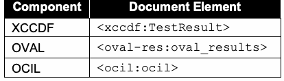
| コンポーネント | 文書要素 |
| XCCDF | <xccdf:TestResult> |
| OVAL | <oval-res:oval_results> |
| OCIL | <ocil:ocil> |
Each SCAP result data stream component SHOULD NOT use any constructs that are deprecated in its associated specification. Validation of each component SHALL be done in accordance with the portions of this document that define requirements for the component. See Section 3.1.2 for more information on the SCAP Content Validation Tool, which can help validate the correctness of SCAP result data streams.
各SCAP結果データストリームコンポーネントは、関連仕様で非推奨となった構文を使用すべきではない（SHOULD NOT）。各コンポーネントの検証は、そのコンポーネントの要件を定義する本書の該当箇所に従って行わなければならない（SHALL）。SCAP結果データストリームの正しさの検証に役立つSCAPコンテンツ検証ツールについては、第3.1.2節を参照。
未レビュー訳4.4.2 The Target Identification
4.4.2 対象の識別
The target asset MUST be represented in the ARF report using the <ai:assets> part of ARF. The <ai:asset> element populated about a target asset SHOULD include the fields specified in Table 18, where applicable. Table 18 – Asset Identification Fields to Populate
対象資産は、ARFの<ai:assets>部分を用いてARFレポート内に表さなければならない（MUST）。対象資産について情報を入力する<ai:asset>要素には、該当する場合、表18に示すフィールドを含めるべきである（SHOULD）。表18 – 入力する資産識別フィールド
未レビュー訳| Field | Location within Asset Identification Computing Device |
| Ethernet media access control address | connections/connection/mac-address |
| Internet Protocol version 4 address | connections/connection/ip-address/ip-v4 |
| Internet Protocol version 6 address | connections/connection/ip-address/ip-v6 |
| Host name | hostname |
| Fully qualified domain name | fqdn |
原本PDFの抜粋画像
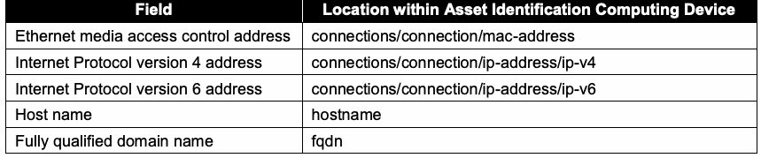
| フィールド | 資産識別内のコンピューティングデバイスにおける位置 |
| Ethernetメディアアクセス制御アドレス | connections/connection/mac-address |
| Internet Protocolバージョン4アドレス | connections/connection/ip-address/ip-v4 |
| Internet Protocolバージョン6アドレス | connections/connection/ip-address/ip-v6 |
| ホスト名 | hostname |
| 完全修飾ドメイン名 | fqdn |
Additional identification information MAY be captured in the <ai:asset> element (asset tag, system GUID, etc.) The guidelines specified in [AI] MUST be followed when populating the asset identification information. Currently, only the target asset of the SCAP evaluation is identified.
追加の識別情報（資産タグ、システムGUIDなど）を<ai:asset>要素に記録してもよい（MAY）。資産識別情報を入力する際は、[AI]に規定されたガイドラインに従わなければならない（MUST）。現時点では、SCAP評価の対象資産のみが識別される。
未レビュー訳4.4.3 The Source Data Stream
4.4.3 ソースデータストリーム
The source data stream collection that was used to generate the results against the target SHOULD be included in the ARF report as an <arf:report-request>.
対象に対する結果の生成に使用したソースデータストリームコレクションは、<arf:report-request>としてARFレポートに含めるべきである（SHOULD）。
4.4.4 The Relationships
4.4.4 関係
Table 19 outlines the relationships that MUST be specified in the ARF report if the stated condition is satisfied.
表19は、記載された条件が満たされる場合にARFレポートで指定しなければならない（MUST）関係をまとめる。
Table 19 – ARF Relationships
表19 – ARFの関係
未レビュー訳| Relationship | Condition | Cardinality | Definition | Subject | Object |
| arf-rel:isAbout | None | One for each component report | Each report is reporting about the asset | Component report | Target asset |
| scap-rel:checkContext | Benchmark report exists | One for each check component report (OVAL or OCIL) | Each check report is reporting in the context of the benchmark report | Check component report | Benchmark component report |
| scap-rel:fromSource | Report request exists | One for each component report | Each component report was generated from the SCAP source content | Component report | Report request |
| scap-rel:associatedWith | OVAL variables report is provided | One for each OVAL variables component report | Each OVAL variables report is associated with an OVAL result | Component report of OVAL variables | Component report of OVAL results |
原本PDFの抜粋画像
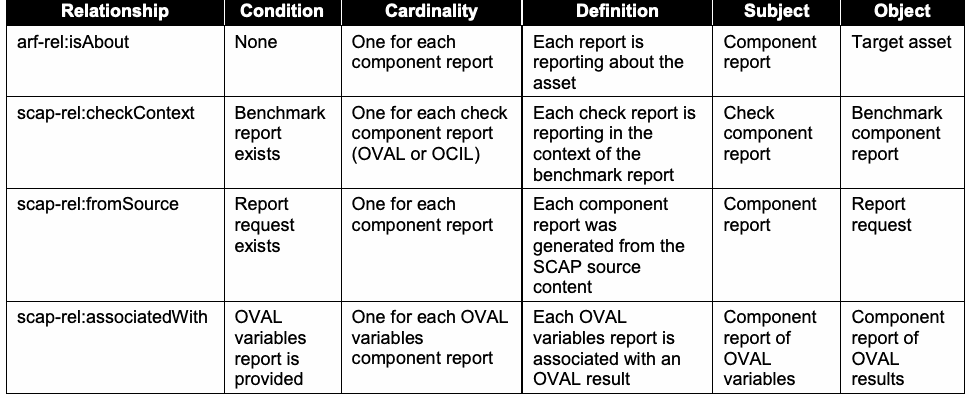
| 関係 | 条件 | 多重度 | 定義 | 主語 | 目的語 |
| arf-rel:isAbout | なし | 各コンポーネントレポートにつき一つ | 各レポートは資産について報告する | コンポーネントレポート | 対象資産 |
| scap-rel:checkContext | ベンチマークレポートが存在する | 各チェックコンポーネントレポート（OVALまたはOCIL）につき一つ | 各チェックレポートはベンチマークレポートのコンテキストで報告する | チェックコンポーネントレポート | ベンチマークコンポーネントレポート |
| scap-rel:fromSource | レポート要求が存在する | 各コンポーネントレポートにつき一つ | 各コンポーネントレポートはSCAPソースコンテンツから生成された | コンポーネントレポート | レポート要求 |
| scap-rel:associatedWith | OVAL変数レポートが提供される | 各OVAL変数コンポーネントレポートにつき一つ | 各OVAL変数レポートはOVAL結果と関連付けられる | OVAL変数のコンポーネントレポート | OVAL結果のコンポーネントレポート |
Figure 3 gives an example of how the resulting ARF report would look.
図3に、生成されるARFレポートの例を示す。
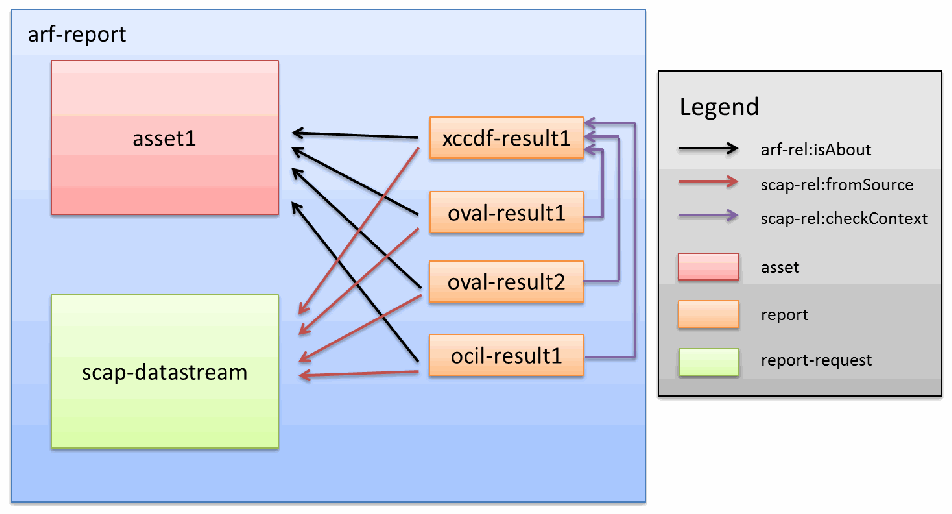
ARFレポート構造の例。資産、SCAPデータストリーム、XCCDF・OVAL・OCILの各レポート、レポート要求の関係を矢印で示し、対象資産・情報源・チェック文脈の関係種別を凡例で区別する。
Figure 3 – Sample ARF Report Structure
図3 – ARFレポート構造の例
未レビュー訳4.5 XCCDF Results
4.5 XCCDFの結果
The following requirements and recommendations pertain to content consumers generating XCCDF result data stream components. Each XCCDF result data stream component SHALL comply with the XCCDF Results schema. XCCDF test results SHALL be documented as the contents of an <xccdf:TestResult> element. To be considered valid SCAP result content, the <xccdf:TestResult> element SHALL meet the following conditions:
以下の要件および推奨事項は、XCCDF結果データストリームコンポーネントを生成するコンテンツ利用者に適用される。各XCCDF結果データストリームコンポーネントは、XCCDF Resultsスキーマに適合しなければならない（SHALL）。XCCDFテスト結果は<xccdf:TestResult>要素の内容として記録しなければならない（SHALL）。有効なSCAP結果コンテンツと見なされるには、<xccdf:TestResult>要素が次の条件を満たさなければならない（SHALL）：
未レビュー訳1.The @start-time and @end-time attributes SHALL be provided to indicate when the scan started and completed, respectively.
1.スキャンの開始時刻と完了時刻を示すため、@start-time属性および@end-time属性を指定しなければならない（SHALL）。
未レビュー訳2.The @test-system attribute SHALL be provided, and it SHALL be a CPE name value indicating the product that was responsible for generating the results.
2.@test-system属性を指定しなければならず（SHALL）、その値は結果生成を担当した製品を示すCPE名でなければならない（SHALL）。
未レビュー訳3.When the <xccdf:TestResult> is the root XCCDF element, then it will include an <xccdf:benchmark> element [XCCDF:6.6.2]. The <xccdf:benchmark> element MUST have an @id attribute specified.
3.<xccdf:TestResult>がルートXCCDF要素である場合、<xccdf:benchmark>要素を含む（[XCCDF:6.6.2]）。<xccdf:benchmark>要素には@id属性を指定しなければならない（MUST）。
未レビュー訳4.Regarding the definition and use of <xccdf:Profile> elements, reported <xccdf:set-value> elements SHALL include all those values that are exported by the reported rules. The specific settings are those determined by the reported <xccdf:Profile>.
4.<xccdf:Profile>要素の定義と使用に関して、報告対象の<xccdf:Profile>によって決定される設定のうち、報告されたルールによってエクスポートされるすべての値を、報告対象の<xccdf:set-value>要素に含めなければならない（SHALL）。
未レビュー訳5.The <xccdf:identity> element SHALL identify the security principal used to access rule evaluation on the target(s). This will include the identity name or username used to perform the evaluation.
5.<xccdf:identity>要素は、対象上でルール評価にアクセスするために使用したセキュリティ主体を識別しなければならない（SHALL）。これには、評価の実行に使用した識別名またはユーザー名が含まれる。
未レビュー訳6.Each IP address associated with the <xccdf:target> SHALL be enumerated using the <xccdf:target-address> element.
6.<xccdf:target>に関連付けられた各IPアドレスは、<xccdf:target-address>要素を用いて列挙しなければならない（SHALL）。
未レビュー訳7.An <xccdf:target-id-ref> SHALL be specified with a @system attribute of “http://scap.nist.gov/schema/asset-identification/1.1”, an @href attribute value of “”, and a @name attribute value of the ID of the <ai:asset> element in the ARF that this <xccdf:TestResult> is about.
7.<xccdf:target-id-ref>には、@system属性値“http://scap.nist.gov/schema/asset-identification/1.1”、@href属性値“”、およびこの<xccdf:TestResult>が対象とするARF内の<ai:asset>要素のIDを示す@name属性値を指定しなければならない（SHALL）。
未レビュー訳8.The <xccdf:rule-result> elements report the result of the application of each selected rule [XCCDF:6.6.2]. The <xccdf:check/xccdf:check-content-ref> element SHALL record the reference to the check system specific result component report ID and check name within the result file using the @href and @name attributes, respectively. The @href attribute SHALL contain “#” + the @id of the <arf:report> containing the check result. This approach provides traceability between XCCDF and check results. Note that if @multi-check is not set to “true” and the <xccdf:rule-result> represents a group of checks, then the @name attribute SHALL be omitted. This is a stripped down example: <arf:asset-report-collection> <rc:relationships>...</rc:relationships> <arf:report-requests>...</arf:report-requests> <arf:assets>...</arf:assets> <arf:reports> <arf:report id="xccdf1"> <arf:content> <xccdf:TestResult> <xccdf:rule-result> <xccdf:check> <xccdf:check-content-ref href="#oval1" name="oval:gov.nist:def:2"/> </xccdf:check> </xccdf:rule-result> </xccdf:TestResult> </arf:content> </arf:report> <arf:report id="oval1"> <arf:content> <arf:xccdf-res:oval-results>...</xccdf-res:oval-results> </arf:content> </arf:report>
8.<xccdf:rule-result>要素は、選択された各ルールの適用結果を報告する（[XCCDF:6.6.2]）。結果ファイル内のチェックシステム固有の結果コンポーネントレポートIDおよびチェック名への参照は、<xccdf:check/xccdf:check-content-ref>要素の@href属性および@name属性をそれぞれ使用して記録しなければならない（SHALL）。@href属性には、チェック結果を含む<arf:report>の@idの前に“#”を付けた値を含めなければならない（SHALL）。この方法によりXCCDF結果とチェック結果の追跡可能性が得られる。@multi-checkが“true”に設定されておらず、<xccdf:rule-result>が複数のチェックをまとめたものである場合、@name属性を省略しなければならない（SHALL）。簡略化した例：<arf:asset-report-collection> <rc:relationships>...</rc:relationships> <arf:report-requests>...</arf:report-requests> <arf:assets>...</arf:assets> <arf:reports> <arf:report id="xccdf1"> <arf:content> <xccdf:TestResult> <xccdf:rule-result> <xccdf:check> <xccdf:check-content-ref href="#oval1" name="oval:gov.nist:def:2"/> </xccdf:check> </xccdf:rule-result> </xccdf:TestResult> </arf:content> </arf:report> <arf:report id="oval1"> <arf:content> <arf:xccdf-res:oval-results>...</xccdf-res:oval-results> </arf:content> </arf:report>
未レビュー訳</arf:reports> </arf:asset-report-collection>
</arf:reports> </arf:asset-report-collection>
未レビュー訳9.Where applicable to the target system, each of the <xccdf:fact> elements in Table 20 SHALL be provided. Previous versions of SCAP required additional facts; these have been incorporated into the use of the Asset Identification specification, as discussed in Section 4.4.2.
9.対象システムに該当する場合、表20の各<xccdf:fact>要素を指定しなければならない（SHALL）。以前のSCAPバージョンでは追加のfactが必要だったが、第4.4.2節で説明するAsset Identification仕様の使用に取り込まれている。
Table 20 - XCCDF Fact Descriptions
表20 - XCCDF factの説明
未レビュー訳| XCCDF Fact | Description of Use |
| urn:scap:fact:asset:identifier:ein | Equipment identification number or other inventory tag number |
| urn:scap:fact:asset:identifier:guid | Globally unique identifier for the asset, if assigned |
| urn:scap:fact:asset:environmental_information: owning_organization | Organization that tracks the asset on its inventory |
| urn:scap:fact:asset:environmental_information: current_region | Geographic region where the asset is located |
| urn:scap:fact:asset:environmental_information: administration_unit | Name of the organization that does system administration for the asset |
原本PDFの抜粋画像
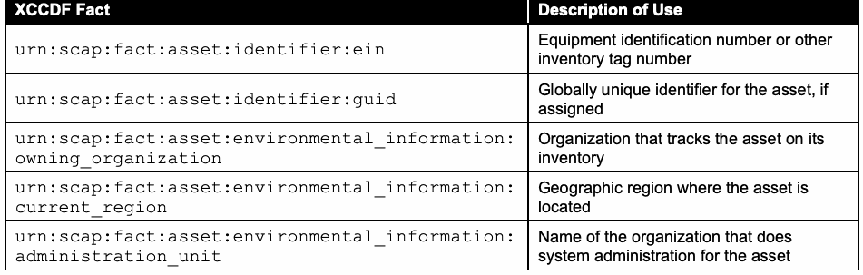
| XCCDF fact | 用途の説明 |
| urn:scap:fact:asset:identifier:ein | 機器識別番号またはその他のインベントリタグ番号 |
| urn:scap:fact:asset:identifier:guid | 割り当てられている場合の資産のグローバル一意識別子 |
| urn:scap:fact:asset:environmental_information: owning_organization | 資産をインベントリで追跡する組織 |
| urn:scap:fact:asset:environmental_information: current_region | 資産が所在する地理的地域 |
| urn:scap:fact:asset:environmental_information: administration_unit | 資産のシステム管理を行う組織名 |
4.5.1 Assigning Identifiers to Rule Results
4.5.1 ルール結果への識別子の割り当て
The <xccdf:rule-result> element provides data indicating the result of assessing a system using the identified <xccdf:Rule> element. If the target <xccdf:Rule> identified by the <xccdf:rule-result> element’s @idref attribute has one or more <xccdf:ident> elements with a @system attribute value listed in Section 3.2.4.1, then each <xccdf:ident> element SHALL also appear within the <xccdf:rule-result> element. Here is an example for a CVE entry: <xccdf:rule-result idref="java-upgrade-278" weight="10.0"> <xccdf:result>pass</xccdf:result> … <xccdf:ident system="http://cve.mitre.org">CVE-2006-0614</xccdf:ident> … </xccdf:rule-result>
<xccdf:rule-result>要素は、特定された<xccdf:Rule>要素を用いてシステムを評価した結果を示すデータを提供する。<xccdf:rule-result>要素の@idref属性で識別される対象<xccdf:Rule>要素が、第3.2.4.1節に列挙された@system属性値を持つ<xccdf:ident>要素を一つ以上含む場合、各<xccdf:ident>要素も<xccdf:rule-result>要素内に含めなければならない（SHALL）。CVEエントリの例：<xccdf:rule-result idref="java-upgrade-278" weight="10.0"> <xccdf:result>pass</xccdf:result> … <xccdf:ident system="http://cve.mitre.org">CVE-2006-0614</xccdf:ident> … </xccdf:rule-result>
未レビュー訳If the <xccdf:ident> element is included, for tracking purposes it is important that produced XCCDF results have specific meanings. If an <xccdf:ident> element is present and it identifies a CVE, CCE, or CPE entry, then an <xccdf:rule-result> of “pass” SHALL indicate that the check content evaluated within the rule complied with one of the following:
<xccdf:ident>要素を含める場合、追跡目的において、生成されるXCCDF結果が特定の意味を持つことが重要である。<xccdf:ident>要素が存在し、CVE、CCE、またはCPEエントリを識別する場合、“pass”の<xccdf:rule-result>は、ルール内で評価されたチェックコンテンツが次のいずれかに適合したことを示さなければならない（SHALL）：
未レビュー訳 For a CVE entry, the target platform satisfies all the conditions of the XCCDF rule and is unaffected by the vulnerability or exposure referenced by the CVE.
CVEエントリの場合、対象プラットフォームはXCCDFルールのすべての条件を満たし、CVEが参照する脆弱性または曝露の影響を受けない。
未レビュー訳 For a CCE entry, the target platform complies with the configuration setting guidance expressed in the XCCDF rule.
CCEエントリの場合、対象プラットフォームはXCCDFルールに示された構成設定のガイダンスに適合する。
未レビュー訳 For a CPE entry, the target platform was identified on the system. It is important that these interpretations of <xccdf:ident> elements be preserved. For example, consider two policy recommendations. One is that a particular piece of software be installed, and the second that another piece of software not be installed. Both rules for these policy recommendations could use the same CPE entry in their <xccdf:ident> elements. However, because the interpretation of a
CPEエントリの場合、対象プラットフォームがシステム上で確認された。<xccdf:ident>要素のこれらの解釈を維持することが重要である。たとえば、二つのポリシー推奨事項を考える。一つ目は特定のソフトウェアをインストールすることであり、二つ目は別のソフトウェアをインストールしないことである。両方のルールの<xccdf:ident>要素で同じCPEエントリを使用できる。しかし、識別子の
未レビュー訳CPE entry is that a “pass” result indicates software was installed, the second policy recommendation’s rule would violate this. This can be corrected by using the @con:negate attribute, a Boolean attribute that inverts the rule result. The second rule could check for the software being installed and then negate that result, thus giving a result consistent in meaning with the first rule. For rules that cannot have their interpretations preserved through the use of the @con:negate attribute, an alternative is to have a CCE entry corresponding to the recommendation. Rules that do not use <xccdf:ident> elements have no such restrictions.
CPEエントリは“pass”結果がソフトウェアのインストール済みを示すため、二つ目のポリシー推奨事項のルールはこの意味に反する。これはルール結果を反転するBoolean属性である@con:negate属性を使用して修正できる。二つ目のルールでソフトウェアがインストールされているかをチェックし、その結果を否定すれば、一つ目のルールと意味が一致する結果になる。@con:negate属性を使用しても解釈を維持できないルールについては、推奨事項に対応するCCEエントリを使用する方法がある。<xccdf:ident>要素を使用しないルールには、このような制約はない。
未レビュー訳4.5.2 Mapping OVAL Results to XCCDF Results
4.5.2 OVAL結果からXCCDF結果へのマッピング
When evaluating an <xccdf:Rule> element that references an OVAL Definition, the <xccdf:rule-result> element SHALL be used to capture the result of this evaluation. This result SHALL be determined by evaluating the referenced OVAL Definition on a target host. The result value of an individual <xccdf:check> SHALL be mapped from the OVAL Definition result produced during evaluation. The corresponding <xccdf:rule-result/xccdf:result> value is then computed based on the result values of all relevant <xccdf:check> elements. (Normally only a single <xccdf:check> element is needed, but where an <xccdf:complex-check> element is used, there may be multiple results that must be combined, as outlined in the XCCDF specification.) While the OVAL specification permits limiting result status reporting, SCAP-conformant content SHALL include full status reporting, including Error, Unknown, Not Applicable, Not Evaluated, True, and False. Content consumers SHALL apply the mapping illustrated in Table 21 when deriving <xccdf:check> results from OVAL Definition processing. The corresponding result value SHALL be recorded based on the @class attribute of the OVAL Definition where applicable. Table 21 - Deriving XCCDF Check Results from OVAL Definition Results
OVAL定義を参照する<xccdf:Rule>要素を評価する場合、評価結果を記録するために<xccdf:rule-result>要素を使用しなければならない（SHALL）。この結果は、対象ホスト上で参照されたOVAL定義を評価して決定しなければならない（SHALL）。個々の<xccdf:check>の結果値は、評価時に生成されたOVAL定義の結果からマッピングしなければならない（SHALL）。対応する<xccdf:rule-result/xccdf:result>値は、関連するすべての<xccdf:check>要素の結果値に基づいて計算される。（通常は単一の<xccdf:check>要素で足りるが、<xccdf:complex-check>要素を使用する場合は、XCCDF仕様で概説するとおり、複数の結果を組み合わせる必要がある。）OVAL仕様では結果状態の報告を限定できるが、SCAP適合コンテンツは、Error、Unknown、Not Applicable、Not Evaluated、True、Falseを含む完全な状態報告を含めなければならない（SHALL）。コンテンツ利用者は、OVAL定義処理から<xccdf:check>結果を導出する際、表21に示すマッピングを適用しなければならない（SHALL）。該当する場合、対応する結果値はOVAL定義の@class属性に基づいて記録しなければならない（SHALL）。表21 - OVAL定義結果からXCCDFチェック結果を導出する
未レビュー訳原本PDFの抜粋画像
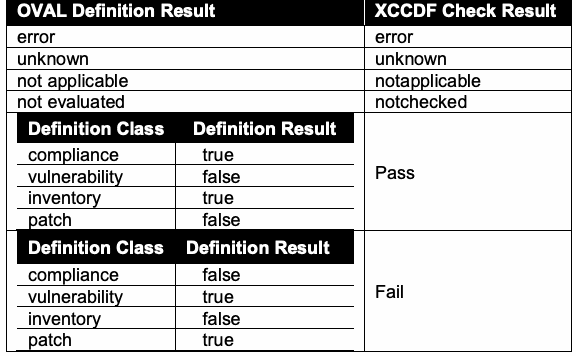
The mappings in Table 21 are specific to each OVAL Definition class. For example, if an OVAL compliance class definition is processed and OVAL returns a result of “true”, the content consumer is conveying the fact that the system was found to be compliant with that check and therefore returns a “pass” result for that check. A similar definition for a vulnerable condition will return results of “false” if that vulnerability was not found on the examined devices, resulting in a “pass” from the XCCDF check. Negations of check results or their combination in complex-checks may result in additional modification before the final corresponding <xccdf:rule-result/xccdf:result> value is known.
表21のマッピングはOVAL定義の各クラス固有である。たとえば、OVALコンプライアンスクラス定義が処理され、OVALが“true”を返す場合、コンテンツ利用者はシステムがそのチェックに適合していると判断されたことを示し、そのチェックの結果として“pass”を返す。同様に、脆弱性条件の定義では、検査対象デバイスに脆弱性が見つからなければ“false”が返り、XCCDFチェックでは“pass”となる。チェック結果の否定や複雑なチェックでの結果の組み合わせにより、対応する最終<xccdf:rule-result/xccdf:result>値が確定する前に、さらに修正が必要となる場合がある。
If the <xccdf:Rule> element under evaluation has an <xccdf:check-content-ref> element with the @name attribute omitted and an <xccdf:check> element with its @multi-check attribute set to “true”, then the result of each evaluated OVAL Definition SHALL be recorded as a separate <xccdf:rule-result> element. In this case the <xccdf:rule-result/xccdf:check-content-ref> element SHALL identify the specific check result of each evaluated OVAL Definition using the @href and @name attributes as described in Section 4.5, item 8.
評価対象の<xccdf:Rule>要素に@name属性を省略した<xccdf:check-content-ref>要素があり、<xccdf:check>要素の@multi-check属性が“true”に設定されている場合、評価された各OVAL定義の結果を個別の<xccdf:rule-result>要素として記録しなければならない（SHALL）。この場合、<xccdf:rule-result/xccdf:check-content-ref>要素は、第4.5節の項目8で説明するとおり、@href属性と@name属性を用いて評価された各OVAL定義の特定のチェック結果を識別しなければならない（SHALL）。
未レビュー訳4.6 OVAL Results
4.6 OVAL結果
The following requirements and recommendations pertain to content consumers generating OVAL result data stream components. Each OVAL result data stream component SHALL validate against version 5.10 of the OVAL Results schema19 regardless of the version of the OVAL Definitions document that was evaluated. An SCAP OVAL result data stream component SHALL include the results of every OVAL Definition used to generate the reported results. In order to be SCAP conformant, an SCAP content consumer SHALL be able to produce all the types of OVAL Results output described below. The specific result output SHALL be configurable within the SCAP content consumer. In order to support SCAP instances where OVAL thin content (only the ID of the definition and the results) is preferred, SCAP content consumers SHALL support all valid values for the <oval-res:directives> controlling the expected content of the results file. To support the ability for results to be consumed by the appropriate product(s), data results SHALL be expressed as Single Machine Without System Characteristics, Single Machine With System Characteristics, or Single Machine With Thin Results as follows:
以下の要件および推奨事項は、OVAL結果データストリームコンポーネントを生成するコンテンツ利用者に適用される。各OVAL結果データストリームコンポーネントは、評価対象のOVAL定義文書のバージョンにかかわらず、OVAL Resultsスキーマのバージョン5.10（脚注19参照）に対して検証しなければならない（SHALL）。SCAP OVAL結果データストリームコンポーネントには、報告結果の生成に使用したすべてのOVAL定義の結果を含めなければならない（SHALL）。SCAP適合のため、SCAPコンテンツ利用者は以下に説明するすべての種類のOVAL結果出力を生成できなければならない（SHALL）。特定の結果出力はSCAPコンテンツ利用者内で設定可能でなければならない（SHALL）。OVALの簡易コンテンツ（定義IDと結果のみ）が望ましいSCAPインスタンスをサポートするため、SCAPコンテンツ利用者は、結果ファイルに含めるコンテンツを制御する<oval-res:directives>の有効な値をすべてサポートしなければならない（SHALL）。適切な製品が結果を利用できるよう、データ結果は次のいずれかで表さなければならない（SHALL）：
未レビュー訳1.Single Machine Without System Characteristics – A single result file that includes the results of all OVAL Definitions evaluated and “full” results types as described in the <oval-res:ContentEnumeration> element, without system characteristics.
1.システム特性なしの単一マシン – 評価されたすべてのOVAL定義の結果と、<oval-res:ContentEnumeration>要素に記載された“full”結果型を含み、システム特性を含まない単一の結果ファイル。
未レビュー訳For this format, the values for the <oval-res:directives> element SHALL be: <oval-res:directives include_source_definitions="false"> <oval-res:definition_true content="full" reported="true"/> <oval-res:definition_false content="full" reported="true"/> <oval-res:definition_unknown content="full" reported="true"/> <oval-res:definition_error content="full" reported="true"/> <oval-res:definition_not_evaluated content="full" reported="true"/> <oval-res:definition_not_applicable content="full" reported="true"/> </oval-res:directives>
この形式では、<oval-res:directives>要素の値を次のとおりとしなければならない（SHALL）：<oval-res:directives include_source_definitions="false"> <oval-res:definition_true content="full" reported="true"/> <oval-res:definition_false content="full" reported="true"/> <oval-res:definition_unknown content="full" reported="true"/> <oval-res:definition_error content="full" reported="true"/> <oval-res:definition_not_evaluated content="full" reported="true"/> <oval-res:definition_not_applicable content="full" reported="true"/> </oval-res:directives>
未レビュー訳When creating the OVAL System Characteristics as defined by the <oval-sc:oval_system_characteristics> element, the <oval-sc:collected_objects> and <oval-sc:system_data> elements SHALL NOT be provided.
<oval-sc:oval_system_characteristics>要素で定義されるOVALシステム特性を作成する際、<oval-sc:collected_objects>要素および<oval-sc:system_data>要素を指定してはならない（SHALL NOT）。
未レビュー訳2.Single Machine With System Characteristics – A single result file that includes the results of all OVAL Definitions evaluated and “full” results types as described in the <oval-res:ContentEnumeration> element and the System Characteristics of the target evaluated.
2.システム特性ありの単一マシン – 評価されたすべてのOVAL定義の結果と、<oval-res:ContentEnumeration>要素に記載された“full”結果型、および評価対象のシステム特性を含む単一の結果ファイル。
未レビュー訳For this format, the values for the <oval-res:directives> element SHALL be: <oval-res:directives include_source_definitions="false">
この形式では、<oval-res:directives>要素の値を次のとおりとしなければならない（SHALL）：<oval-res:directives include_source_definitions="false">
未レビュー訳<oval-res:definition_true content="full" reported="true"/> <oval-res:definition_false content="full" reported="true"/> <oval-res:definition_unknown content="full" reported="true"/> <oval-res:definition_error content="full" reported="true"/> <oval-res:definition_not_evaluated content="full" reported="true"/> <oval-res:definition_not_applicable content="full" reported="true"/> </oval-res:directives>
<oval-res:definition_true content="full" reported="true"/> <oval-res:definition_false content="full" reported="true"/> <oval-res:definition_unknown content="full" reported="true"/> <oval-res:definition_error content="full" reported="true"/> <oval-res:definition_not_evaluated content="full" reported="true"/> <oval-res:definition_not_applicable content="full" reported="true"/> </oval-res:directives>
未レビュー訳When creating the OVAL System Characteristics as defined by the <oval-sc:oval_system_characteristics> element, the <oval-sc:collected_objects> and <oval-sc:system_data> elements SHALL be provided.
<oval-sc:oval_system_characteristics>要素で定義されるOVALシステム特性を作成する際、<oval-sc:collected_objects>要素および<oval-sc:system_data>要素を指定しなければならない（SHALL）。
未レビュー訳3.Single Machine With Thin Results – A single result file that includes the results of all OVAL Definitions evaluated and “thin” results types as described in the OVAL Results schema. A value of “thin” means only the minimal amount of information will be provided.
3.簡易結果の単一マシン – 評価されたすべてのOVAL定義の結果と、OVAL Resultsスキーマに記載された“thin”結果型を含む単一の結果ファイル。“thin”の値は、最小限の情報のみが提供されることを意味する。
未レビュー訳For this format, the values for the <oval-res:directives> element SHALL be: <oval-res:directives include_source_definitions="false"> <oval-res:definition_true content="thin" reported="true"/> <oval-res:definition_false content="thin" reported="true"/> <oval-res:definition_unknown content="thin" reported="true"/> <oval-res:definition_error content="thin" reported="true"/> <oval-res:definition_not_evaluated content="thin" reported="true"/> <oval-res:definition_not_applicable content="thin" reported="true"/> </oval-res:directives>
この形式では、<oval-res:directives>要素の値を次のとおりとしなければならない（SHALL）：<oval-res:directives include_source_definitions="false"> <oval-res:definition_true content="thin" reported="true"/> <oval-res:definition_false content="thin" reported="true"/> <oval-res:definition_unknown content="thin" reported="true"/> <oval-res:definition_error content="thin" reported="true"/> <oval-res:definition_not_evaluated content="thin" reported="true"/> <oval-res:definition_not_applicable content="thin" reported="true"/> </oval-res:directives>
未レビュー訳When specifying OVAL system characteristics, a reference SHOULD be made to the target asset in the ARF report collection. Specifically, the <oval-sc:oval_system_characteristics>/<oval-sc:system_info>/##any SHOULD be populated with a <con:asset-identification> element. That element MUST be populated with a single <arf:object-ref> element that points to the <ai:asset> element in the ARF report collection pertaining to the OVAL result. See [ARF] for details on populating the <arf:object-ref> element.
OVALシステム特性を指定する際は、ARFレポートコレクション内の対象資産への参照を含めるべきである（SHOULD）。具体的には、<oval-sc:oval_system_characteristics>/<oval-sc:system_info>/##anyに<con:asset-identification>要素を設定すべきである（SHOULD）。その要素には、OVAL結果に該当するARFレポートコレクション内の<ai:asset>要素を指す<arf:object-ref>要素を一つだけ設定しなければならない（MUST）。<arf:object-ref>要素の設定については[ARF]を参照。
未レビュー訳4.7 OCIL Results
4.7 OCIL結果
未レビュー訳The following requirements and recommendations pertain to content consumers generating OCIL result data stream components. An SCAP OCIL result data stream component SHALL include the results of every <ocil:questionnaire>, <ocil:question_test_action>, and <ocil:question> element used to generate the reported results.
以下の要件および推奨事項は、OCIL結果データストリームコンポーネントを生成するコンテンツ利用者に適用される。SCAP OCIL結果データストリームコンポーネントには、報告結果の生成に使用したすべての<ocil:questionnaire>、<ocil:question_test_action>、および<ocil:question>要素の結果を含めなければならない（SHALL）。
未レビュー訳4.8 Result Data Stream Signing
4.8 結果データストリームの署名
未レビュー訳Digitally signing result data stream content is important to ensuring the integrity and trustworthiness of results. Leveraging [TMSAD] for SCAP can improve the legitimacy of results of SCAP content and create a more secure environment. As such, content consumers MAY digitally sign result content following the guidelines in [TMSAD], along with the following requirements. One XML digital signature MAY be included in an <arf:extended-info> element in the ARF report. The signature MUST be represented as a <dsig:Signature> element and MUST follow the W3C recommendation [DSIG]. The <dsig:Signature> element MUST sign the ARF report collection root element.
結果データストリームコンテンツに電子署名を付与することは、結果の完全性と信頼性を確保するうえで重要である。SCAPで[TMSAD]を活用すれば、SCAPコンテンツの結果の正当性を高め、より安全な環境を実現できる。そのため、コンテンツ利用者は[TMSAD]の指針および次の要件に従って、結果コンテンツに電子署名を付与してもよい（MAY）。ARFレポート内の<arf:extended-info>要素に、XML電子署名を一つ含めてもよい（MAY）。署名は<dsig:Signature>要素で表されなければならず（MUST）、W3C勧告[DSIG]に従わなければならない（MUST）。<dsig:Signature>要素はARFレポートコレクションのルート要素に署名しなければならない（MUST）。
未レビュー訳The <dsig:Signature> element MUST follow the recommendations in [TMSAD] and these additional requirements:
<dsig:Signature>要素は[TMSAD]の推奨事項と以下の追加要件に従わなければならない（MUST）：
1.A <dsig:SignatureProperties> element MUST be included in the <dsig:Signature> element. At least one <dsig:SignatureProperty> element MUST be populated with <dt:signature-info> as specified in [TMSAD].
1.<dsig:SignatureProperties>要素を<dsig:Signature>要素内に含めなければならない（MUST）。少なくとも一つの<dsig:SignatureProperty>要素に、[TMSAD]で指定された<dt:signature-info>を設定しなければならない（MUST）。
2.The first <dsig:Reference> element in a <dsig:Signature> element MUST be to the <arf:asset-report-collection> element. The element MUST be referenced in the @URI attribute using the empty string convention “”.
2.<dsig:Signature>要素内の最初の<dsig:Reference>要素は<arf:asset-report-collection>要素を参照しなければならない（MUST）。同要素は、空文字列規約“”を用いて参照しなければならない（MUST）。
未レビュー訳3.Two XPath Filter 2 transforms MUST exist on the first <dsig:Reference> element in a <dsig:Signature> element. Both MUST specify a filter type of “subtract”. The first transform MUST specify the XPath “/arf:asset-report-collection/arf:extended-infos[count(arf:extended-info[dsig:Signature]) = count(*)]”. The second transform MUST specify the XPath “/arf:asset-report-collection/arf:extended-infos/arf:extended-info[dsig:Signature]”. In both cases, the namespace prefix “arf” MUST map to the ARF namespace specified in this document.
3.<dsig:Signature>要素内の最初の<dsig:Reference>要素には、二つのXPath Filter 2変換が存在しなければならない（MUST）。両方のfilter型は“subtract”でなければならない（MUST）。第一の変換ではXPath “/arf:asset-report-collection/arf:extended-infos[count(arf:extended-info[dsig:Signature]) = count(*)]”を指定しなければならない（MUST）。第二の変換ではXPath “/arf:asset-report-collection/arf:extended-infos/arf:extended-info[dsig:Signature]”を指定しなければならない（MUST）。いずれの場合も、namespace prefix “arf”は本書で指定するARF名前空間に対応付けなければならない（MUST）。
未レビュー訳4.The second <dsig:Reference> element MUST be to the <dsig:SignatureProperties> element captured in a <dsig:Object> element with the <dsig:Signature> element. The <dsig:SignatureProperties> element MUST be referenced in the @URI attribute using “#” + @Id of the <dsig:SignatureProperties> element.
4.第二の<dsig:Reference>要素は、<dsig:Signature>要素内の<dsig:Object>要素に格納された<dsig:SignatureProperties>要素を参照しなければならない（MUST）。<dsig:SignatureProperties>要素は、“#” + <dsig:SignatureProperties>要素の@Idを用いて@URI属性内で参照しなければならない（MUST）。
5.Key information SHOULD be provided on the <dsig:Signature> element.
5.鍵情報は<dsig:Signature>要素に指定すべきである（SHOULD）。
未レビュー訳In situations where it is desirable to countersign a result data stream (e.g., when a content consumer automatically signs a result data stream and then a person also wants to sign the results), the following requirements apply.
結果データストリームに副署することが望ましい場合（例：コンテンツ利用者が結果データストリームに自動署名し、その後に人が結果への署名も希望する場合）は、次の要件が適用される。
1.The <arf:extended-info> element containing the original signature SHALL be removed from the resulting document.
1.元の署名を含む<arf:extended-info>要素は、生成される文書から削除しなければならない（SHALL）。
2.The original signature SHALL be captured as a <dsig:Object> element on the new <dsig:Signature> element.
2.元の署名は、新しい<dsig:Signature>要素上の<dsig:Object>要素として格納しなければならない（SHALL）。
未レビュー訳3.The first <dsig:Reference> element on the new <dsig:Signature> element SHALL reference the <dsig:Object> element containing the original signature. The <dsig:Object> element MUST be referenced in the @URI attribute using “#” + @Id of the <dsig:Object> element.
3.新しい<dsig:Signature>要素の最初の<dsig:Reference>要素は、元の署名を含む<dsig:Object>要素を参照しなければならない（SHALL）。<dsig:Object>要素は、“#” + <dsig:Object>要素の@Idを用いて@URI属性内で参照しなければならない（MUST）。
未レビュー訳4.The second <dsig:Reference> element MUST be to the <dsig:SignatureProperties> element captured in a <dsig:Object> element with the <dsig:Signature> element. The <dsig:SignatureProperties> element MUST be referenced in the @URI attribute using “#” + @Id of the <dsig:SignatureProperties> element.
4.第二の<dsig:Reference>要素は、<dsig:Signature>要素内の<dsig:Object>要素に格納された<dsig:SignatureProperties>要素を参照しなければならない（MUST）。<dsig:SignatureProperties>要素は、“#” + <dsig:SignatureProperties>要素の@Idを用いて@URI属性内で参照しなければならない（MUST）。
未レビュー訳5.A <dsig:SignatureProperties> element MUST be included in the <dsig:Signature> element. At least one <dsig:SignatureProperty> element MUST be populated with <dt:signature-info> as specified in [TMSAD].
5.<dsig:SignatureProperties>要素を<dsig:Signature>要素内に含めなければならない（MUST）。少なくとも一つの<dsig:SignatureProperty>要素に、[TMSAD]で指定された<dt:signature-info>を設定しなければならない（MUST）。
未レビュー訳6.Key information SHOULD be provided on the <dsig:Signature> element in accordance with [TMSAD].
6.鍵情報は[TMSAD]に従って<dsig:Signature>要素に指定すべきである（SHOULD）。
7.The new <dsig:Signature> element MUST be placed in a new <arf:extended-info> element in the ARF report collection.
7.新しい<dsig:Signature>要素は、ARFレポートコレクション内の新しい<arf:extended-info>要素に配置しなければならない（MUST）。
A signature that has countersigned another signature (also known as an enveloping signature) MAY be countersigned. When doing so, the requirements above SHALL apply to the new signature creation. When signing a result data stream, the source data stream collection SHOULD be captured in the ARF report being signed.
別の署名に副署した署名（包摂署名とも呼ばれる）に、さらに副署してもよい（MAY）。その場合、新しい署名の作成には上記の要件を適用しなければならない（SHALL）。結果データストリームに署名する場合、署名対象のARFレポートにソースデータストリームコレクションを含めるべきである（SHOULD）。
未レビュー訳5. Source Data Stream Content Requirements for Use Cases
5. ユースケース別のソースデータストリームコンテンツ要件
未レビュー訳This section discusses additional requirements for the following SCAP-conformant content use cases: compliance checking, vulnerability scanning, and inventory scanning. Note that as stated in Table 3 in Section 3.1, each data stream is required to have a @use-case attribute in its <ds:data-stream> element with a value corresponding either to one of the content types defined in this section or to “OTHER”, for data streams not corresponding to a defined use case. The required value for each content type is specified below in the appropriate subsection. Each use case is subject not only to the requirements presented in this section, but also to all applicable requirements in Sections 3 and 4.
この節では、次のSCAP適合コンテンツのユースケースに関する追加要件を説明する：コンプライアンスチェック、脆弱性スキャン、インベントリスキャン。表3（第3.1節）に記載されているとおり、各データストリームの<ds:data-stream>要素には@use-case属性が必要であり、その値は本節で定義するコンテンツ種別のいずれか、または定義済みユースケースに該当しないデータストリームの場合は“OTHER”に対応しなければならない。各コンテンツ種別に必要な値は、以下の該当する小節で指定する。各ユースケースには、本節の要件だけでなく、第3節および第4節の該当する要件もすべて適用される。
未レビュー訳5.1 Compliance Checking
5.1 コンプライアンスチェック
SCAP content can be used to compare system characteristics and settings against an SCAP-conformant checklist in an automated fashion. This can verify that operating systems and applications comply with security checklists and identify any deviations from those checklists. The SCAP source data stream component that MUST be included for compliance checking is the XCCDF benchmark, which expresses the checklist. Each rule in the XCCDF benchmark SHALL reference one of the following:
SCAPコンテンツを使用すると、システム特性および設定をSCAP適合チェックリストと自動的に比較できる。これにより、オペレーティングシステムやアプリケーションがセキュリティチェックリストに適合していることを確認し、逸脱を特定できる。コンプライアンスチェックに必ず含めるSCAPソースデータストリームコンポーネントは、チェックリストを表すXCCDFベンチマークである（MUST）。XCCDFベンチマーク内の各ルールは、次のいずれかを参照しなければならない（SHALL）：
未レビュー訳 An OVAL compliance definition. This definition SHALL be contained in an OVAL component, which holds definitions of compliance checks used by the checklist. An XCCDF benchmark’s rules MAY reference one or more OVAL compliance class definitions in an OVAL component.
OVALコンプライアンス定義。この定義は、チェックリストで使用するコンプライアンスチェックの定義を保持するOVALコンポーネントに含まれなければならない（SHALL）。XCCDFベンチマークのルールは、OVALコンポーネント内の一つ以上のOVALコンプライアンスクラス定義を参照してもよい（MAY）。
未レビュー訳 An OCIL questionnaire. This questionnaire SHALL be contained in an OCIL component, which holds questionnaires that collect information that OVAL is not being used to collect, such as posing questions to users or harvesting configuration information from an existing database. An XCCDF benchmark’s rules MAY reference one or more OCIL questionnaires in an OCIL component.
OCIL質問票。この質問票は、OVALで収集しない情報を収集する質問票を保持するOCILコンポーネントに含まれなければならない（SHALL）。たとえば、ユーザーへの質問や既存データベースからの構成情報の取得が該当する。XCCDFベンチマークのルールは、OCILコンポーネント内の一つ以上のOCIL質問票を参照してもよい（MAY）。
未レビュー訳 An OVAL patch definition. This definition SHALL be contained in an OVAL component, which holds definitions for patch compliance checks. These checks may be needed if an organization includes patch verification in its compliance activities. An XCCDF benchmark MAY reference an OVAL patch definition through a patches up-to-date rule in a manner consistent with Section 3.2.4.3. Each XCCDF benchmark SHALL have at least one rule that references either an OVAL compliance class definition in an OVAL component or an OCIL questionnaire in an OCIL component. All OVAL components and OCIL components referenced by the XCCDF benchmark SHALL be included in the SCAP source data stream. If the XCCDF benchmark component references any CPE names, then the SCAP source data stream MUST include a CPE component, which specifies the products or platforms of interest, and MUST include one or more OVAL inventory class definitions in an OVAL component that contain the technical procedures for determining whether or not a specific target asset has a product or platform of interest. The @use-case attribute in the <ds:data-stream> element MUST be set to
OVALパッチ定義。この定義は、パッチコンプライアンスチェックの定義を保持するOVALコンポーネントに含まれなければならない（SHALL）。組織がコンプライアンス活動にパッチ検証を含める場合、これらのチェックが必要となることがある。XCCDFベンチマークは、第3.2.4.3節と整合する方法で、パッチ最新化ルールを介してOVALパッチ定義を参照してもよい（MAY）。各XCCDFベンチマークには、OVALコンポーネント内のOVALコンプライアンスクラス定義またはOCILコンポーネント内のOCIL質問票のいずれかを参照するルールを少なくとも一つ含めなければならない（SHALL）。XCCDFベンチマークが参照するすべてのOVALコンポーネントおよびOCILコンポーネントを、SCAPソースデータストリームに含めなければならない（SHALL）。XCCDFベンチマークコンポーネントがCPE名を参照する場合、SCAPソースデータストリームには、対象製品またはプラットフォームを指定するCPEコンポーネントを含めなければならず（MUST）、特定の対象資産に対象製品またはプラットフォームがあるかどうかを判断する技術的手順を含むOVALインベントリクラス定義を一つ以上、OVALコンポーネント内に含めなければならない（MUST）。<ds:data-stream>要素の@use-case属性は次の値に設定しなければならない（MUST）：
未レビュー訳“CONFIGURATION”.
“CONFIGURATION”。
未レビュー訳5.2 Vulnerability Scanning
5.2 脆弱性スキャン
SCAP content can be used to scan operating systems and applications to look for known software flaws that introduce security exposures. The content enables consistent detection and reporting of these flaws.
SCAPコンテンツを使用すると、セキュリティ上の危険をもたらす既知のソフトウェア欠陥を探すため、オペレーティングシステムやアプリケーションをスキャンできる。このコンテンツにより、欠陥を一貫した方法で検出し、報告できる。
The SCAP source data stream component that MUST be included for vulnerability scanning is the XCCDF benchmark, which expresses the checklist of the flaws to be checked for. Each rule in the XCCDF benchmark SHALL reference one of the following:
脆弱性スキャンに必ず含めるSCAPソースデータストリームコンポーネントは、チェック対象の欠陥のチェックリストを表すXCCDFベンチマークである（MUST）。XCCDFベンチマーク内の各ルールは、次のいずれかを参照しなければならない（SHALL）：
An OVAL vulnerability definition. This definition SHALL be contained in an OVAL component, which holds definitions of vulnerability checks used by the checklist. An XCCDF benchmark’s rules MAY reference one or more OVAL vulnerability class definitions in an OVAL component.
OVAL脆弱性定義。この定義は、チェックリストで使用する脆弱性チェックの定義を保持するOVALコンポーネントに含まれなければならない（SHALL）。XCCDFベンチマークのルールは、OVALコンポーネント内の一つ以上のOVAL脆弱性クラス定義を参照してもよい（MAY）。
未レビュー訳 An OCIL questionnaire. This questionnaire SHALL be contained in an OCIL component, which holds questionnaires that collect information that OVAL is not being used to collect, such as giving a system administrator step-by-step directions for manually examining a system for a vulnerability that cannot be detected with OVAL, and then collecting information on the results of that manual examination. An XCCDF benchmark’s rules MAY reference one or more OCIL questionnaires in an OCIL component.
OCIL質問票。この質問票は、OVALで収集しない情報を収集する質問票を保持するOCILコンポーネントに含まれなければならない（SHALL）。たとえば、OVALでは検出できない脆弱性についてシステム管理者に手順を追って手動検査を指示し、その手動検査の結果情報を収集する場合がある。XCCDFベンチマークのルールは、OCILコンポーネント内の一つ以上のOCIL質問票を参照してもよい（MAY）。
未レビュー訳 An OVAL patch definition. This definition SHALL be contained in an OVAL component, which holds definitions for patch compliance checks. These checks may be needed if an organization includes patch verification in its vulnerability scanning activities. An XCCDF benchmark MAY reference an OVAL patch definition through a patches up-to-date rule in a manner consistent with Section 3.2.4.3. Each XCCDF benchmark SHALL have at least one rule that references either an OVAL vulnerability class definition in an OVAL component or an OCIL questionnaire in an OCIL component. All OVAL components and OCIL components referenced by the XCCDF benchmark SHALL be included in the SCAP source data stream. If the XCCDF benchmark component references any CPE names, then the SCAP source data stream MUST include a CPE component, which specifies the products or platforms of interest, and MUST include one or more OVAL inventory class definitions in an OVAL component that contain the technical procedures for determining whether or not a specific target asset has a product or platform of interest. The @use-case attribute in the <ds:data-stream> element MUST be set to
OVALパッチ定義。この定義は、パッチコンプライアンスチェックの定義を保持するOVALコンポーネントに含まれなければならない（SHALL）。組織が脆弱性スキャン活動にパッチ検証を含める場合、これらのチェックが必要となることがある。XCCDFベンチマークは、第3.2.4.3節と整合する方法で、パッチ最新化ルールを介してOVALパッチ定義を参照してもよい（MAY）。各XCCDFベンチマークには、OVALコンポーネント内のOVAL脆弱性クラス定義またはOCILコンポーネント内のOCIL質問票のいずれかを参照するルールを少なくとも一つ含めなければならない（SHALL）。XCCDFベンチマークが参照するすべてのOVALコンポーネントおよびOCILコンポーネントをSCAPソースデータストリームに含めなければならない（SHALL）。XCCDFベンチマークコンポーネントがCPE名を参照する場合、SCAPソースデータストリームには、対象製品またはプラットフォームを指定するCPEコンポーネントを含めなければならず（MUST）、特定の対象資産に対象製品またはプラットフォームがあるかどうかを判断する技術的手順を含むOVALインベントリクラス定義を一つ以上、OVALコンポーネント内に含めなければならない（MUST）。<ds:data-stream>要素の@use-case属性は次の値に設定しなければならない（MUST）：
未レビュー訳“VULNERABILITY”.
“VULNERABILITY”。
未レビュー訳5.3 Inventory Scanning
5.3 インベントリスキャン
SCAP content can be used to collect information on the software installed on systems. One example of how this could be used is to verify that a group of systems all have required security software programs installed. This could help verify compliance with technical security control requirements. Another example is to collect software inventory data on devices that are not directly connected to the enterprise network, such as smart phones. Inventory scanning can also be applied to collect information on the presence of software artifacts on systems, such as malware or characteristics of malware that indicate its presence. SCAP content authored for this purpose can be used to detect classes or categories of malware based on system state that may be common across multiple malware instances. For example, it is a common practice to reuse malware code, making modifications to address available detection methods, change propagation characteristics, etc. It is also possible to author content that detects a specific instantiation of malware. For example, hashing of files can be used to identify a malicious executable or library. The SCAP source data stream component that MUST be included for inventory scanning is the XCCDF benchmark, which references the inventory checks and captures the results. Each rule in the XCCDF benchmark SHALL reference one of the following:
SCAPコンテンツを使用して、システムにインストールされているソフトウェアに関する情報を収集できる。たとえば、複数のシステムすべてに必須のセキュリティソフトウェアがインストールされていることを確認できる。これは技術的なセキュリティ管理要件への適合性確認に役立つ。別の例として、スマートフォンなど、企業ネットワークに直接接続されていないデバイスのソフトウェアインベントリデータを収集できる。インベントリスキャンは、マルウェアや、その存在を示すマルウェアの特徴など、システム上にソフトウェア成果物が存在するかどうかの情報収集にも適用できる。この目的で作成したSCAPコンテンツを使用して、複数のマルウェア事例に共通するシステム状態に基づき、マルウェアのクラスやカテゴリを検出できる。たとえば、マルウェアコードを再利用し、利用可能な検出方法への対処、伝播特性の変更などを行うのは一般的である。特定のマルウェア実体を検出するコンテンツを作成することもできる。たとえば、ファイルのハッシュ値を使って悪意ある実行ファイルやライブラリを識別できる。インベントリスキャンに必ず含めるSCAPソースデータストリームコンポーネントは、インベントリチェックを参照し、その結果を記録するXCCDFベンチマークである（MUST）。XCCDFベンチマーク内の各ルールは、次のいずれかを参照しなければならない（SHALL）：
未レビュー訳 An OVAL inventory definition. This definition SHALL be contained in an OVAL component, which holds definitions of technical procedures for determining whether or not a specific target asset has software (product, platform, malware, etc.) of interest. An XCCDF benchmark’s rules MAY reference one or more OVAL inventory class definitions in an OVAL component.
OVALインベントリ定義。この定義は、特定の対象資産に対象ソフトウェア（製品、プラットフォーム、マルウェアなど）があるかどうかを判断する技術的手順の定義を保持するOVALコンポーネントに含まれなければならない（SHALL）。XCCDFベンチマークのルールは、OVALコンポーネント内の一つ以上のOVALインベントリクラス定義を参照してもよい（MAY）。
未レビュー訳 An OCIL questionnaire. This questionnaire SHALL be contained in an OCIL component, which holds questionnaires that collect information that OVAL is not being used to collect, such as posing questions to users or harvesting inventory information from an existing database. An XCCDF benchmark’s rules MAY reference one or more OCIL questionnaires in an OCIL component. The @use-case attribute in the <ds:data-stream> element MUST be set to “INVENTORY”.
OCIL質問票。この質問票は、OVALで収集しない情報を収集する質問票を保持するOCILコンポーネントに含まれなければならない（SHALL）。たとえば、ユーザーへの質問や既存データベースからのインベントリ情報取得が該当する。XCCDFベンチマークのルールは、OCILコンポーネント内の一つ以上のOCIL質問票を参照してもよい（MAY）。<ds:data-stream>要素の@use-case属性は“INVENTORY”に設定しなければならない（MUST）。
未レビュー訳Appendix A—Security Considerations
付録A — セキュリティ上の考慮事項
未レビュー訳Major security considerations for this version of SCAP include the following:
このSCAPバージョンに関する主なセキュリティ上の考慮事項は次のとおりである：
Confidentiality. SCAP does not define any mechanisms for protecting the confidentiality of SCAP content or results. Organizations can add on such protections as they deem appropriate, such as encrypting results files that contain sensitive information regarding system vulnerabilities.
機密性。SCAPは、SCAPコンテンツまたは結果の機密性を保護する仕組みを定義していない。組織は、システムの脆弱性に関する機微情報を含む結果ファイルを暗号化するなど、適切と判断する保護を追加できる。
未レビュー訳 Malicious content. While SCAP does provide mechanisms for ensuring integrity of SCAP content and verifying content signatures, SCAP does not have any features specifically for handling malicious SCAP content (benchmarks, tailoring files, etc.) At a minimum, organizations should generate signatures for their content and verify signatures on all content before using it to ensure that the content has not been maliciously altered. Also, organizations should not process content that fails validation, and for stronger assurance may choose not to use any content that has not been signed.
悪意あるコンテンツ。SCAPはSCAPコンテンツの完全性を確保し、コンテンツ署名を検証する仕組みを提供するが、悪意あるSCAPコンテンツ（ベンチマーク、テーラリングファイルなど）を扱うための専用機能はない。最低限、組織はコンテンツに署名を生成し、使用前にすべてのコンテンツの署名を検証して、悪意を持って改変されていないことを確認すべきである。また、組織は検証に失敗したコンテンツを処理すべきではなく、より強い保証のため、署名されていないコンテンツを一切使用しないことを選択してもよい。
未レビュー訳 Security value of content. It is outside the scope of SCAP’s capabilities to make any assertions or assessments regarding the security value of SCAP checklists and other forms of SCAP content. People and organizations may determine security value through their own methods, such as applying checklists to test systems and evaluating the results of those tests, but SCAP itself does not have any way of ensuring the security value of its content.
コンテンツのセキュリティ価値。SCAPチェックリストその他のSCAPコンテンツのセキュリティ価値について主張または評価することは、SCAPの機能範囲外である。個人や組織は、チェックリストをテストシステムに適用して結果を評価するなど、独自の方法でセキュリティ価値を判断できるが、SCAP自体にはコンテンツのセキュリティ価値を保証する手段がない。
未レビュー訳 Component security. Be aware of security considerations of all of the component protocols, specifications, standards, etc. used by SCAP. SCAP does not impose any additional security requirements on these.
コンポーネントのセキュリティ。SCAPが使用するすべてのコンポーネントプロトコル、仕様、規格などのセキュリティ上の考慮事項に注意すること。SCAPは、これらに追加のセキュリティ要件を課さない。
未レビュー訳Appendix B—Acronyms and Abbreviations
付録B — 頭字語および略語
未レビュー訳Selected acronyms and abbreviations used in the guide are defined below.
このガイドで使用する主な頭字語と略語を以下に定義する。
API
API
未レビュー訳Application Programming Interface
アプリケーションプログラミングインターフェース
未レビュー訳ARF
ARF
未レビュー訳Asset Reporting Format
資産報告形式
未レビュー訳CCE
CCE
未レビュー訳Common Configuration Enumeration
共通構成列挙
未レビュー訳CCSS
CCSS
未レビュー訳Common Configuration Scoring System
共通構成スコアリングシステム
未レビュー訳CPE
CPE
未レビュー訳Common Platform Enumeration
共通プラットフォーム列挙
未レビュー訳CVE
CVE
未レビュー訳Common Vulnerabilities and Exposures
共通脆弱性識別子
未レビュー訳CVSS
CVSS
未レビュー訳Common Vulnerability Scoring System
共通脆弱性評価システム
未レビュー訳DHS
DHS
未レビュー訳Department of Homeland Security
国土安全保障省
未レビュー訳DoD
DoD
未レビュー訳Department of Defense FISMA Federal Information Security Management Act
国防総省；FISMA：連邦情報セキュリティ管理法
未レビュー訳IR
IR
未レビュー訳Interagency Report
省庁間報告書
未レビュー訳IT
IT
未レビュー訳Information Technology
情報技術
未レビュー訳ITL
ITL
未レビュー訳Information Technology Laboratory
情報技術研究所
未レビュー訳NIST
NIST
未レビュー訳National Institute of Standards and Technology
米国国立標準技術研究所
未レビュー訳NVD
NVD
未レビュー訳National Vulnerability Database
米国国立脆弱性データベース
未レビュー訳OCIL
OCIL
未レビュー訳Open Checklist Interactive Language
オープンチェックリスト対話型言語
未レビュー訳OMB
OMB
未レビュー訳Office of Management and Budget
管理予算局
未レビュー訳OS
OS
未レビュー訳Operating System
オペレーティングシステム
未レビュー訳OVAL
OVAL
未レビュー訳Open Vulnerability and Assessment Language
オープン脆弱性評価言語
未レビュー訳PCI
PCI
未レビュー訳Payment Card Industry
ペイメントカード業界
未レビュー訳RFC
RFC
未レビュー訳Request for Comments
コメント募集文書
未レビュー訳SCAP
SCAP
未レビュー訳Security Content Automation Protocol
セキュリティコンテンツ自動化プロトコル
未レビュー訳SP
SP
未レビュー訳Service Pack
サービスパック
未レビュー訳SP
SP
未レビュー訳Special Publication TMSAD Trust Model for Security Automation Data
特別刊行物 TMSAD セキュリティ自動化データの信頼モデル
未レビュー訳URI
URI
未レビュー訳Uniform Resource Identifier
統一資源識別子
未レビュー訳URL
URL
未レビュー訳Uniform Resource Locator XCCDF Extensible Configuration Checklist Description Format
統一資源位置指定子 XCCDF 拡張可能な構成チェックリスト記述形式
未レビュー訳XML
XML
未レビュー訳Extensible Markup Language
拡張可能なマークアップ言語
未レビュー訳Appendix C—Glossary
付録C—用語集
未レビュー訳This appendix contains definitions for selected terms used within the document. Component schema: The schema for an SCAP component specification (e.g. XCCDF, CPE, CVSS). Within this document, this term is distinct from “OVAL component schema”, which is defined by the OVAL specification. Component specification: One of the individual specifications that comprises SCAP. Content consumer: A product that accepts existing SCAP source data stream content, processes it, and produces SCAP result data streams Content producer: A product that generates SCAP source data stream content. Globally unique identifier: An identifier formatted following special conventions to support uniqueness within an organization and across all organizations creating identifiers. See Section 3.1.3 for the conventions. Result content: Part or all of one or more SCAP result data streams. Security Content Automation Protocol (SCAP): A suite of specifications that standardize the format and nomenclature by which software flaw and security configuration information is communicated, both to machines and humans. SCAP component: A logical unit of data expressed using one or more of the SCAP component specifications. SCAP conformant: A product or SCAP data stream that meets the requirements of this specification. SCAP content: Part or all of one or more SCAP data streams. SCAP data stream: A specific instantiation of SCAP content. SCAP data stream collection: A container for SCAP data streams and components. SCAP result data stream: An SCAP data stream that holds output (result) content. SCAP source data stream: An SCAP data stream that holds input (source) content. SCAP source data stream collection: A container for SCAP data streams and components. SCAP use case: A pre-defined way in which a product can use SCAP. See Section 5 for the definitions of the SCAP use cases. Source content: Part or all of SCAP source data streams. Stream component: A major element of a data stream, such as an XCCDF benchmark or a set of OVAL definitions. Well-formed: An SCAP-conformant data stream or stream component.
この付録では、本書で使用する用語のうち選定したものの定義を示す。コンポーネントスキーマ：SCAPコンポーネント仕様（例：XCCDF、CPE、CVSS）のスキーマ。本書では、この用語は、OVAL仕様で定義される「OVALコンポーネントスキーマ」とは異なる。コンポーネント仕様：SCAPを構成する個々の仕様の一つ。コンテンツ利用側：既存のSCAPソースデータストリームコンテンツを受け入れて処理し、SCAP結果データストリームを生成する製品。コンテンツ生成側：SCAPソースデータストリームコンテンツを生成する製品。グローバルに一意な識別子：識別子を作成する組織内およびすべての組織間で一意性を確保するため、特別な規則に従って形式化された識別子。規則についてはセクション3.1.3を参照。結果コンテンツ：一つ以上のSCAP結果データストリームの一部または全部。セキュリティコンテンツ自動化プロトコル（SCAP）：ソフトウェアの欠陥およびセキュリティ構成に関する情報を、機械と人の双方に伝達する際の形式および名称法を標準化する一連の仕様。SCAPコンポーネント：一つ以上のSCAPコンポーネント仕様を用いて表現されるデータの論理単位。SCAP適合：本仕様の要件を満たす製品またはSCAPデータストリーム。SCAPコンテンツ：一つ以上のSCAPデータストリームの一部または全部。SCAPデータストリーム：SCAPコンテンツの特定の実体化。SCAPデータストリームコレクション：SCAPデータストリームおよびコンポーネントのコンテナ。SCAP結果データストリーム：出力（結果）コンテンツを保持するSCAPデータストリーム。SCAPソースデータストリーム：入力（ソース）コンテンツを保持するSCAPデータストリーム。SCAPソースデータストリームコレクション：SCAPデータストリームおよびコンポーネントのコンテナ。SCAPユースケース：製品がSCAPを使用できるよう事前に定義された方法。SCAPユースケースの定義についてはセクション5を参照。ソースコンテンツ：SCAPソースデータストリームの一部または全部。ストリームコンポーネント：データストリームの主要要素。例えば、XCCDFベンチマークまたは一連のOVAL定義。整形式：SCAP適合データストリームまたはストリームコンポーネント。
未レビュー訳Appendix D—Normative References
付録D—規範的参照
未レビュー訳The following normative references are pointers to the specifications, schema, dictionaries, and other information that are required to implement the SCAP 1.2 components:
以下の規範的参照は、SCAP 1.2コンポーネントを実装するために必要な仕様、スキーマ、辞書およびその他の情報を示す：
[AI]
[AI]
未レビュー訳Asset Identification
資産識別
未レビュー訳http://scap.nist.gov/revision/1.2/#ai
http://scap.nist.gov/revision/1.2/#ai
未レビュー訳[ARF]
[ARF]
未レビュー訳ARF
ARF
未レビュー訳http://scap.nist.gov/revision/1.2/#arf
http://scap.nist.gov/revision/1.2/#arf
未レビュー訳[CCE]
[CCE]
未レビュー訳CCE
CCE
未レビュー訳http://scap.nist.gov/revision/1.2/#cce
http://scap.nist.gov/revision/1.2/#cce
未レビュー訳[CCSS] CCSS
[CCSS] CCSS
未レビュー訳http://scap.nist.gov/revision/1.2/#ccss
http://scap.nist.gov/revision/1.2/#ccss
未レビュー訳[CPE]
[CPE]
未レビュー訳CPE
CPE
未レビュー訳http://scap.nist.gov/revision/1.2/#cpe
http://scap.nist.gov/revision/1.2/#cpe
未レビュー訳[CPE-D] CPE Dictionary
[CPE-D] CPE辞書
未レビュー訳http://scap.nist.gov/specifications/cpe/#dictionary
http://scap.nist.gov/specifications/cpe/#dictionary
未レビュー訳[CPE-L] CPE Applicability Language http://scap.nist.gov/specifications/cpe/#language [CPE-M] CPE Name Matching
[CPE-L] CPE適用可能性言語 http://scap.nist.gov/specifications/cpe/#language [CPE-M] CPE名称マッチング
未レビュー訳http://scap.nist.gov/specifications/cpe/#matching
http://scap.nist.gov/specifications/cpe/#matching
未レビュー訳[CPE-N] CPE Naming
[CPE-N] CPE命名
未レビュー訳http://scap.nist.gov/specifications/cpe/#naming
http://scap.nist.gov/specifications/cpe/#naming
未レビュー訳[CVE]
[CVE]
未レビュー訳CVE
CVE
未レビュー訳http://scap.nist.gov/revision/1.2/#cve
http://scap.nist.gov/revision/1.2/#cve
未レビュー訳[CVSS] CVSS
[CVSS] CVSS
未レビュー訳http://scap.nist.gov/revision/1.2/#cvss
http://scap.nist.gov/revision/1.2/#cvss
未レビュー訳[DCES] Dublin Core metadata version 1.1 http://dublincore.org/documents/dces/ [DSIG] DSIG specification
[DCES] Dublin Coreメタデータ バージョン1.1 http://dublincore.org/documents/dces/ [DSIG] DSIG仕様
未レビュー訳http://www.w3.org/TR/xmldsig-core/
http://www.w3.org/TR/xmldsig-core/
未レビュー訳[ERRATA] SCAP 1.2 (SP 800-126) errata http://scap.nist.gov/revision/1.2/#errata
[ERRATA] SCAP 1.2（SP 800-126）の正誤表 http://scap.nist.gov/revision/1.2/#errata
未レビュー訳[OCIL] OCIL
[OCIL] OCIL
未レビュー訳http://scap.nist.gov/revision/1.2/#ocil
http://scap.nist.gov/revision/1.2/#ocil
未レビュー訳[OVAL] OVAL
[OVAL] OVAL
未レビュー訳http://scap.nist.gov/revision/1.2/#oval
http://scap.nist.gov/revision/1.2/#oval
未レビュー訳[RFC2119] RFC 2119
[RFC2119] RFC 2119
未レビュー訳http://www.ietf.org/rfc/rfc2119.txt
http://www.ietf.org/rfc/rfc2119.txt
未レビュー訳[TMSAD] TMSAD
[TMSAD] TMSAD
未レビュー訳http://scap.nist.gov/revision/1.2/#tmsad
http://scap.nist.gov/revision/1.2/#tmsad
未レビュー訳[XCCDF] XCCDF
[XCCDF] XCCDF
未レビュー訳http://scap.nist.gov/revision/1.2/#xccdf
http://scap.nist.gov/revision/1.2/#xccdf
未レビュー訳[XINCLUDE] XInclude specification
[XINCLUDE] XInclude仕様
未レビュー訳http://www.w3.org/TR/xinclude/
http://www.w3.org/TR/xinclude/
未レビュー訳[XLINK] XLink specification
[XLINK] XLink仕様
未レビュー訳http://www.w3.org/TR/xlink/
http://www.w3.org/TR/xlink/
未レビュー訳[XMLCAT] XML Catalog specification
[XMLCAT] XMLカタログ仕様
未レビュー訳http://www.oasis-open.org/committees/download.php/14809/xml-catalogs.html
http://www.oasis-open.org/committees/download.php/14809/xml-catalogs.html
未レビュー訳[XMLS] W3C XML Schema
[XMLS] W3C XML Schema
未レビュー訳http://www.w3.org/XML/Schema.html
http://www.w3.org/XML/Schema.html
未レビュー訳Table 22 lists the schema file locations (and Schematron file locations, when applicable) for the SCAP component specifications. Table 22 - SCAP Schema and Schematron File Locations
表22に、SCAPコンポーネント仕様のスキーマファイルの場所（該当する場合はSchematronファイルの場所も）を示す。表22—SCAPスキーマおよびSchematronファイルの場所
未レビュー訳| Prefix | Schema Location | Schematron Location (if |
| applicable) | ||
| AI | http://scap.nist.gov/specifications/ai/#resource-1.1 | |
| ARF | http://scap.nist.gov/specifications/arf/#resource-1.1 | Embedded in the schema |
| CPE Applicability Language | http://scap.nist.gov/specifications/cpe/language.html#reso urce-2.3 | |
| CPE Dictionary | http://scap.nist.gov/specifications/cpe/dictionary.html#reso urce-2.3 | |
| OCIL | http://scap.nist.gov/specifications/ocil/#resource-2.0 | Embedded in the schema |
| OVAL Definitions | http://oval.mitre.org/language/version5.10/ | http://oval.mitre.org/language/version 5.10/ |
| OVAL Directives | http://oval.mitre.org/language/version5.10/ | |
| OVAL Results | http://oval.mitre.org/language/version5.10/ | http://oval.mitre.org/language/version 5.10/ |
| OVAL System Characteristics | http://oval.mitre.org/language/version5.10/ | |
| OVAL Variables | http://oval.mitre.org/language/version5.10/ | |
| SCAP constructs | http://scap.nist.gov/revision/1.2/#schema | |
| SCAP source data stream | http://scap.nist.gov/revision/1.2/#schema | http://scap.nist.gov/revision/1.2/#sche matron |
| TMSAD | http://scap.nist.gov/specifications/tmsad/#resource-1.0 | http://scap.nist.gov/specifications/tms ad/#resource-1.0 |
| XCCDF | http://scap.nist.gov/specifications/xccdf/#resource-1.2 |
原本PDFの抜粋画像
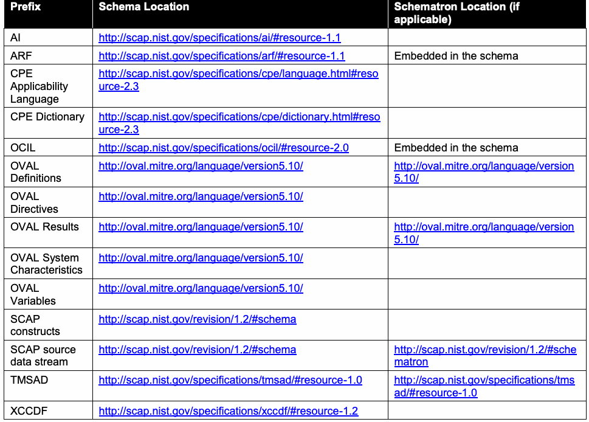
| 接頭辞 | スキーマの場所 | Schematronの場所（該当する場合 |
| ） | ||
| AI | http://scap.nist.gov/specifications/ai/#resource-1.1 | |
| ARF | http://scap.nist.gov/specifications/arf/#resource-1.1 | スキーマに埋め込み |
| CPE適用可能性言語 | http://scap.nist.gov/specifications/cpe/language.html#reso urce-2.3 | |
| CPE辞書 | http://scap.nist.gov/specifications/cpe/dictionary.html#reso urce-2.3 | |
| OCIL | http://scap.nist.gov/specifications/ocil/#resource-2.0 | スキーマに埋め込み |
| OVAL定義 | http://oval.mitre.org/language/version5.10/ | http://oval.mitre.org/language/version 5.10/ |
| OVALディレクティブ | http://oval.mitre.org/language/version5.10/ | |
| OVAL結果 | http://oval.mitre.org/language/version5.10/ | http://oval.mitre.org/language/version 5.10/ |
| OVALシステム特性 | http://oval.mitre.org/language/version5.10/ | |
| OVAL変数 | http://oval.mitre.org/language/version5.10/ | |
| SCAP構成要素 | http://scap.nist.gov/revision/1.2/#schema | |
| SCAPソースデータストリーム | http://scap.nist.gov/revision/1.2/#schema | http://scap.nist.gov/revision/1.2/#sche matron |
| TMSAD | http://scap.nist.gov/specifications/tmsad/#resource-1.0 | http://scap.nist.gov/specifications/tms ad/#resource-1.0 |
| XCCDF | http://scap.nist.gov/specifications/xccdf/#resource-1.2 |
Appendix E—Change Log
付録E—変更履歴
未レビュー訳Revision 2 Release 0 – 12 July 2011 Complete draft specification for version 1.2 released for public comment. Made editorial changes throughout the document. Added the following component specifications to SCAP: ARF 1.1, Asset Identification 1.1, CCSS 1.0, and TMSAD 1.0. Updated the following component specifications from SCAP 1.1: XCCDF from 1.1.4 to 1.2; OVAL from 5.8 to 5.10; and CPE from 2.2 to 2.3. Added and revised requirements throughout the specification to use these component specification versions. In Section 2, rewrote the conformance requirements and defined “content producer” and “content
改訂2 リリース0 – 12日 七月 2011年 バージョン1.2の仕様草案全体を公開コメント用に公開。 文書全体に編集上の変更を実施。 以下のコンポーネント仕様をSCAPに追加：ARF 1.1、Asset Identification 1.1、CCSS 1.0、およびTMSAD 1.0。以下のコンポーネント仕様をSCAP 1.1から更新：XCCDFを1.1.4から1.2へ、OVALを5.8から5.10へ、CPEを2.2から2.3へ。これらのコンポーネント仕様のバージョンを使用するための要件を仕様全体に追加および改訂。 セクション2で、適合要件を書き直し、「コンテンツ生成側」および「コンテンツ利用側」の用語を定義。
未レビュー訳consumer” terms. Section 3: o Added an SCAP source data stream subsection and a subsection on digitally signing source data stream content. o Added identifier use requirements for <xccdf:Rule> and <xccdf:ident> elements. o Added requirements for the <xccdf:Value> element. o Added requirements related to Schematron rules. Section 4: o Revised legacy support requirements for SCAP content and OVAL definition documents. o Added an SCAP result data stream subsection. Added source and result data stream requirements throughout the section. Also added a subsection on digitally signing result data stream content. o Added a declaration of the FDCC Reporting Format. In Section 5, added malware detection material to the Inventory Scanning use case. Updated the normative references. Added Appendix C (change log).
セクション3： o SCAPソースデータストリームの小節、およびソースデータストリームコンテンツへのデジタル署名に関する小節を追加。 o <xccdf:Rule>要素および<xccdf:ident>要素の識別子使用要件を追加。 o <xccdf:Value>要素の要件を追加。 o Schematronルールに関連する要件を追加。 セクション4： o SCAPコンテンツおよびOVAL定義文書に関するレガシーサポート要件を改訂。 o SCAP結果データストリームの小節を追加。このセクション全体にソースおよび結果データストリームの要件を追加。また、結果データストリームコンテンツへのデジタル署名に関する小節も追加。 o FDCC報告形式の宣言を追加。 セクション5では、インベントリスキャンのユースケースにマルウェア検出に関する内容を追加。 規範的参照を更新。 付録C（変更履歴）を追加。
未レビュー訳Revision 2 Release 1 – 28 September 2011 Final version released. Made editorial changes throughout document, including extensive addition of cross references. Section 3.1 (SCAP Source Data Stream): o Improved explanations of source data streams; added XML example and updated diagrams. o Added @schematron-version attribute to <ds:data-stream-collection>. o Added <ds:Tailoring> element to <ds:component> (was previously being treated as
改訂2 リリース1 – 28日 九月 2011年 最終版を公開。 相互参照の大幅な追加を含め、文書全体に編集上の変更を実施。 セクション3.1（SCAPソースデータストリーム）： o ソースデータストリームの説明を改善し、XMLの例を追加して図を更新。 o <ds:data-stream-collection>に@schematron-version属性を追加。 o <ds:component>に<ds:Tailoring>要素を追加（以前は<ds:extended-component>の要素として扱われていた）。
未レビュー訳an element of <ds:extended-component>). o Expanded the discussion of Schematron files. o Added conventions for globally unique identifiers for <scap:data-stream-collection>, <scap:data-stream>, <scap:component-ref>, <scap:component>, and <scap:extended-component>.
o Schematronファイルに関する説明を拡充。 o <scap:data-stream-collection>、<scap:data-stream>、<scap:component-ref>、<scap:component>、および<scap:extended-component>のグローバルに一意な識別子に関する規則を追加。
未レビュー訳• Section 3.2 (XCCDF):
o Prohibited use of XInclude elements in XCCDF content, use of the <xccdf:set-complex-value> element within the <xccdf:Profile> element, and use of XCCDF group extension.
o Clarified use of <xccdf:ident> elements and added the @con:negate attribute.
o Clarified use of <xccdf:check-content-ref> elements.
• 第3.2節（XCCDF）：
o XCCDFコンテンツ内でのXInclude要素の使用、<xccdf:Profile>要素内での<xccdf:set-complex-value>要素の使用、およびXCCDFグループ拡張の使用を禁止した。
o <xccdf:ident>要素の使用を明確化し、@con:negate属性を追加した。
o <xccdf:check-content-ref>要素の使用を明確化した。
• Section 4.1 (Legacy Support):
o Added explicit information and requirements regarding deprecated constructs in SCAP component specifications.
• 第4.1節（レガシーサポート）：
o SCAPコンポーネント仕様で非推奨となった構成要素に関する明示的な情報および要件を追加した。
E-1
E-1
Section 4.2 (Source Data Streams): o Added a Schematron requirement. o Clarified what warnings tools must issue for an unrecognized <ds:extended-
セクション4.2（ソースデータストリーム）： o Schematron要件を追加。 o 認識されない<ds:extended-に対してツールが発する必要のある警告（must）
未レビュー訳component>. Section 4.3 (XCCDF Processing): o Clarified the CPE applicability processing requirements. o Clarified requirements regarding the use of check systems not supported by SCAP.
component>。 セクション4.3（XCCDF処理）： o CPE適用可能性の処理要件を明確化。 o SCAPがサポートしないチェックシステムの使用に関する要件を明確化。
未レビュー訳 Section 4.4 (SCAP Result Data Streams): o Added an ARF example. o Added an scap-ref:associatedWith relationship requirement for ARF reports. Section 4.5 (XCCDF Results): o Deleted several facts from the XCCDF Fact Descriptions table. o Deleted redundant requirements (present in the latest XCCDF specification). o Clarified processing of <xccdf:ident> elements and added the @con:negate attribute. o Removed the requirements for the FDCC XCCDF results format. Section 5 (Source Data Stream Content Requirements for Use Cases): o Removed the OVAL-only use case. Appendices: o Added a new Appendix A containing security considerations for this version of SCAP. o Added a new Appendix C containing a glossary with key terms. o Added a list of SCAP schema and Schematron file locations to Appendix D.
セクション4.4（SCAP結果データストリーム）： o ARFの例を追加。 o ARFレポートに対するscap-ref:associatedWith関係の要件を追加。 セクション4.5（XCCDF結果）： o XCCDF事実記述表から複数の事実を削除。 o （最新のXCCDF仕様に含まれる）重複要件を削除。 o <xccdf:ident>要素の処理を明確化し、@con:negate属性を追加。 o FDCC XCCDF結果形式の要件を削除。 セクション5（ユースケースに関するソースデータストリームコンテンツ要件）： o OVALのみのユースケースを削除。 付録： o この版のSCAPに関するセキュリティ上の考慮事項を含む新しい付録Aを追加。 o 主要用語の用語集を含む新しい付録Cを追加。 o SCAPスキーマおよびSchematronファイルの場所の一覧を付録Dに追加。
未レビュー訳E-2
E-2
1. Errata
1. 正誤表
未レビュー訳The following table contains clarifications and corrections for Special Publication (SP) 800-126, Revision 2 as of the date indicated in the table.
以下の表には、表に示す日付時点におけるSpecial Publication（SP）800-126改訂2の明確化事項および訂正事項を記載する。
未レビュー訳The “Item” field indicates the errata item that is detailed in Section 0. The “Date” field indicates the date the erratum was added to this document in the format of
「Item」欄は、セクション0で詳述する正誤表項目を示す。「Date」欄は、この文書に正誤表が追加された日付を次の形式で示す。
未レビュー訳YYYY-MM-DD.
YYYY-MM-DD.
未レビュー訳The “Type” field describes the change category. A “Technical” change addresses and error in the technical content of the source document. An “Editorial” change addresses a syntax, spelling, punctuation, or grammatical change that does not affect the technical meaning of the source document. The “Description” field provides an overview of the change. The “Location” field indicates the specific section of text affected by the errata item.
「Type」欄は変更カテゴリを示す。「Technical」変更は、原文書の技術的内容の誤りに対処する。「Editorial」変更は、技術的意味に影響しない構文、スペル、句読点または文法上の変更に対処する。「Description」欄は変更の概要を示す。「Location」欄は正誤表項目の影響を受ける箇所を示す。
未レビュー訳| Item | Date | Type | Description | Location |
| E1 | 2011-11-29 | Technical | The “arf-rel” namespace is updated to the correct namespace as specified in the ARF specification. | P. 5, Table 1 |
| E2 | 2011-11-29 | Technical | The schema for the namespace “http://scap.nist.gov/schema/asset-reporting-format/1.1” has been updated to align with the ARF specification. | P. 5, Table 1 |
| E3 | 2012-01-27 | Technical | The schemas for OVAL 5.10 have been updated to correct various defects. | P. 5, Table 1 |
| E4 | 2012-02-13 | Technical | Clarify Guidance on Patches Up-To-Date Rule. | P. 22, Section 3.2.4.3 |
| E5 | 2012-02-13 | Technical | The schema for the namespace “http://scap.nist.gov/schema/asset-identification/1.1” has been updated to correct an erroneous restriction. | P. 5, Table 1 |
| E6 | 2012-02-13 | Technical | The schema for the namespace “http://scap.nist.gov/schema/asset-reporting-format/1.1” has been updated to include a version attribute. | P. 5, Table 1 |
| E7 | 2012-03-19 | Technical | The specification and schema for the namespace “http://checklists.nist.gov/xccdf/1.2” has been updated. | P. 5, Table 1 |
原本PDFの抜粋画像
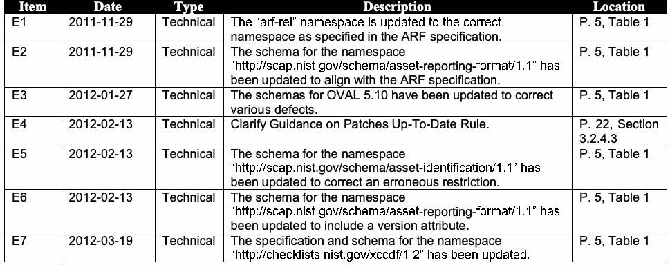
| 項目 | 日付 | 種別 | 説明 | 箇所 |
| E1 | 2011-11-29 | Technical | 「arf-rel」名前空間をARF仕様で定められた正しい名前空間に更新。 | P. 5, 表1 |
| E2 | 2011-11-29 | Technical | 名前空間「http://scap.nist.gov/schema/asset-reporting-format/1.1」のスキーマをARF仕様に適合するよう更新。 | P. 5, 表1 |
| E3 | 2012-01-27 | Technical | OVAL 5.10のスキーマを各種不具合の修正のため更新。 | P. 5, 表1 |
| E4 | 2012-02-13 | Technical | パッチ最新状態ルールのガイダンスを明確化。 | P. 22, セクション3.2.4.3 |
| E5 | 2012-02-13 | Technical | 名前空間「http://scap.nist.gov/schema/asset-identification/1.1」のスキーマを誤った制約の修正のため更新。 | P. 5, 表1 |
| E6 | 2012-02-13 | Technical | 名前空間「http://scap.nist.gov/schema/asset-reporting-format/1.1」のスキーマにバージョン属性を含めるよう更新。 | P. 5, 表1 |
| E7 | 2012-03-19 | Technical | 名前空間「http://checklists.nist.gov/xccdf/1.2」の仕様およびスキーマを更新。 | P. 5, 表1 |
2. Errata Detail
2. 正誤表の詳細
未レビュー訳E1.The “arf-rel” namespace is updated to the correct namespace as specified in the ARF specification.
E1.「arf-rel」名前空間をARF仕様で定められた正しい名前空間に更新。
未レビュー訳Date: November 29, 2011
日付：29日 十一月 2011年
未レビュー訳Type: Technical
種別：Technical
未レビュー訳Location: P. 5, Table 1
箇所：P. 5, 表1
未レビュー訳Description: The “arf-rel” namespace is specified incorrectly in Table 1. Therefore, the “arf-rel” namespace is updated to the correct namespace as specified in the ARF specification (NIST IR 7694, Section 6.1). This correction is also applicable to the sample document located in NIST IR 7694, Appendix D. The line <core:relationships xmlns:arfvocab="http://scap.nist.gov/vocabulary/arf/relationships/1.0#"> should be <core:relationships xmlns:arfvocab=" http://scap.nist.gov/specifications/arf/vocabulary/relationships/1.0#"> In addition, the same correction is made to the schematron rules in the ARF XML schema located at http://scap.nist.gov/schema/asset-reporting-format/1.1/asset-reporting-format_1.1.0.xsd. The line <sch:let name="arf-namespace" value="string('http://scap.nist.gov/vocabulary/arf/relationships/1.0#')"/> should be <sch:let name="arf-namespace" value="string('http://scap.nist.gov/specifications/arf/vocabulary/relationships/1.0#')"/>
説明：表1では「arf-rel」名前空間が誤って指定されているため、ARF仕様（NIST IR 7694、セクション6.1）で定められた正しい名前空間に更新する。この修正はNIST IR 7694付録Dのサンプル文書にも適用される。行 <core:relationships xmlns:arfvocab="http://scap.nist.gov/vocabulary/arf/relationships/1.0#"> は <core:relationships xmlns:arfvocab=" http://scap.nist.gov/specifications/arf/vocabulary/relationships/1.0#"> とする。さらに、http://scap.nist.gov/schema/asset-reporting-format/1.1/asset-reporting-format_1.1.0.xsd. にあるARF XMLスキーマ内のSchematronルールにも同じ修正を行う。行 <sch:let name="arf-namespace" value="string('http://scap.nist.gov/vocabulary/arf/relationships/1.0#')"/> は <sch:let name="arf-namespace" value="string('http://scap.nist.gov/specifications/arf/vocabulary/relationships/1.0#')"/> とする。
未レビュー訳Orginal Text:
原文：
| Prefix | Namespace | Schema |
| arf-rel | http://scap.nist.gov/vocabulary/arf/relationships/1.0# | ARF relationships |
原本PDFの抜粋画像
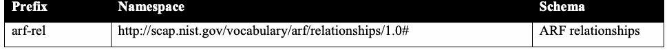
| 接頭辞 | 名前空間 | スキーマ |
| arf-rel | http://scap.nist.gov/vocabulary/arf/relationships/1.0# | ARF relationships |
New Text:
新しいテキスト：
| Prefix | Namespace | Schema |
| arf-rel | http://scap.nist.gov/specifications/arf/vocabulary/relationships/1.0# | ARF relationships |
原本PDFの抜粋画像
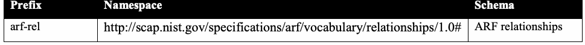
| 接頭辞 | 名前空間 | スキーマ |
| arf-rel | http://scap.nist.gov/specifications/arf/vocabulary/relationships/1.0# | ARF relationships |
E2.The schema for the namespace “http://scap.nist.gov/schema/asset-reporting-format/1.1” has been updated to align with the ARF specification.
E2. 名前空間「http://scap.nist.gov/schema/asset-reporting-format/1.1」のスキーマをARF仕様に適合するよう更新。
未レビュー訳Date: November 29, 2011
日付：29日 十一月 2011年
未レビュー訳Type: Technical
種別：Technical
未レビュー訳Location: P. 5, Table 1
箇所：P. 5, 表1
未レビュー訳Description: In the ARF schema the line <sch:let name="arf-namespace" value="string('http://scap.nist.gov/vocabulary/arf/relationships/1.0#')"/>
説明：ARFスキーマでは、行 <sch:let name="arf-namespace" value="string('http://scap.nist.gov/vocabulary/arf/relationships/1.0#')"/>
未レビュー訳was correct to: <sch:let name="arf-namespace" value="string('http://scap.nist.gov/specifications/arf/vocabulary/relationships/1.0#')"/>
は、<sch:let name="arf-namespace" value="string('http://scap.nist.gov/specifications/arf/vocabulary/relationships/1.0#')"/> に修正された。
未レビュー訳to make it consistent with the specification.
仕様との整合性を取るため。
未レビュー訳E3.The schemas for OVAL 5.10 have been updated to correct various defects.
E3. OVAL 5.10のスキーマは、各種不具合を修正するために更新された。
Date: January 27, 2012
日付：27日 一月 2012年
未レビュー訳Type: Technical
種別：Technical
未レビュー訳Location: P. 5, Table 1
箇所：P. 5, 表1
未レビュー訳Description: OVAL 5.10 has been updated to OVAL 5.10.1.
説明：OVAL 5.10をOVAL 5.10.1に更新。
未レビュー訳The following modifications have been made between OVAL 5.10 and OVAL 5.10.1 schema: Added the missing extended_name entity to the linux-def:rpmverifypackage_state
OVAL 5.10とOVAL 5.10.1のスキーマ間で以下の変更を行った：linux-def:rpmverifypackage_stateに欠落していたextended_nameエンティティを追加。
未レビュー訳Fixed the minOccurs attribute on the entities in the linux-def:rpmverifypackage_object and the linux-def:rpmverifyfile_object Updated the schema_version entity in the oval:GeneratorType to align with the new three-component version identifier Fixed owrite and oexec entity documentation in the macos-def:diskutil_test is incorrect Fixed win-sc:EntityItemWindowsViewType documentation for the empty string Deprecated include_group behavior in win-def:sharedresourceeffectiverights_test and win-def:sharedresourceauditedpermissions_test Updated the version element in the oval:DeprecatedInfoType to align with the three-component version identifier Updated the foreign_port documentation in the linux-def:inetlisteningservers_test
linux-def:rpmverifypackage_objectおよびlinux-def:rpmverifyfile_object内のエンティティのminOccurs属性を修正。oval:GeneratorType内のschema_versionエンティティを新しい三要素のバージョン識別子に適合するよう更新。macos-def:diskutil_testのowriteおよびoexecエンティティのドキュメントが誤っている点を修正。win-def:sharedresourceeffectiverights_testおよびwin-def:sharedresourceauditedpermissions_testのinclude_group動作を非推奨化。oval:DeprecatedInfoType内のversion要素を三要素のバージョン識別子に適合するよう更新。linux-def:inetlisteningservers_test内のforeign_portのドキュメントを更新。
未レビュー訳See http://oval.mitre.org/language/version5.10.1/#new for more details.
詳細については http://oval.mitre.org/language/version5.10.1/#new を参照。
E4.Clarify Guidance on Patches Up-To-Date Rule
E4. パッチ最新状態ルールに関するガイダンスを明確化
未レビュー訳Date: February 13, 2012
日付：13日 二月 2012年
未レビュー訳Type: Technical
種別：Technical
未レビュー訳Location: Section 3.2.4.3
箇所：セクション3.2.4.3
未レビュー訳Description: The current guidance on performing patches up-to-date checks assumes that patches are checked via numerous OVAL patch class definitions. If a single OVAL definition is leveraged to do patches up-to-date checking, then the following correction SHALL apply: For list item #3, the <xccdf:check-content-ref> SHALL refer to the single OVAL definition
説明：パッチの最新状態確認に関する現在のガイダンスは、多数のOVALパッチクラス定義を介してパッチを確認することを前提としている。単一のOVAL定義を利用してパッチの最新状態を確認する場合、次の修正を適用しなければならない（SHALL）：リスト項目#3では、<xccdf:check-content-ref>は単一のOVAL定義を参照しなければならない（SHALL）。
未レビュー訳performing the patches up-to-date check. For list item #4, the @multi-check attribute of the <xccdf:check> element SHOULD be set to “false”.
パッチの最新状態確認を実施する定義。リスト項目#4では、<xccdf:check>要素の@multi-check属性を「false」に設定することが望ましい（SHOULD）。
未レビュー訳The most common use case for this update is when Windows Update Agent (WUA) is used to perform patches up-to-date using only a single OVAL definition.
この更新の最も一般的なユースケースは、Windows Update Agent（WUA）を使用して単一のOVAL定義だけでパッチの最新状態確認を行う場合である。
E5.The schema for the namespace “http://scap.nist.gov/schema/asset-identification/1.1” has been updated to correct an erroneous restriction.
E5. 名前空間「http://scap.nist.gov/schema/asset-identification/1.1」のスキーマは、誤った制約を修正するために更新された。
Date: February 13, 2012
日付：13日 二月 2012年
未レビュー訳Type: Technical
種別：Technical
未レビュー訳Location: P. 5, Table 1
箇所：P. 5, 表1
未レビュー訳Description: The following modifications have been made to the Asset Identification schema:
説明：Asset Identificationスキーマに以下の変更を行った：
未レビュー訳The regular expression restriction on hostname-type was changed from “\w+(\.\w+){0,}” to “[\w\-]+(\.[\w\-]+){0,}” to allow valid hostnames to be specified containing dashes. The internal schema version was updated to 1.1.1.
hostname-typeに対する正規表現制約を「\w+(\.\w+){0,}」から「[\w\-]+(\.[\w\-]+){0,}」に変更し、ハイフンを含む有効なホスト名を指定可能にした。内部スキーマバージョンを1.1.1に更新。
未レビュー訳E6.The schema for the namespace “http://scap.nist.gov/schema/asset-reporting-format/1.1” has been updated to include a version attribute.
E6. 名前空間「http://scap.nist.gov/schema/asset-reporting-format/1.1」のスキーマは、version属性を含めるように更新された。
未レビュー訳Date: February 13, 2012
日付：2012年2月13日
未レビュー訳Type: Technical
種別：技術
未レビュー訳Location: P. 5, Table 1
場所：5ページ、表1
未レビュー訳Description: In the ARF schema, the internal schema version was updated to 1.1.1 due to the update made on Nov 29, 2011.
説明：ARFスキーマでは、2011年11月29日の更新に伴い、内部スキーマバージョンを1.1.1に更新。
未レビュー訳E7.The specification and schema for the namespace “http://checklists.nist.gov/xccdf/1.2” has been updated.
E7. 名前空間「http://checklists.nist.gov/xccdf/1.2」の仕様とスキーマは更新された。
Date: March 19, 2012
日付：2012年3月19日
未レビュー訳Type: Technical
種別：技術
未レビュー訳Location: P. 5, Table 1
場所：5ページ、表1
未レビュー訳Description: The following modifications have been made to the XCCDF schema:
説明：XCCDFスキーマに次の変更を実施。
未レビュー訳Removed the import of the Dublin Core schema since it was unused. Removed the unused overridableIdrefType. Removed the key constraint profileIdKeyRef that restricts the contents of the <xccdf:TestResult/xccdf:profile> element to match an <xccdf:Profile> element’s @id attribute within the same <xccdf:Benchmark> since this constraint isn't met when Tailoring files are used. Created named complex types for anonymous types defined within the xccdf:TestResults/xccdf:benchmark, xccdf:TestResults/xccdf:tailoring-file, xccdf:TestResults/xccdf:target-id-ref, xccdf:Tailoring/xccdf:benchmark, and xccdf:Tailoring/xccdf:version elements to match the type definition conventions using throughout the rest of the schema (and significantly simplifying the dictionary). Annotations in the XCCDF schema were extensively revised and expanded to better reflect the information present in the revised specification
未使用だったため、Dublin Coreスキーマのインポートを削除。未使用のoverridableIdrefTypeを削除。同じ<xccdf:Benchmark>内の<xccdf:Profile>要素の@id属性に一致するよう<xccdf:TestResult/xccdf:profile>要素の内容を制限するprofileIdKeyRefキー制約を削除。この制約はTailoringファイル使用時に満たされないためである。xccdf:TestResults/xccdf:benchmark、xccdf:TestResults/xccdf:tailoring-file、xccdf:TestResults/xccdf:target-id-ref、xccdf:Tailoring/xccdf:benchmark、xccdf:Tailoring/xccdf:version要素内で定義された匿名型について、他のスキーマ部分で使用される型定義規則に合わせ、名前付き複合型を作成（これによりディクショナリを大幅に簡素化）。改訂仕様に含まれる情報をより適切に反映するため、XCCDFスキーマの注釈を大幅に改訂・拡充。
未レビュー訳The following modifications have been made to the XCCDF specification:
XCCDF仕様に次の変更を実施。
未レビュー訳Typo fix in Table 22 - refine-rule entry: middle sentence says "refine-value" when it means "refine-rule" Typo fix in Table 22 - set-value & set-complex-value: last sentences claim that these may have remark elements as children, but this is not true Typo fix in Table 25 - In message property description, spec says that severity is optional, but it is required in the schema Typos in Table 21 - Before the list of selectors, the descriptions refer to a property's effects on a "profile". After the selectors, the descriptions refer to a property's effects on an "<xccdf:Profile>". Updated the document date from September to November Updated the change-log to reflect changes to the schema
表22のrefine-rule項目の誤記を修正。中間の文に"refine-rule"ではなく"refine-value"と記載されていた。表22のset-valueおよびset-complex-value項目の誤記を修正。最後の文では子要素としてremark要素を持てるとしていたが、これは誤り。表25の誤記を修正。messageプロパティの説明ではseverityを任意としていたが、スキーマでは必須。表21の誤記を修正。セレクターのリスト前ではプロパティが「profile」に与える影響と記載し、セレクターの後では「<xccdf:Profile>」に与える影響と記載していた。文書の日付を9月から11月に更新。スキーマの変更を反映するため変更履歴を更新。
未レビュー訳The updated XCCDF specification is available at http://csrc.nist.gov/publications/PubsNISTIRs.html#NIST-IR-7275-r4.
更新版XCCDF仕様は、http://csrc.nist.gov/publications/PubsNISTIRs.html#NIST-IR-7275-r4 で入手できる。